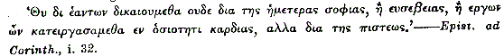

The Cloister
The new pope favoured the Dominican order. The convent received a message from the Vatican, requiring a capable friar to teach at the university of Basle. Now Clement was the very monk for this: well versed in languages, and in his worldly days had attended the lectures of Guarini the younger. His visit to England was therefore postponed, though not resigned; and meantime he was sent to Basle: but not being wanted there for three months, he was to preach on the road.
He passed out of the northern gate with his eyes lowered, and the whole man wrapped in pious contemplation.
Oh, if we could paint a mind and its story, what a walking fresco was this bare-footed friar!
Hopeful, happy love, bereavement, despair, impiety, vice, suicide, remorse, religious despondency, penitence, death to the world, resignation.
And all in twelve short months.
And now the traveller was on foot again. But all was changed: no perilous adventures now. The very thieves and robbers bowed to the ground before him, and, instead of robbing him, forced stolen money on him, and begged his prayers.
This journey therefore furnished few picturesque incidents. I have, however, some readers to think of, who care little for melodrama, and expect a quiet peep at what passes inside a man. To such students things undramatic are often vocal, denoting the progress of a mind.
The first Sunday of Clement's journey was marked by this. He prayed for the soul of Margaret. He had never done so before. Not that her eternal welfare was not dearer to him than anything on earth. It was his humility. The terrible impieties that burst from him on the news of her death horrified my well-disposed readers; but not as on reflection they horrified him who had uttered them. For a long time during his novitiate he was oppressed with religious despair. He thought he must have committed that sin against the Holy Spirit which dooms the soul forever. By degrees that dark cloud cleared away, Anselmo juvante: but deep self-abasement remained. He felt his own salvation insecure, and moreover thought it would be mocking Heaven, should he, the deeply stained, pray for a soul so innocent, comparatively, as Margaret's. So he used to coax good Anselm and another kindly monk to pray for her. They did not refuse, nor do it by halves. In general the good old monks (and there were good, bad, and indifferent, in every convent) had a pure and tender affection for their younger brethren, which, in truth, was not of this world.
Clement then, having preached on Sunday morning in a small Italian town, and being mightily carried onward, was greatly encouraged; and that day a balmy sense of God's forgiveness and love descended on him. And he prayed for the welfare of Margaret's soul. And from that hour this became his daily habit, and the one purified tie, that by memory connected his heart with earth.
For his family were to him as if they had never been.
The Church would not share with earth. Nor could even the Church cure the great love without annihilating the smaller ones.
During most of this journey Clement rarely felt any spring of life within him, but when he was in the pulpit. The other exceptions were, when he happened to relieve some fellow-creature.
A young man was tarantula bitten, or perhaps, like many more, fancied it. Fancy or reality, he had been for two days without sleep, and in most extraordinary convulsions, leaping, twisting, and beating the walls. The village musicians had only excited him worse with their music. Exhaustion and death followed the disease when it gained such a head. Clement passed by and learned what was the matter. He sent for a psaltery, and tried the patient with soothing melodies; but, if the other tunes maddened him, Clement's seemed to crush him. He groaned and moaned under them, and grovelled on the floor. At last the friar observed that at intervals his lips kept going. He applied his ear, and found the patient was whispering a tune; and a very singular one, that had no existence. He learned this tune, and played it. The patient's face brightened amazingly. He marched about the room on the light fantastic toe enjoying it; and when Clement's fingers ached nearly off with playing it, he had the satisfaction of seeing the young man sink complacently to sleep to this lullaby, the strange creation of his own mind; for it seems he was no musician, and never composed a tune before or after. This sleep saved his life. And Clement, after teaching the tune to another, in case it should be wanted again, went forward with his heart a little warmer. On another occasion he found a mob haling a decently-dressed man along, who struggled and vociferated, but in a strange language. This person had walked into their town erect and sprightly, waving a mulberry branch over his head. Thereupon the natives first gazed stupidly, not believing their eyes, then pounced on him and dragged him before the podesta.
Clement went with them: but on the way drew quietly near the prisoner and spoke to him in Italian; no answer. In French; German; Dutch; no assets. Then the man tried Clement in tolerable Latin, but with a sharpish accent. He said he was an Englishman, and, oppressed with the heat of Italy, had taken a bough off the nearest tree, to save his head. "In my country anybody is welcome to what grows on the highway. Confound the fools; I am ready to pay for it. But here is all Italy up in arms about a twig and a handful of leaves."
The pig-headed podesta would have sent the dogged islander to prison: but Clement mediated, and with some difficulty made the prisoner comprehend that silkworms, and by consequence mulberry leaves, were sacred, being under the wing of the Sovereign, and his source of income; and urged on the podesta that ignorance of his mulberry laws was natural in a distant country where the very tree perhaps was unknown. The opinionative islander turned the still vibrating scale by pulling out a long purse and repeating his original theory, that the whole question was mercantile. "Quid damni?" said he. "Dic; et cito solvam." The podesta snuffed the gold: fined him a ducat for the duke; about the value of the whole tree: and pouched the coin.
The Englishman shook off his ire the moment he was liberated and laughed heartily at the whole thing: but was very grateful to Clement.
"You are too good for this hole of a country, father," said he "Come to England! That is the only place in the world. I was an uneasy fool to leave it and wander among mulberries and their idiots. I am a Kentish squire, and educated at Cambridge University. My name it is Rolfe, my place Betshanger. The man and the house are both at your service. Come over and stay till domesday. We sit down forty to dinner every day at Betshanger. One more or one less at the board will not be seen. You shall end your days with me and my heirs if you will. Come now! What an Englishman says he means." And he gave him a great hearty grip of the hand to confirm it.
"I will visit thee some day, my son," said Clement: "but not to weary thy hospitality."
The Englishman then begged Clement to shrive him. "I know not what will become of my soul," said he. "I live like a heathen since I left England."
Clement consented gladly, and soon the islander was on his knees to him by the road-side, confessing the last month's sins.
Finding him so pious a son of the Church, Clement let him know he was really coming to England. He then asked him whether it was true that country was overrun with Lollards and Wickliffites.
The other coloured up a little. "There be black sheep in every land," said he. Then after some reflection he said, gravely "Holy father, hear the truth about these heretics. None are better disposed towards holy Church than we English. But we are ourselves, and by ourselves. We love our own ways, and, above all, our own tongue. The Norman could conquer our billhooks, but not our tongues; and hard they tried it for many a long year by law and proclamation. Our good foreign priests utter God to plain English folk in Latin, or in some French or Italian lingo, like the bleating of a sheep. Then come the fox Wickliff and his crew, and read him out of his own book in plain English, that all men's hearts warm to. Who can withstand this? God forgive me, I believe the English would turn deaf ears to St. Peter himself, spoke he not to them in the tongue their mothers sowed in their ears and their hearts along with mothers' kisses." He added hastily, "I say not this for myself; I am Cambridge bred; and good words come not amiss to me in Latin; but for the people in general. Clavis ad corda Anglorum est lingua materna."
"My son," said Clement, "blessed be the hour I met thee; for thy words are sober and wise. But, alas! how shall I learn your English tongue? No book have I."
"I would give you my book of hours, father. 'Tis in English and Latin, cheek by jowl. But, then, what would become of my poor soul, wanting my 'hours' in a strange land? Stay, you are a holy man, and I am an honest one; let us make a bargain; you to pray for me every day for two months, and I to give you my book of hours. Here it is. What say you to that?" And his eyes sparkled, and he was all on fire with mercantility.
Clement smiled gently at this trait: and quietly detached a MS. from his girdle, and showed him that it was in Latin and Italian.
"See, my son," said he, "Heaven hath forseen our several needs, and given us the means to satisfy them: let us change books; and, my dear son, I will give thee my poor prayers and welcome, not sell them thee. I love not religious bargains."
The islander was delighted. "So shall I learn the Italian tongue without risk to my eternal weal. Near is my purse, but nearer is my soul."
He forced money on Clement. In vain the friar told him it was contrary to his vow to carry more of that than was barely necessary.
"Lay it out for the good of the Church and of my soul," said the islander. "I ask you not to keep it, but take it you must and shall." And he grasped Clement's hand warmly again: and Clement kissed him on the brow, and blessed him, and they went each his way.
About a mile from where they parted, Clement found two tired wayfarers lying in the deep shade of a great chestnut-tree, one of a thick grove the road skirted. Near the men was a little cart, and in it a printing-press, rude and clumsy as a vine-press. A jaded mule was harnessed to the cart.
And so Clement stood face to face with his old enemy.
And as he eyed it, and the honest, blue-eyed faces of the wearied craftsmen, he looked back as on a dream at the bitterness he had once felt towards this machine. He looked kindly down on them and said, softly,
"Sweynheim!"
The men started to their feet.
"Pannartz!"
They scuttled into the wood, and were seen no more.
Clement was amazed, and stood puzzling himself.
Presently a face peeped from behind a tree.
Clement addressed it. "What fear ye?"
A quavering voice replied, "Say, rather, by what magic you, a stranger, can call us by our names! I never clapt eyes on you till now."
"O superstition! I know ye, as all good workmen are known--by your works. Come hither and I will tell ye."
They advanced gingerly from different sides; each regulating his advance by the other's.
"My children," said Clement, "I saw a Lactantius in Rome, printed by Sweynheim and Pannartz, disciples of Fust."
"D'ye hear that, Pannartz? our work has gotten to Rome already."
"By your blue eyes and flaxen hair I wist ye were Germans: and the printing-press spoke for itself. Who then should ye be but Fust's disciples, Pannartz and Sweynheim?"
The honest Germans were now astonished that they had suspected magic in so simple a matter.
"The good father hath his wits about him, that is all," said Pannartz.
"Ay," said Sweynheim, "and with those wits would he could tell us how to get this tired beast to the next town."
"Yea," said Sweynheim, "and where to find money to pay for his meat and ours when we get there."
"I will try," said Clement. "Free the mule of the cart, and of all harness but the bare halter."
This was done, and the animal immediately lay down and rolled on his back in the dust like a kitten. Whilst he was thus employed, Clement assured them he would rise up a new mule. "His Creator hath taught him this art to refresh himself, which the nobler horse knoweth not. Now, with regard to money, know that a worthy Englishman hath intrusted me with a certain sum to bestow in charity. To whom can I better give a stranger's money than to strangers? Take it, then, and be kind to some Englishman or other stranger in his need; and may all nations learn to love one another one day."
The tears stood in the honest workmen's eyes. They took the money with heartfelt thanks.
"It is your nation we are bound to thank and bless, good Father, if we but knew it."
"My nation is the Church."
Clement was then for bidding them farewell, but the honest fellows implored him to wait a little; they had no silver nor gold, but they had something they could give their benefactor. They took the press out of the cart, and, while Clement fed the mule, they bustled about, now on the white hot road, now in the deep cool shade, now half in and half out, and presently printed a quarto sheet of eight pages, which was already set up. They had not type enough to print two sheets at a time. When, after the slower preliminaries, the printed sheet was pulled all in a moment, Clement was amazed in turn.
"What are all these words really fast upon the paper?" said he. "Is it verily certain they will not go as swiftly as they came? And you took me for a magician! 'Tis 'Augustine de civitate Dei.' My sons, you carry here the very wings of knowledge. Oh, never abuse this great craft! Print no ill books! They would fly abroad countless as locusts, and lay waste men's souls."
The workmen said they would sooner put their hands under the screw than so abuse their goodly craft.
And so they parted.
There is nothing but meeting and parting in this world.
At a town in Tuscany the holy friar had a sudden and strange recontre with the past. He fell in with one of those motley assemblages of patricians and plebeians, piety and profligacy, "a company of pilgrims"; a subject too well painted by others for me to go and daub.
They were in an immense barn belonging to the inn. Clement, dusty and wearied, and no lover of idle gossip, sat in a corner studying the Englishman's hours, and making them out as much by his own Dutch as by the Latin version.
Presently a servant brought a bucket half full of water, and put it down at his feet. A female servant followed with two towels. And then a woman came forward, and, crossing herself, kneeled down without a word at the bucket-side, removed her sleeves entirely, and motioned to him to put his feet into the water. It was some lady of rank doing penance. She wore a mask scarce an inch broad but effectual. Moreover, she handled the friar's feet more delicately than those do who are born to such offices.
These penances were not uncommon; and Clement, though he had little faith in this form of contrition, received the services of the incognita as a matter of course. But presently she sighed deeply, and, with her heartfelt sigh and her head bent low over her menial office, she seemed so bowed with penitence, that he pitied her and said, calmly but gently, "Can I aught for your soul's weal, my daughter?"
She shook her head with a faint sob. "Nought, holy father, nought: only to hear the sin of her who is most unworthy to touch thy holy feet. 'Tis part of my penance to tell sinless men how vile I am."
"Speak, my daughter."
"Father," said the lady, bending lower and lower, "these hands of mine look white, but they are stained with blood,--the blood of the man I loved. Alas! you withdraw your foot. Ah me! What shall I do? All holy things shrink from me."
"Culpa mea! culpa mea!" said Clement eagerly. "My daughter, it was an unworthy movement of earthly weakness, for which I shall do penance. Judge not the Church by her feebler servants. Not her foot, but her bosom, is offered to thee, repenting truly. Take courage, then, and purge thy conscience of its load."
On this the lady, in a trembling whisper, and hurriedly, and cringing a little, as if she feared the Church would strike her bodily for what she had done, made this confession.
"He was a stranger, and base-born, but beautiful as Spring, and wise beyond his years. I loved him. I had not the prudence to conceal my love. Nobles courted me. I ne'er thought one of humble birth could reject me. I showed him my heart; oh, shame of my sex! He drew back; yet he admired me: but innocently. He loved another: and he was constant. I resorted to a woman's wiles. They availed not. I borrowed the wickedness of men, and threatened his life, and to tell his true lover he died false to her. Ah! you shrink; your foot trembles. Am I not a monster? Then he wept and prayed to me for mercy; then my good angel helped me; I bade him leave Rome. Gerard, Gerard, why did you not obey me? I thought he was gone. But two months after this I met him. Never shall I forget it. I was descending the Tiber in my galley, when he came up it with a gay company, and at his side a woman beautiful as an angel, but bold and bad. That woman claimed me aloud for her rival. Traitor and hypocrite, he had exposed me to her, and to all the loose tongues in Rome. In terror and revenge I hired--a bravo. When he was gone on his bloody errand, I wavered too late. The dagger I had hired struck. He never came back to his lodgings. He was dead. Alas! perhaps he was not so much to blame: none have ever cast his name in my teeth. His poor body is not found: or I should kiss its wounds; and slay myself upon it. All around his very name seems silent as the grave, to which this murderous hand has sent him." (Clement's eyes were drawn by her movement. He recognized her shapely arm, and soft white hand.) "And oh! he was so young to die. A poor thoughtless boy, that had fallen a victim to that bad woman's arts, and she had made him tell her everything. Monster of cruelty, what penance can avail me? Oh, holy father, what shall I do?"
Clement's lips moved in prayer, but he was silent. He could not see his duty clear.
Then she took his feet and began to dry them. She rested his foot upon her soft arm, and pressed it with the towel so gently she seemed incapable of hurting a fly. Yet her lips had just told another story, and a true one.
While Clement was still praying for wisdom, a tear fell upon his foot. It decided him. "My daughter," said he, "I myself have been a great sinner."
"You, father?"
"I; quite as great a sinner as thou; though not in the same way. The devil has gins and snares, as well as traps. But penitence softened my impious heart, and then gratitude remoulded it. Therefore, seeing you penitent, I hope you can be grateful to Him, who has been more merciful to you than you have to your fellow-creature. Daughter, the Church sends you comfort."
"Comfort to me? ah! never! unless it can raise my victim from the dead."
"Take this crucifix in thy hand, fix thine eyes on it, and listen to me," was all the reply.
"Yes, father; but let me thoroughly dry your feet first: 'tis ill sitting in wet feet: and you are the holiest man of all whose feet I have washed. I know it by your voice."
"Woman, I am not. As for my feet, they can wait their turn. Obey thou me!"
"Yes, father," said the lady, humbly. But with a woman's evasive pertinacity she wreathed one towel swiftly round the foot she was drying, and placed his other foot on the dry napkin; then obeyed his command.
And, as she bowed over the crucifix, the low, solemn, tones of the friar fell upon her ear, and his words soon made her whole body quiver with various emotions, in quick succession.
"My daughter, he you murdered--in intent--was one Gerard, a Hollander. He loved a creature, as man should love none but their Redeemer and his Church. Heaven chastised him. A letter came to Rome. She was dead."
"Poor Gerard! Poor Margaret!" moaned the penitent.
Clement's voice faltered at this a moment. But soon, by a strong effort, he recovered all his calmness.
"His feeble nature yielded, body and soul, to the blow. He was stricken down with fever. He revived only to rebel against Heaven. He said 'There is no God.'"
"Poor, poor, Gerard!"
"Poor Gerard? thou feeble, foolish woman! Nay, wicked, impious Gerard. He plunged into vice, and soiled his eternal jewel: those you met him with were his daily companions: but know, rash creature, that the seeming woman you took to be his leman was but a boy, dressed in woman's habits to flout the others, a fair boy called Andrea. What that Andrea said to thee I know not; but be sure neither he, nor any layman, knows thy folly. This Gerard, rebel against Heaven, was no traitor to thee, unworthy."
The lady moaned like one in bodily agony, and the crucifix began to tremble in her trembling hands.
"Courage!" said Clement. "Comfort is at hand."
"From crime he fell into despair, and, bent on destroying his soul, he stood one night by Tiber, resolved on suicide. He saw one watching him. It was a bravo."
"Holy saints!"
"He begged the bravo to despatch him; he offered him all his money, to slay him body and soul. The bravo would not. Then this desperate sinner, not softened even by that refusal, flung himself into Tiber."
"Ah!"
"And the assassin saved his life. Thou hadst chosen for the task Lodovico, husband of Teresa, whom this Gerard had saved at sea, her and her infant child."
"He lives! he lives! he lives! I am faint."
The friar took the crucifix from her hands, fearing it might fall. A shower of tears relieved her. The friar gave her time; then continued, calmly. "Ay, he lives; thanks to thee and thy wickedness, guided to his eternal good by an almighty and all-merciful hand. Thou art his greatest earthly benefactor."
"Where is he? where? where?"
"What is that to thee?"
"Only to see him alive. To beg him on my knees forgive me. I swear to you I will never presume again to--How could I? He knows all. Oh, shame! Father, does he know?"
"All."
"Then never will I meet his eye; I should sink into the earth. But I would repair my crime. I would watch his life unseen. He shall rise in the world, whence I so nearly thrust him, poor soul; the Cæsare, my family, are all-powerful in Rome; and I am near their head."
"My daughter," said Clement, coldly, "he you call Gerard needs nothing man can do for him. Saved by a miracle from double death, he has left the world, and taken refuge from sin and folly in the bosom of the Church."
"A priest?"
"A priest, and a friar."
"A friar? Then you are not his confessor? Yet you know all. That gentle voice!"
She raised her head slowly, and peered at him through her mask.
The next moment she uttered a faint shriek, and lay with her brow upon his bare feet.
Clement sighed. He began to doubt whether he had taken the wisest course with a creature so passionate.
But young as he was, he had already learned many lessons of ecclesiastical wisdom. For one thing he had been taught to pause: i. e., in certain difficulties, neither to do nor say anything, until the matter should clear itself a little.
He therefore held his peace and prayed for wisdom.
All he did was gently to withdraw his foot.
But his penitent flung her arms round it with a piteous cry, and held convulsively, and wept over it.
And now the agony of shame, as well as penitence, she was in, showed itself by the bright red that crept over her very throat, as she lay quivering at his feet.
"My daughter," said Clement gently, "take courage. Torment thyself no more about this Gerard, who is not. As for me, I am brother Clement, whom Heaven hath sent to thee this day to comfort thee, and help thee save thy soul. Thou hast made me thy confessor. I claim, then, thine obedience."
"Oh, yes," sobbed the penitent.
"Leave this pilgrimage, and instant return to Rome. Penitence abroad is little worth. There where we live lie the temptations we must defeat, or perish; not fly in search of others more showy, but less lethal. Easy to wash the feet of strangers, masked ourselves. Hard to be merely meek and charitable with those about us."
"I'll never, never, lay finger on her again."
"Nay, I speak not of servants only, but of dependents, kinsmen, friends. This be thy penance; the last thing at night, and the first thing after matins, call to mind thy sin, and God his goodness; and so be humble, and gentle to the faults of those around thee. The world it courts the rich; but seek thou the poor: not beggars; these for the most are neither honest nor truly poor. But rather find out those who blush to seek thee, yet need thee sore. Giving to them shalt lend to Heaven. Marry a good son of the Church."
"Me? I will never marry."
"Thou wilt marry within the year. I do entreat and command thee to marry one that feareth God. For thou art very clay. Mated ill thou shalt be nought. But wedding a worthy husband thou mayest, Dei gratiâ, live a pious princess; ay, and die a saint."
"I?"
"Thou."
He then desired her to rise and go about the good work he had set her.
She rose to her knees, and, removing her mask, cast an eloquent look upon him, then lowered her eyes meekly.
"I will obey you as I would an angel. How happy I am, yet unhappy; for oh my heart tells me I shall never look on you again. I will not go till I have dried your feet."
"It needs not. I have excused thee this bootless penance."
" 'Tis no penance to me. Ah! you do not forgive me, if you will not let me dry your poor feet."
"So be it then," said Clement, resignedly; and thought to himself "Levius quid foeminâ."
But these weak creatures, that gravitate towards the small, as heavenly bodies towards the great, have yet their own flashes of angelic intelligence.
When the princess had dried the friar's feet, she looked at him with tears in her beautiful eyes, and murmured with singular tenderness and goodness--
"I will have masses said for her soul. May I?" she added timidly.
This brought a faint blush into the monk's cheek, and moistened his cold blue eye. It came so suddenly from one he was just rating so low.
"It is a gracious thought," he said. "Do as thou wilt: often such acts fall back on the doer like blessed dew. I am thy confessor; not hers; thine is the soul I must now do my all to save, or woe be to my own. My daughter, my dear daughter, I see good and ill angels fighting for thy soul this day, ay, this moment; oh, fight thou on thine own side. Doth thou remember all I bade thee?"
"Remember!" said the princess. "Sweet saint, each syllable of thine is graved in my heart."
"But one word more then. Pray much to Christ, and little to his saints."
"I will."
"And that is the best word I have light to say to thee. So part we on it. Thou to the place becomes thee best, thy father's house: I to my holy mother's work."
"Adieu," faltered the princess. "Adieu thou that I have loved too well, hated too ill, known and revered too late; forgiving angel adieu--for ever."
The monk caught her words, though but faltered in a sigh.
"FOR EVER?" he cried aloud with sudden ardour. "Christians live 'FOR EVER,' and love 'FOR EVER,' but they never part 'FOR EVER.' They part, as part the earth and sun, to meet more brightly in a little while. You and I part here for life. And what is our life? One line in the great story of the Church, whose son and daughter we are; one handful in the sand of time, one drop in the ocean of 'FOR EVER.' Adieu--for the little moment called 'a life!' We part in trouble, we shall meet in peace: we part creatures of clay, we shall meet immortal spirits: we part in a world of sin and sorrow, we shall meet where all is purity and love divine; where no ill passions are, but Christ is, and his saints around him clad in white. There, in the turning of an hour-glass, in the breaking of a bubble, in the passing of a cloud, she, and thou, and I, shall meet again; and sit at the feet of angels and archangels, apostles and saints, and beam like them with joy unspeakable, in the light of the shadow of God upon his throne, FOR EVER--AND EVER--AND EVER."
And so they parted. The monk erect, his eyes turned heavenwards and glowing with the sacred fire of zeal; the princess slowly retiring and turning more than once to cast a lingering glance of awe and tender regret on that inspired figure.
She went home subdued, and purified. Clement, in due course, reached Basle, and entered on his duties, teaching in the University, and preaching in the town and neighbourhood. He led a life that can be comprised in two words; deep study, and mortification. My reader has already a peep into his soul. At Basle he advanced in holy zeal and knowledge.
The brethren of his order began to see in him a descendant of the saints and martyrs.
The Hearth
When little Gerard was nearly three months old, a messenger came hot from Tergou for Catherine.
"Now just you go back," said she, "and tell them I can't come and I won't: they have got Kate." So he departed, and Catherine continued her sentence; "there, child, I must go: they are all at sixes and sevens: this is the third time of asking; and to-morow my man would come himself and take me home by the ear, with a flea in't." She then recapitulated her experiences of infants, and instructed Margaret what to do in each coming emergency, and pressed money upon her. Margaret declined it with thanks. Catherine insisted, and turned angry. Margaret made excuses all so reasonable that Catherine rejected them with calm contempt: to her mind they lacked femininity. "Come, out with your heart," said she; "and you and me parting; and mayhap shall never see one another's face again."
"Oh! mother, say not so."
"Alack, girl, I have seen it so often; 'twill come into my mind now at each parting. When I was your age, I never had such a thought. Nay, we were all to live for ever then: so out wi' it."
"Well then, mother--I would rather not have told you--your Cornelis must say to me, 'So you are come to share with us, eh, mistress?' those were his words. I told him I would be very sorry."
"Beshrew his ill tongue! What signifies it? He will never know."
"Most likely he would sooner or later. But, whether or no, I will take no grudge bounty from any family; unless I saw my child starving, and then Heaven only knows what I might do. Nay, mother: give me but thy love--I do prize that above silver, and they grudge me not that, by all I can find--for not a stiver of money will I take out of your house."
"You are a foolish lass. Why, were it me, I'd take it just to spite him."
"No, you would not. You and I are apples of one tree."
Catherine yielded with a good grace; and, when the actual parting came, embraces and tears burst forth on both sides.
When she was gone the child cried a good deal; and all attempts to pacify him failing, Margaret suspected a pin, and, searching between his clothes and his skin, found a gold angel incommoding his backbone.
"There now, Gerard," said she to the babe; "I thought granny gave in rather sudden."
She took the coin and wrapped it in a piece of linen, and laid it at the bottom of her box, bidding the infant observe she could be at times as resolute as granny herself.
Catherine told Eli of Margaret's foolish pride, and how she had baffled it. Eli said Margaret was right, and she was wrong. Catherine tossed her head. Eli pondered.
Margaret was not without domestic anxieties. She had still two men to feed, and could not work so hard as she had done. She had enough to do to keep the house, and the child, and cook for them all. But she had a little money laid by, and she used to tell her child his father would be home to help them before it was spent. And with these bright hopes, and that treasury of bliss, her boy, she spent some happy months.
Time wore on: and no Gerard came; and, stranger still, no news of him.
Then her mind was disquieted, and, contrary to her nature, which was practical, she was often lost in sad reverie; and sighed in silence. And, while her heart was troubled, her money was melting. And so it was, that one day she found the cupboard empty and looked in her dependents' faces; and, at the sight of them, her bosom was all pity; and she appealed to the baby whether she could let grandfather and poor old Martin want a meal; and went and took out Catherine's angel. As she unfolded the linen a tear of gentle mortification fell on it. She sent Martin out to change it. While he was gone a Frenchman came with one of the dealers in illuminated work, who had offered her so poor a price. He told her he was employed by his sovereign to collect masterpieces for her book of hours. Then she showed him the two best things she had; and he was charmed with one of them, viz., the flowers and raspberries and creeping things, which Margaret Van Eyck had shaded. He offered her an unheard-of price. "Nay, flout not my need, good stranger," said she: "three mouths there be in this house, and none to fill them but me."
Curious arithmetic! Left out No. 1.
"I flout thee not, fair mistress. My princess charged me strictly, 'Seek the best craftsmen; but I will no hard bargains; make them content with me, and me with them.'"
The next minute Margaret was on her knees kissing little Gerard in the cradle, and showering four gold pieces on him again and again, and relating the whole occurrence to him in very broken Dutch.
"And oh what a good princess: wasn't she? We will pray for her, won't we, my lambkin; when we are old enough?"
Martin came in furious. "They will not change it. I trow they think I stole it."
"I am beholden to thee," said Margaret, hastily, and almost snatched it from Martin, and wrapped it up again, and restored it to its hiding-place.
Ere these unexpected funds were spent, she got to her ironing and starching again. In the midst of which Martin sickened; and died after an illness of nine days.
Nearly all of her money went to bury him decently.
He was gone; and there was an empty chair by her fireside. For he had preferred the hearth to the sun as soon as the Busybody was gone.
Margaret would not allow anybody to sit in this chair now. Yet whenever she let her eye dwell too long on it, vacant, it was sure to cost her a tear.
And now there was nobody to carry her linen home. To do it herself she must leave little Gerard in charge of a neighbour. But she dared not trust such a treasure to mortal; and besides she could not bear him out of her sight for hours and hours. So she set inquiries on foot for a boy to carry her basket on Saturday and Monday.
A plump, fresh-coloured youth, called Luke Peterson, who looked fifteen, but was eighteen came in, and blushing, and twiddling his bonnet, asked her if a man would not serve her turn as well as a boy.
Before he spoke she was saying to herself, "This boy will just do." But she took the cue, and said, "Nay; but a man will maybe seek more than I can well pay."
"Not I," said Luke, warmly. "Why, Mistress Margaret, I am your neighbour, and I do very well at the coopering. I can carry your basket for you before or after my day's work, and welcome. You have no need to pay me anything. 'Tisn't as if we were strangers, ye know."
"Why, Master Luke, I know your face, for that matter; but I cannot call to mind that ever a word passed between us."
"Oh yes, you did, Mistress Margaret. What have you forgotten? One day you were trying to carry your baby and eke your pitcher full o' water: and, quo' I, 'Give me the baby to carry.' 'Nay,' says you, 'I'll give you the pitcher, and keep the bairn myself:' and I carried the pitcher home, and you took it from me at this door, and you said to me, 'I am muckle obliged to you, young man,' with such a sweet voice; not like the folk in this street speak to a body."
"I do mind now, Master Luke; and methinks it was the least I could say."
"Well, Mistress Margaret, if you will say as much every time I carry your basket, I care not how often I bear it, nor how far."
"Nay, nay," said Margaret, colouring faintly. "I would not put upon good nature. You are young, Master Luke, and kindly. Say I give you your supper on Saturday night, when you bring the linen home, and your dawn-mete o' Monday; would that make us anyways even?"
"As you please; only say not I sought a couple o' diets, I, for such a trifle as yon."
With chubby-faced Luke's timely assistance, and the health and strength which Heaven gave this poor young woman, to balance her many ills, the house went pretty smoothly awhile. But the heart became more and more troubled by Gerard's long and now most mysterious silence.
And then that mental torture, Suspense, began to tear her heavy heart with his hot pinchers, till she cried often and vehemently, "Oh that I could know the worst."
While she was in this state, one day she heard a heavy step mount the stair. She started and trembled. "That is no step that I know. Ill tidings!"
The door opened, and an unexpected visitor, Eli, came in, looking grave and kind.
Margaret eyed him in silence, and with increasing agitation.
"Girl," said he, "the skipper is come back."
"One word," gasped Margaret, "is he alive?"
"Surely, I hope so. No one has seen him dead."
"Then they must have seen him alive."
"No girl; neither dead nor alive hath he been seen this many months in Rome. My daughter Kate thinks he is gone to some other city. She bade me tell you her thought."
"Ay, like enough," said Margaret, gloomily; "like enough. My poor babe!"
The old man in a faintest voice asked her for a morsel to eat: he had come fasting.
The poor thing pitied him with the surface of her agitated mind, and cooked a meal for him, trembling, and scarce knowing what she was about.
Ere he went he laid his hand upon her head, and said, "Be he alive, or be he dead, I look on thee as my daughter. Can I do nought for thee this day? bethink thee now."
"Ay, old man. Pray for him; and for me!"
Eli sighed, and went sadly and heavily down the stairs.
She listened half stupidly to his retiring footsteps till they ceased. Then she sank moaning down by the cradle, and drew little Gerard tight to her bosom. "Oh, my poor fatherless boy; my fatherless boy!"
Not long after this, as the little family at Tergou sat at dinner, Luke Peterson burst in on them, covered with dust. "Good people, Mistress Catherine is wanted instantly at Rotterdam."
"My name is Catherine, young man. Kate, it will be Margaret."
"Ay dame, she said to me, 'Good Luke, hie thee to Tergou, and ask for Eli the hosier, and pray his wife Catherine to come to me, for God his love.' I didn't wait for daylight."
"Holy saints! He has come home, Kate. Nay, she would sure have said so. What on earth can it be?" And she heaped conjecture on conjecture.
"Mayhap the young man can tell us," hazarded Kate, timidly.
"That I can," said Luke. "Why, her babe is a-dying. And she was so wrapped up in it!"
Catherine started up: "What is his trouble?"
"Nay, I know not. But it has been peaking and pining worse and worse this while."
A furtive glance of satisfaction passed between Cornelis and Sybrandt. Luckily for them Catherine did not see it. Her face was turned towards her husband. "Now, Eli," cried she, furiously, "if you say a word against it, you and I shall quarrel, after all these years."
"Who gainsays thee, foolish woman? Quarrel with your own shadow; while I go borrow Peter's mule for ye."
"Bless thee, my good man! Bless thee! Didst never yet fail me at a pinch. Now eat your dinners who can, while I go and make ready."
She took Luke back with her in the cart, and, on the way, questioned and cross-questioned him, severely, and seductively, by turns, till she had turned his mind inside out, what there was of it.
Margaret met her at the door, pale and agitated, and threw her arms round her neck, and looked imploringly in her face.
"Come, he is alive, thank God," said Catherine, after scanning her eagerly.
She looked at the failing child, and then at the poor hollow-eyed mother, alternately. "Lucky you sent for me," said she. "The child is poisoned."
"Poisoned! by whom?"
"By you. You have been fretting."
"Nay, indeed, mother. How can I help fretting?"
"Don't tell me, Margaret. A nursing mother has no business to fret. She must turn her mind away from her grief to the comfort that lies in her lap. Know you not that the child pines if the mother vexes herself? This comes of your reading and writing. Those idle crafts befit a man; but they keep all useful knowledge out of a woman. The child must be weaned."
"Oh, you cruel woman," cried Margaret, vehemently; "I am sorry I sent for you. Would you rob me of the only bit of comfort I have in the world? A-nursing my Gerard, I forget I am the most unhappy creature beneath the sun."
"That you do not," was the retort, "or he would not be the way he is."
"Mother!" said Margaret, imploringly.
"'Tis hard," replied Catherine, relenting. "But bethink thee; would it not be harder to look down and see his lovely wee face a-looking up at you out of a little coffin?"
"O, Jesu!"
"And how could you face your other troubles with your heart aye full, and your lap empty?"
"Oh, mother, I consent to anything. Only save my boy."
"That is a good lass. Trust to me! I do stand by, and see clearer than thou."
Unfortunately there was another consent to be gained; the babe's: and he was more refractory than his mother.
"There," said Margaret, trying to affect regret at his misbehaviour; "he loves me too well."
But Catherine was a match for them both. As she came along she had observed a healthy young woman, sitting outside her own door, with an infant hard by. She went and told her the case; and would she nurse the pining child for the nonce, till she had matters ready to wean him?
The young woman consented with a smile, and popped her child into the cradle and came into Margaret's house. She dropped a curtsy, and Catherine put the child into her hands. She examined, and pitied it, and purred over it, and proceeded to nurse it, just as if it had been her own.
Margaret, who had been paralyzed at her assurance, cast a rueful look at Catherine, and burst out crying.
The visitor looked up. "What is to do? Wife, ye told me not the mother was unwilling."
"She is not: she is only a fool. Never heed her: and you, Margaret, I am ashamed of you."
"You are a cruel, hard-hearted woman," sobbed Margaret.
"Them as take in hand to guide the weak, need be hardish. And you will excuse me; but you are not my flesh and blood: and your boy is."
After giving this blunt speech time to sink, she added, "Come now, she is robbing her own to save yours, and you can think of nothing better than bursting out a-blubbering in the woman's face. Out fie, for shame!"
"Nay, wife," said the nurse. "Thank Heaven, I have enough for my own and for hers to boot. And prithee wyte not on her! Maybe the troubles o' life ha' soured her own milk."
"And her heart into the bargain," said the remorseless Catherine.
Margaret looked her full in the face; and down went her eyes.
"I know I ought to be very grateful to you," sobbed Margaret to the nurse: then turned her head and leaned away over the chair, not to witness the intolerable sight of another nursing her Gerard, and Gerard drawing no distinction between this new mother, and her the banished one.
The nurse replied, "You are very welcome, my poor woman. And so are you, Mistress Catherine, which are my townswoman, and know it not."
"What, are ye from Tergou? all the better. But I cannot call your face to mind."
"Oh, you know not me: my husband and me, we are very humble folk by you. But true Eli and his wife are known of all the town; and respected. So I am at your call, dame; and at yours, wife; and yours, my pretty poppet; night or day."
"There's a woman of the right old sort," said Catherine, as the door closed upon her.
"I HATE her. I HATE her. I HATE her," said Margaret, with wonderful fervour.
Catherine only laughed at this outburst.
"That is right," said she, "better say it, as set sly and think it. It is very natural after all. Come, here is your bundle o' comfort. Take and hate that; if ye can:" and she put the child in her lap.
"No, no;" said Margaret, turning her head half away from him: she could not for her life turn the other half. "He is not my child now; he is hers. I know not why she left him here, for my part. It was very good of her not to take him to her house, cradle and all; oh! oh! oh! oh! oh! oh! oh! oh!"
"Ah! well, one comfort, he is not dead. This gives me light; some other woman has got him away from me; like father, like son; oh! oh! oh! oh! oh!"
Catherine was sorry for her, and let her cry in peace. And after that, when she wanted Joan's aid, she used to take Gerard out, to give him a little fresh air. Margaret never objected; nor expressed the least incredulity; but on their return was always in tears.
This connivance was short lived. She was now altogether as eager to wean little Gerard. It was done; and he recovered health and vigour: and another trouble fell upon him directly: teething. But here Catherine's experience was invaluable: and now, in the midst of her grief and anxiety about the father, Margaret had moments of bliss, watching the son's tiny teeth come through. "Teeth, mother? I call them not teeth, but pearls of pearls." And each pearl that peeped and sparkled on his red gums, was to her the greatest feat Nature had ever achieved.
Her companion partook the illusion. And, had we told them a field of standing corn was equally admirable, Margaret would have changed to a reproachful gazelle, and Catherine turned us out of doors; so each pearl's arrival was announced with a shriek of triumph by whichever of them was the fortunate discoverer.
Catherine gossiped with Joan and learned that she was the wife of Jorian Ketel of Tergou, who had been servant to Ghysbrecht Van Swieten, but fallen out of favour, and come back to Rotterdam, his native place. His friends had got him the place of sexton to the parish, and what with that and carpentering, he did pretty well.
Catherine told Joan in return whose child it was she had nursed, and all about Margaret and Gerard, and the deep anxiety his silence had plunged them in. "Ay," said Joan, "the world is full of trouble." One day she said to Catherine, "It's my belief my man knows more about your Gerard than anybody in these parts: but he has got to be closer than ever of late. Drop in some day just afore sunset, and set him talking. And, for our Lady's sake, say not I set you on. The only hiding he ever gave me was for babbling his business and I do not want another. Gramercy! I married a man for the comfort of the thing: not to be hided."
Catherine dropped in. Jorian was ready enough to tell her how he had befriended her son and perhaps saved his life. But this was no news to Catherine: and the moment she began to cross-question him as to whether he could guess why her lost boy neither came, nor wrote, he cast a grim look at his wife, who received it with a calm air of stolid candour and innocent unconsciousness; and his answers became short and sullen. "What should he know more than another?" and so on. He added, after a pause, "Think you the burgomaster takes such as me into his secrets?"
"Oh, then the burgomaster knows something?" said Catherine, sharply.
"Likely. Who else should?"
"I'll ask him."
"I would."
"And tell him you say he knows."
"That is right, dame. Go make him mine enemy. That is what a poor fellow always gets if he says a word to you women." And Jorian from that moment shrunk in and became impenetrable as a hedgehog, and almost as prickly.
His conduct caused both the poor women agonies of mind; alarm, and irritated curiosity. Ghysbrecht was for some cause Gerard's mortal enemy; had stopped his marriage, imprisoned him, hunted him. And here was his late servant, who when off his guard had hinted that this enemy had the clue to Gerard's silence. After sifting Jorian's every word and look, all remained dark and mysterious. Then Catherine told Margaret to go herself to him. "You are young; you are fair. You will, maybe, get more out of him than I could."
The conjecture was a reasonable one.
Margaret went with her child in her arms and tapped timidly at Jorian's door just before sunset. "Come in," said a sturdy voice. She entered, and there sat Jorian by the fireside. At sight of her he rose, snorted: and burst out of the house. "Is that for me, wife?" inquired Margaret, turning very red.
"You must excuse him," replied Joan, rather coldly; "he lays it to your door that he is a poor man instead of a rich one. It is something about a piece of parchment. There was one missing, and he got nought from the burgomaster all along of that one."
"Alas! Gerard took it!"
"Likely. But my man says you should not have let him: you were pledged to him to keep them all safe. And, sooth to say, I blame not my Jorian for being wroth. 'Tis hard for a poor man to be so near fortune and lose it by those he has befriended. However, I tell him another story. Says I, 'Folk that are out o' trouble, like you and me, didn't ought to be too hard on folk that are in trouble: and she has plenty.' Going already? What is all your hurry, mistress?"
"Oh, it is not for me to drive the good man out of his own house."
"Well, let me kiss the bairn afore ye go. He is not in fault any way, poor innocent."
Upon this cruel rebuff Margaret came to a resolution, which she did not confide even to Catherine.
After six weeks' stay that good woman returned home.
On the child's birthday, which occurred soon after, Margaret did no work: but put on her Sunday clothes, and took her boy in her arms and went to the church and prayed there long and fervently for Gerard's safe return.
That same day and hour Father Clement celebrated a mass and prayed for Margaret's departed soul in the minster church at Basle.
Some blackguard or other, I think it was Sybrandt, said, "A lie is not like a blow with a curtal axe."
True: for we can predict in some degree the consequences of a stroke with any material weapon. But a lie has no bounds at all. The nature of the thing is to ramify beyond human calculation.
Often in the every-day world a lie has cost a life, or laid waste two or three.
And so, in this story, what tremendous consequences of that one heartless falsehood!
Yet the tillers reaped little from it.
The brothers, who invented it merely to have one claimant the less for their father's property, saw little Gerard take their brother's place in their mother's heart. Nay, more, one day Eli openly proclaimed that, Gerard being lost, and probably dead, he had provided by will for little Gerard, and also for Margaret, his poor son's widow.
At this the look that passed between the black sheep was a caution to traitors. Cornelis had it on his lips to say Gerard was most likely alive. But he saw his mother looking at him, and checked himself in time.
Ghysbrecht Van Swieten, the other partner in that lie, was now a failing man. He saw the period fast approaching when all his wealth would drop from his body, and his misdeeds cling to his soul.
Too intelligent to deceive himself entirely, he had never been free from gusts of remorse. In taking Gerard's letter to Margaret he had compounded. "I cannot give up land and money," said his giant Avarice. "I will cause her no unnecessary pain," said his dwarf Conscience.
So, after first tampering with the seal, and finding there was not a syllable about the deed, he took it to her with his own hand; and made a merit of it to himself: a set-off; and on a scale not uncommon where the self-accuser is the judge.
The birth of Margaret's child surprised and shocked him, and put his treacherous act in a new light. Should his letter take effect he should cause the dishonour of her, who was the daughter of one friend, the granddaughter of another, and whose land he was keeping from her too.
These thoughts preying on him at that period of life, when the strength of body decays, and the memory of old friends revives, filled him with gloomy horrors. Yet he was afraid to confess. For the curé was an honest man, and would have made him disgorge. And with him Avarice was an ingrained habit, Penitence only a sentiment.
Matters were thus when, one day, returning from the town-hall to his own house, he found a woman waiting for him in the vestibule, with a child in her arms. She was veiled, and so, concluding she had something to be ashamed of, he addressed her magisterially. On this she let down her veil and looked him full in the face.
It was Margaret Brandt.
Her sudden appearance and manner startled him, and he could not conceal his confusion.
"Where is my Gerard?" cried she, her bosom heaving. "Is he alive?"
"For aught I know," stammered Ghysbrecht. "I hope so, for your sake. Prithee come into this room. The servants!"
"Not a step," said Margaret, and she took him by the shoulder, and held him with all the energy of an excited woman. "You know the secret of that which is breaking my heart. Why does not my Gerard come, nor send a line this many months? Answer me, or all the town is like to hear me; let alone thy servants. My misery is too great to be sported with."
In vain he persisted he knew nothing about Gerard. She told him those who had sent her to him told her another tale. "You do know why he neither comes nor sends," said she, firmly.
At this Ghysbrecht turned paler and paler; but he summoned all his dignity, and said, "Would you believe those two knaves against a man of worship?"
"What two knaves?" said she, keenly.
He stammered, "Said ye not--? There, I am a poor old broken man, whose memory is shaken. And you come here, and confuse me so. I know not what I say."
"Ay, sir, your memory is shaken, or sure you would not be my enemy. My father saved you from the plague, when none other would come anigh you; and was ever your friend. My grandfather Floris helped you in your early poverty, and loved you, man and boy. Three generations of us you have seen; and here is the fourth of us; this is your old friend Peter's grandchild, and your old friend Floris his great-grandchild. Look down on his innocent face, and think of theirs!"
"Woman, you torture me," sighed Ghysbrecht, and sank upon a bench. But she saw her advantage, and kneeled before him, and put the boy on his knees. "This fatherless babe is poor Margaret Brandt's, that never did you ill, and comes of a race that loved you. Nay, look at his face. 'Twill melt thee more than any word of mine. Saints of heaven, what can a poor desolate girl and her babe have done to wipe out all memory of thine own young days, when thou wert guiltless as he is, that now looks up in thy face and implores thee to give him back his father?"
And with her arms under the child she held him up higher and higher, smiling under the old man's eyes.
He cast a wild look of anguish on the child, and another on the kneeling mother, and started up shrieking, "Avaunt, ye pair of adders."
The stung soul gave the old limbs a momentary vigour, and he walked rapidly, wringing his hands and clutching at his white hair. "Forget those days? I forget all else. Oh, woman, woman, sleeping or waking I see but the faces of the dead, I hear but the voices of the dead, and I shall soon be among the dead. There, there, what is done is done. I am in hell. I am in hell."
And unnatural force ended in prostration.
He staggered, and but for Margaret would have fallen. With her one disengaged arm she supported him as well as she could, and cried for help.
A couple of servants came running, and carried him away in a state bordering on syncope. The last Margaret saw of him was his old furrowed face, white and helpless as his hair that hung down over the servant's elbow.
"Heaven forgive me," she said. "I doubt I have killed the poor old man."
Then this attempt to penetrate the torturing mystery left it as dark, or darker than before. For when she came to ponder every word, her suspicion was confirmed that Ghysbrecht did know something about Gerard. "And who were the two knaves he thought had done a good deed, and told me? Oh, my Gerard, my poor deserted babe, you and I are wading in deep waters."
The visit to Tergou took more money than she could well afford: and a customer ran away in her debt. She was once more compelled to unfold Catherine's angel. But, strange to say, as she came down stairs with it in her hand she found some loose silver on the table, with a written line--
She fell with a cry of surprise on the writing: and soon it rose into a cry of joy.
"He is alive. He sends me this by some friendly hand."
She kissed the writing again and again, and put it in her bosom.
Time rolled on: and no news of Gerard.
And about every two months a small sum in silver found its way into the house. Sometimes it lay on the table. Once it was flung in through the bedroom window in a purse. Once it was at the bottom of Luke's basket. He had stopped at the public-house to talk to a friend. The giver or his agent was never detected. Catherine disowned it. Margaret Van Eyck swore she had no hand in it. So did Eli. And Margaret, whenever it came, used to say to little Gerard, "Oh, my poor deserted child, you and I are wading in deep waters."
She applied at least half this modest, but useful supply, to dressing the little Gerard beyond his station in life. "If it does come from Gerard, he shall see his boy neat." All the mothers in the street began to sneer, especially such as had brats out at elbows.
The months rolled on, and dead sickness of heart succeeded to these keener torments. She returned to her first thought: "Gerard must be dead. She should never see her boy's father again, nor her marriage lines." This last grief, which had been somewhat allayed by Eli and Catherine recognizing her betrothal, now revived in full force; others would not look so favourably on her story. And often she moaned over her boy's illegitimacy. "Is it not enough for us to be bereaved? Must we be dishonoured too? Oh, that we had ne'er been born."
A change took place in Peter Brandt. His mind, clouded for nearly two years, seemed now to be clearing; he had intervals of intelligence; and then he and Margaret used to talk of Gerard till he wandered again. But one day, returning after an absence of some hours, Margaret found him conversing with Catherine, in a way he had never done since his paralytic stroke. "Eh, girl, why must you be out?" said she. "But indeed I have told him all; and we have been a-crying together over thy troubles."
Margaret stood silent, looking joyfully from one to the other.
Peter smiled on her, and said, "Come, let me bless thee."
She kneeled at his feet, and he blessed her most eloquently. He told her she had been all her life the lovingest, truest, and most obedient daughter Heaven ever sent to a poor old widowed man. "May thy son be to thee what thou hast been to me!"
After this he dozed. Then the females whispered together: and Catherine said--"All our talk e'en now was of Gerard. It lies heavy on his mind. His poor head must often have listened to us when it seemed quite dark. Margaret, he is a very understanding man; he thought of many things: 'He may be in prison,' says he, 'or forced to go fighting for some king, or sent to Constantinople to copy books there or gone into the Church after all.' He had a bent that way."
"Ah, mother," whispered Margaret, in reply, "he doth but deceive himself as we do."
Ere she could finish the sentence, a strange interruption occurred.
A loud voice cried out, "I SEE HIM. I SEE HIM."
And the old man with dilating eyes seemed to be looking right through the wall of the house.
"IN A BOAT; on a GREAT RIVER; COMING THIS WAY. Sore disfigured; but I knew him. Gone! gone! all dark."
And he sank back, and asked feebly where was Margaret.
"Dear father, I am by thy side. Oh, mother! mother, what is this?"
"I cannot see thee, and but a moment agone I saw all round the world. Ay, ay. Well, I am ready. Is this thy hand? Bless thee, my child, bless thee! Weep not! The tree is ripe."
The old physician read the signs aright. These calm words were his last. The next moment he drooped his head, and gently, placidly drifted away from earth, like an infant sinking to rest. The torch had flashed up, before going out.
She who had wept for poor old Martin was not likely to bear this blow so stoically as the death of the old is apt to be borne. In vain Catherine tried to console her with commonplaces; in vain told her it was a happy release for him; and that, as he himself had said, the tree was ripe. But her worst failure was, when she urged that there were now but two mouths to feed: and one care the less.
"Such cares are all the joys I have," said Margaret. "They fill my desolate heart, which now seems void as well as waste. Oh, empty chair, my bosom it aches to see thee. Poor old man, how could I love him by halves, I that did use to sit and look at him and think 'But for me thou wouldst die of hunger.' He, so wise, so learned erst, was got to be helpless as my own sweet babe, and I loved him as if he had been my child instead of my father. Oh, empty chair! Oh, empty heart! Well-a-day! well-a-day!"
And the pious tears would not be denied.
Then Catherine held her peace: and hung her head. And one day she made this confession, "I speak to thee out o' my head, and not out o' my bosom; thou dost well to be deaf to me. Were I in thy place I should mourn the old man all one as thou dost."
Then Margaret embraced her, and this bit of true sympathy did her a little good. The commonplaces did none.
Then Catherine's bowels yearned over her, and she said, "My poor girl, you were not born to live alone. I have got to look on you as my own daughter. Waste not thine youth upon my son Gerard. Either he is dead or he is a traitor. It cuts my heart to say it; but who can help seeing it? Thy father is gone: and I cannot always be aside thee. And here is an honest lad that loves thee well this many a day. I'd take him and Comfort together. Heaven hath sent us these creatures to torment us and comfort us and all; we are just nothing in the world without 'em." Then seeing Margaret look utterly perplexed, she went on to say, "Why sure you are not so blind as not to see it?"
"What? Who?"
"Who but this Luke Peterson."
"What, our Luke? The boy that carries my basket?"
"Nay, he is over nineteen, and a fine, healthy lad: and I have made inquiries for you; and they all do say he is a capable workman and never touches a drop; and that is much in a Rotterdam lad, which they are mostly half man, half sponge."
Margaret smiled for the first time this many days. "Luke loves dried puddings dearly," said she: "and I make them to his mind. 'Tis them he comes a-courting here." Then she suddenly turned red. "But if I thought he came after your son's wife that is, or ought to be, I'd soon put him to the door."
"Nay, nay: for Heaven's sake let me not make mischief. Poor lad! Why, girl, Fancy will not be bridled. Bless you, I wormed it out of him near a twelvemonth agone."
"Oh, mother, and you let him!?"
"Well. I thought of you. I said to myself, 'If he is fool enough to be her slave for nothing, all the better for her. A lone woman is lost without a man about her to fetch and carry her little matters.' But now my mind is changed, and I think the best use you can put him to is to marry him."
"So then his own mother is against him, and would wed me to the first comer. Ah, Gerard, thou hast but me; I will not believe thee dead till I see thy tomb, nor false till I see thee with another lover in thine hand. Foolish boy, I shall ne'er be civil to him again."
Afflicted with the busybody's protection, Luke Peterson met a cold reception in the house where he had hitherto found a gentle and kind one. And by-and-by, finding himself very little spoken to at all, and then sharply and irritably, the great, soft, fellow fell to whimpering and asked Margaret plump if he had done anything to offend her.
"Nothing. I am to blame. I am curst. If you will take my counsel you will keep out of my way awhile."
"It is all along of me, Luke," said the busybody.
"You, Mistress Catherine. Why what have I done for you to set her against me?"
"Nay, I meant all for the best. I told her I saw you were looking towards her through a wedding-ring. But she won't hear of it."
"There was no need to tell her that, wife, she knows I am courting her this twelvemonth."
"Not I," said Margaret, "or I should never have opened the street door to you."
"Why, I come here every Saturday night. And that is how the lads in Rotterdam do court. If we sup with a lass o' Saturdays, that's wooing."
"Oh, that is Rotterdam, is it? Then next time you come let it be Thursday, or Friday. For my part I thought you came after my puddings, boy."
"I like your puddings well enough. You make them better than mother does. But I like you still better than the puddings," said Luke, tenderly.
"Then you have seen the last of them. How dare you talk so to another man's wife, and him far away?" She ended gently, but very firmly, "You need not trouble yourself to come here any more, Luke; I can carry my basket myself."
"Oh, very well," said Luke, and after sitting silent and stupid for a little while, he rose, and said sadly to Catherine, "Dame, I dare say I have got the sack;" and went out.
But the next Saturday Catherine found him seated on the door-step blubbering. He told her he had got used to come there, and every other place seemed strange. She went in and told Margaret and Margaret sighed and said, "Poor Luke, he might come in for her, if he could know his place, and treat her like a married wife." On this being communicated to Luke, he hesitated. "Pshaw!" said Catherine, "promises are pie-crusts. Promise her all the world, sooner than sit outside like a fool, when a word will carry you inside. Now you humour her in everything, and then, if poor Gerard come not home and claim her, you will be sure to have her--in time. A lone woman is aye to be tired out, thou foolish boy."
The Cloister
Brother Clement had taught and preached in Basle more than a twelvemonth, when one day Jerome stood before him, dusty, with a triumphant glance in his eye.
"Give the glory to God, brother Clement; thou canst now wend to England with me."
"I am ready, brother Jerome: and, expecting thee these many months, have in the intervals of teaching and devotion studied the English tongue somewhat closely."
" 'Twas well thought of," said Jerome. He then told him he had but delayed till he could obtain extraordinary powers from the Pope to collect money for the Church's use in England, and to hear confession in all the secular monasteries. "So now gird up thy loins and let us go forth and deal a good blow for the Church, and against the Franciscans."
The two friars went preaching down the Rhine, for England. In the larger places they both preached. At the smaller they often divided, and took different sides of the river, and met again at some appointed spot. Both were able orators, but in different styles.
Jerome's was noble and impressive, but a little contracted in religious topics, and a trifle monotonous in delivery compared with Clement's, though in truth not so compared with most preachers.
Clement's was full of variety, and often remarkably colloquial. In its general flow tender and gently winning, it curled round the reason and the heart. But it always rose with the rising thought; and so at times Clement soared as far above Jerome as his level speaking was below him. Indeed, in these noble heats he was all that we have read of inspired prophet or heathen orator: Vehemens ut procella, excitatus ut torrens, incensus ut fulmen, tonabat, fulgurabat, et rapidis eloquentiæ fluctibus cuncta proruebat et porturbabat.
I would give liberal specimens, but for five objections: it is difficult; time is short; I have done it elsewhere; an able imitator has since done it better; and similarity, a virtue in peas, is a vice in books.
But (not to evade the matter entirely) Clement used secretly to try and learn the recent events and the besetting sin of each town he was to preach in.
But Jerome the unbending scorned to go out of his way for any people's vices. At one great town some leagues from the Rhine, they mounted the same pulpit in turn. Jerome preached against vanity in dress, a favourite theme of his. He was eloquent and satirical, and the people listened with complacency. It was a vice that they were little given to.
Clement preached against drunkenness. It was a besetting sin, and sacred from preaching in these parts: for the clergy themselves were infected with it, and popular prejudice protected it. Clement dealt it merciless blows out of Holy Writ and worldly experience. A crime itself, it was the nursing-mother of most crimes, especially theft and murder. He reminded them of a parricide that had lately been committed in their town by an honest man in liquor, and also how a band of drunkards had roasted one of their own comrades alive at a neighbouring village. "Your last prince," said he, "is reported to have died of apoplexy, but well you know he died of drink: and of your aldermen one perished miserably last month dead drunk, suffocated in a puddle. Your children's backs go bare that you may fill your bellies with that which makes you the worst of beasts, silly as calves, yet fierce as boars; and drive your families to need, and your souls to hell. I tell ye your town, ay, and your very nation would sink to the bottom of mankind did your women drink as you do. And how long will they be temperate, and, contrary to nature, resist the example of their husbands and fathers? Vice ne'er yet stood still. Ye must amend yourselves or see them come down to your mark. Already in Bohemia they drink along with the men. How shows a drunken woman? Would you love to see your wives drunken, your mothers drunken?" At this there was a shout of horror, for mediæval audiences had not learned to sit mumchance at a moving sermon. "Ah, that comes home to you," cried the friar. "What? madmen! think you it doth not more shock the all pure God to see a man, his noblest work, turned to a drunken beast, than it can shock you creatures of sin and unreason to see a woman turned into a thing no better nor worse than yourselves?"
He ended with two pictures; a drunkard's house and family, and a sober man's; both so true and dramatic in all their details that the wives fell to "ohing" and "ahing," and "Eh, but that is a true word."
This discourse caused quite an uproar. The hearers formed knots: the men were indignant; so the women flattered them, and took their part openly against the preacher. A married man had a right to a drop: he needed it, working for all the family. And for their part they did not care to change their men for milksops.
The double faces! That very evening a band of men caught near a hundred of them round brother Clement, filling his wallet with the best, and offering him the very roses off their heads, and kissing his frock, and blessing him "for taking in hand to mend their sots."
Jerome thought this sermon too earthly.
"Drunkenness is not heresy, Clement, that a whole sermon should be preached against it."
As they went on he found to his surprise that Clement's sermons sank into his hearers deeper than his own; made them listen, think, cry, and sometimes even amend their ways. "He hath the art of sinking to their peg," thought Jerome. "Yet he can soar high enough at times."
Upon the whole, it puzzled Jerome, who had a secret sense of superiority to his tenderer brother. And, after about two hundred miles of it, it got to displease him as well as puzzle him. But he tried to check this sentiment as petty and unworthy. "Souls differ like locks," said he, "and preachers must differ like keys, or the fewer should the Church open for God to pass in. And, certes, this novice hath the key to these northern souls, being himself a northern man."
And so they came slowly down the Rhine, sometimes drifting a few miles on the stream: but in general walking by the banks preaching, and teaching, and confessing sinners in the towns and villages; and they reached the town of Dusseldorf.
There was the little quay where Gerard and Denys had taken boat up the Rhine. The friars landed on it. There were the streets, there was "The Silver Lion." Nothing had changed but he, who walked through it barefoot, with his heart calm and cold, his hands across his breast and his eyes bent meekly on the ground, a true son of Dominic and holy Church.
The Hearth
"Eli," said Catherine, "answer me one question like a man, and I'll ask no more to-day. What is wormwood?"
Eli looked a little helpless at this sudden demand upon his faculties; but soon recovered enough to say it was something that tasted main bitter.
"That is a fair answer, my man, but not the one I look for."
"Then answer it yourself."
"And shall. Wormwood is--to have two in the house a-doing nought, but waiting for thy shoes and mine." Eli groaned. The shaft struck home.
"Methinks waiting for their best friend's coffin, that and nothing to do, are enow to make them worse than Nature meant. Why not set them up somewhere, to give 'em a chance?"
Eli said he was willing, but afraid they would drink and gamble their very shelves away.
"Nay," said Catherine. "Dost take me for a simpleton? Of course I mean to watch them at starting, and drive them wi' a loose rein, as the saying is."
"Where did you think of? Not here; to divide our own custom."
"Not likely. I say Rotterdam, against the world. Then I could start them."
Oh, self-deception! The true motive of all this was to get near little Gerard.
After many discussions, and eager promises of amendment on these terms from Cornelis and Sybrandt, Catherine went to Rotterdam shop-hunting, and took Kate with her; for a change. They soon found one, and in a good street: but it was sadly out of order. However they got it cheaper for that and instantly set about brushing it up, fitting proper shelves for the business, and making the dwelling house habitable.
Luke Peterson was always asking Margaret what he could do for her. The answer used to be in a sad tone, "Nothing, Luke, nothing."
"What you that are so clever, can you think of nothing for me to do for you?"
"Nothing, Luke, nothing."
But at last she varied the reply thus: "If you could make something to help my sweet sister Kate about."
The slave of love consented joyfully, and soon made Kate a little cart, and cushioned it, and yoked himself into it, and at eventide drew her out of the town, and along the pleasant boulevard, with Margaret and Catherine walking beside. It looked a happier party than it was.
Kate, for one, enjoyed it keenly; for little Gerard was put in her lap, and she doted on him: and it was like a cherub carried by a little angel, or a rosebud lying in the cup of a lily.
So the vulgar jeered: and asked Luke how a thistle tasted, and if his mistress could not afford one with four legs, etc.
Luke did not mind these jeers; but Kate minded them for him.
"Thou hast made the cart for me, good Luke," said she. " 'Twas much. I did ill to let thee draw me too; we can afford to pay some poor soul for that. I love my rides, and to carry little Gerard; but I'd liever ride no more than thou be mocked for't."
"Much I care for their tongues," said Luke, "if I did care I'd knock their heads together. I shall draw you till my mistress says give over."
"Luke, if you obey Kate, you will oblige me."
"Then I will obey Kate."
An honourable exception to popular humour was Jorian Ketel's wife. "That is strength well laid out, to draw the weak. And her prayers will be your guerdon: she is not long for this world: she smileth in pain." These were the words of Joan.
Singleminded Luke answered that he did not want the poor lass's prayers; he did it to please his mistress, Margaret.
After that Luke often pressed Margaret to give him something to do--without success.
But one day, as if tired with his importuning, she turned on him, and said with a look and accent, I should in vain try to convey--
"Find me my boy's father!"
"Mistress, they all say he is dead."
"Not so. They feed me still with hopes."
"Ay, to your face, but behind your back they all say he is dead."
At this revelation Margaret's tears began to flow.
Luke whimpered for company. He had the body of a man, but the heart of a girl.
"Prithee, weep not so, sweet mistress," said he. "I'd bring him back to life, an' I could, rather than see thee weep so sore."
Margaret said she thought she was weeping because they were so double-tongued with her.
She recovered herself, and laying her hand on his shoulder, said solemnly, "Luke, he is not dead. Dying men are known to have a strange sight. And listen, Luke! My poor father, when he was a-dying, and I, simple fool, was so happy, thinking he was going to get well altogether, he said to mother and me--he was sitting in that very chair where you are now, and mother was as might be here, and I was yonder making a sleeve--said he, 'I see him! I see him!' Just so. Not like a failing man at all, but all o' fire. 'Sore disfigured--on a great river--coming this way.'
"Ah, Luke, if you were a woman, and had the feeling for me you think you have, you would pity me, and find him for me. Take a thought! The father of my child!"
"Alack, I would, if I knew how," said Luke. "But how can I?"
"Nay, of course you cannot. I am mad to think it. But, oh, if any one really cared for me, they would; that is all I know."
Luke reflected in silence for some time.
"The old folk all say dying men can see more than living wights. Let me think: for my mind cannot gallop like thine. On a great river? Well, the Maas is a great river." He pondered on.
"Coming this way? Then if it 'twas the Maas, he would have been here by this time, so 'tis not the Maas. The Rhine is a great river, greater than the Maas; and very long. I think it will be the Rhine."
"And so do I, Luke; for Denys bade him come down the Rhine. But even if it is, he may turn off before he comes anigh his birthplace. He does not pine for me as I for him; that is clear. Luke, do you not think he has deserted me?" She wanted him to contradict her; but he said "It looks very like it; what a fool he must be!"
"What do we know?" objected Margaret, imploringly.
"Let me think again," said Luke. "I cannot gallop."
The result of this meditation was this. He knew a station about sixty miles up the Rhine, where all the public boats put in; and he would go to that station, and try and cut the truant off. To be sure he did not even know him by sight; but as each boat came in he would mingle with the passengers, and ask if one Gerard was there. "And, mistress, if you were to give me a bit of a letter to him; for, with us being strangers, mayhap a won't believe a word I say."
"Good, kind, thoughtful Luke, I will (how I have undervalued thee!). But give me till supper-time to get it writ." At supper she put a letter into his hand with a blush: it was a long letter tied round with silk after the fashion of the day, and sealed over the knot.
Luke weighed it in his hand, with a shade of discontent, and said to her very gravely, "Say your father was not dreaming, and say I have the luck to fall in with this man, and say he should turn out a better bit of stuff than I think him, and come home to you then and there--what is to become o' me?"
Margaret coloured to her very brow. "Oh, Luke, Heaven will reward thee. And I shall fall on my knees and bless thee; and I shall love thee all my days, sweet Luke; as a mother does her son. I am so old by thee: trouble ages the heart. Thou shalt not go: 'tis not fair of me. Love maketh us to be all self."
"Humph!" said Luke. "And if," resumed he, in the same grave way, "yon scapegrace shall read thy letter, and hear me tell him how thou pinest for him, and yet, being a traitor, or a mere idiot, will not turn to thee--what shall become of me then? Must I die a bachelor, and thou fare lonely to thy grave, neither maid, wife, nor widow?"
Margaret panted with fear and emotion at this terrible piece of good sense, and the plain question that followed it. But at last she faltered out, "If, which our Lady be merciful to me, and forbid--Oh!"
"Well, mistress?"
"If he should read my letter, and hear thy words--and, sweet Luke, be just and tell him what a lovely babe he hath, fatherless, fatherless. Oh Luke, can he be so cruel?"
"I trow not: but if?"
"Then he will give thee up my marriage lines, and I shall be an honest woman; and a wretched one; and my boy will not be a bastard: and, of course, then we could both go into any honest man's house that would be troubled with us: and even for thy goodness this day, I will--I will--ne'er be so ungrateful as go past thy door to another man's."
"Ay, but will you come in at mine? Answer me that!"
"Oh, ask me not! Some day, perhaps, when my wounds leave bleeding. Alas, I'll try. If I don't fling myself and my child into the Maas. Do not go, Luke! do not think of going! 'Tis all madness from first to last."
But Luke was as slow to forego an idea as to form one.
His reply showed how fast love was making a man of him. "Well," said he, "madness is something any way; and I am tired of doing nothing for thee: and I am no great talker. To-morrow, at peep of day, I start. But, hold, I have no money. My mother, she takes care of all mine; and I ne'er see it again."
Then Margaret took out Catherine's gold angel, which had escaped so often, and gave it to Luke; and he set out on his mad errand.
It did not however seem so mad to him as to us. It was a superstitious age: and Luke acted on the dying man's dream, or vision, or illusion, or whatever it was, much as we should act on respectable information.
But Catherine was downright angry when she heard of it. To send the poor lad on such a wild-goose chase! "But you are like a many more girls; and mark my words: by the time you have worn that Luke fairly out, and made him as sick of you as a dog, you will turn as fond on him as a cow on a calf, and 'Too late' will be the cry."
The two friars reached Holland from the south just twelve hours after Luke started up the Rhine.
Thus, wild-goose chase or not, the parties were nearing each other, and rapidly too. For Jerome, unable to preach in low Dutch, now began to push on towards the coast, anxious to get to England as soon as possible.
And, having the stream with them, the friars would in point of fact have missed Luke by passing him in full stream below his station, but for the incident which I am about to relate.
About twenty miles above the station Luke was making for, Clement landed to preach in a large village; and towards the end of his sermon he noticed a grey nun weeping.
He spoke to her kindly, and asked her what was her grief. "Nay," said she, " 'tis not for myself flow these tears; 'tis for my lost friend. Thy words reminded me of what she was, and what she is, poor wretch. But you are a Dominican, and I am a Franciscan nun."
"It matters little, my sister, if we are both Christians and if I can aid thee in aught."
The nun looked in his face, and said, "These are strange words, but methinks they are good; and thy lips are oh most eloquent. I will tell thee our grief."
She then let him know that a young nun, the darling of the convent, and her bosom friend, had been lured away from her vows, and, after various gradations of sin, was actually living in a small inn as chambermaid, in reality as a decoy, and was known to be selling her favours to the wealthier customers. She added, "Anywhere else we might by kindly violence force her away from perdition. But this innkeeper was the servant of the fierce baron on the height there, and hath his ear still, and he would burn our Convent to the ground, were we to take her by force."
"Moreover, souls will not be saved by brute force," said Clement.
While they were talking Jerome came up, and Clement persuaded him to lie at the convent that night. But when in the morning Clement told him he had had a long talk with the abbess, and that she was very sad, and he had promised her to try and win back her nun, Jerome objected, and said, "It was not their business, and was a waste of time." Clement, however, was no longer a mere pupil. He stood firm, and at last they agreed that Jerome should go forward, and secure their passage in the next ship for England, and Clement be allowed time to make his well-meant but idle experiment.
About ten o'clock that day, a figure in a horseman's cloak, and great boots to match, and a large flapping felt hat, stood like a statue near the auberge, where was the apostate nun, Mary. The friar thus disguised was at that moment truly wretched. These ardent natures undertake wonders; but are dashed when they come hand to hand with the sickening difficulties. But then, as their hearts are steel, though their nerves are anything but iron, they turn not back, but panting and dispirited, struggle on to the last.
Clement hesitated long at the door, prayed for help and wisdom, and at last entered the inn and sat down faint at heart, and with his body in a cold perspiration.
But outside he was another man. He called lustily for a cup of wine: it was brought him by the landlord. He paid for it with money the convent had supplied him: and made a show of drinking it.
"Landlord," said he, "I hear there is a fair chambermaid in thine house."
"Ay, stranger, the buxomest in Holland. But she gives not her company to all comers; only to good customers."
Friar Clement dangled a massive gold chain in the landlord's sight. He laughed, and shouted, "Here Janet, here is a lover for thee would bind thee in chains of gold: and a tall lad into the bargain I promise thee."
"Then I am in double luck," said a female voice: "send him hither."
Clement rose, shuddered, and passed into the room, where Janet was seated playing with a piece of work, and laying it down every minute, to sing a mutilated fragment of a song. For, in her mode of life, she had not the patience to carry anything out.
After a few words of greeting, the disguised visitor asked her if they could not be more private somewhere.
"Why not?" said she. And she rose and smiled, and went tripping before him. He followed, groaning inwardly, and sore perplexed.
"There," said she. "Have no fear! Nobody ever comes here, but such as pay for the privilege."
Clement looked round the room, and prayed silently for wisdom. Then he went softly, and closed the window-shutters carefully.
"What on earth is that for?" said Janet in some uneasiness.
"Sweetheart," whispered the visitor, with a mysterious air, "it is that God may not see us."
"Madman," said Janet, "think you a wooden shutter can keep out his eye?"
"Nay, I know not. Perchance he has too much on hand to notice us. But I would not the saints and angels should see us. Would you?"
"My poor soul, hope not to escape their sight! The only way is not to think of them; for if you do, it poisons your cup. For two pins I'd run and leave thee. Art pleasant company in sooth."
"After all, girl, so that men see us not, what signify God and the saints seeing us? Feel this chain! 'Tis virgin gold. I shall cut two of these heavy links off for thee."
"Ah! now thy discourse is to the point." And she handled the chain greedily. "Why, 'tis as massy as the chain round the Virgin's neck at the conv--" She did not finish the word.
"Whisht! whisht! whisht! 'Tis it. And thou shalt have thy share. But betray me not."
"Monster!" cried Janet, drawing back from him with repugnance, "what rob the blessed Virgin of her chain, and give it to an--"
"You are none," cried Clement, exultingly, "or you had not recked for that.--Mary!"
"Ah! ah! ah!"
"Thy patron saint, whose chain this is, sends me to greet thee."
She ran screaming to the window and began to undo the shutters.
Her fingers trembled, and Clement had time to debarass himself of his boots, and his hat, before the light streamed in upon him. He then let his cloak quietly fall, and stood before her, a Dominican friar, calm and majestic as a statue, and held his crucifix towering over her with a loving, sad, and solemn look, that somehow relieved her of the physical part of fear, but crushed her with religious terror and remorse. She crouched and cowered against the wall.
"Mary," said he, gently; "one word! Are you happy?"
"As happy as I shall be in hell."
"And they are not happy at the convent; they weep for you."
"For me?"
"Day and night; above all the Sister Ursula."
"Poor Ursula!" And the strayed nun began to weep herself at the thought of her friend.
"The angels weep still more. Wilt not dry all their tears in earth and heaven, and save thyself?"
"Ah! would I could: but it is too late."
"Satan avaunt," cried the monk, sternly. " 'Tis thy favourite temptation; and thou, Mary, listen not to the enemy of man, belying God, and whispering despair. I who come to save thee have been a far greater sinner than thou. Come, Mary, sin, thou seest, is not so sweet e'en in this world, as holiness; and eternity is at the door."
"How can they ever receive me again?"
" 'Tis their worthiness thou doubtest now. But in truth they pine for thee. 'Twas in pity of their tears that I, a Dominican, undertook this task; and broke the rule of my order by entering an inn; and broke it again by donning these lay vestments. But all is well done, and quit for a light penance, if thou will let us rescue thy soul from this den of wolves and bring thee back to thy vows."
The nun gazed at him with tears in her eyes. "And thou a Dominican hast done this for a daughter of St. Francis! Why the Franciscans and Dominicans hate one another."
"Ay, my daughter; but Francis and Dominic love one another." The recreant nun seemed struck and affected by this answer.
Clement now reminded her how shocked she had been that the Virgin should be robbed of her chain. "But see now," said he, "the convent and the Virgin too think ten times more of their poor nun than of golden chains; for they freely trusted their chain to me a stranger, that peradventure the sight of it might touch their lost Mary and remind her of their love." Finally he showed her with such terrible simplicity the end of her present course, and on the other hand so revived her dormant memories and better feelings, that she kneeled sobbing at his feet, and owned she had never known happiness nor peace since she betrayed her vows; and said she would go back if he would go with her; but alone she dared not, could not: even if she reached the gate she could never enter. How could she face the abbess and the sisters? He told her he would go with her as joyfully as the shepherd bears a strayed lamb to the fold.
But when he urged her to go at once, up sprung a crop of those prodigiously petty difficulties that entangle her sex, like silken nets, liker iron cobwebs.
He quietly swept them aside.
"But how can I walk beside thee in this habit?"
"I have brought the gown and cowl of thy holy order. Hide thy bravery with them. And leave thy shoes as I leave these" (pointing to his horseman's boots).
She collected her jewels and ornaments.
"What are these for?" inquired Clement.
"To present to the convent, father."
"Their source is too impure."
"But," objected the penitent, "it would be a sin to leave them here. They can be sold to feed the poor."
"Mary, fix thine eye on this crucifix, and trample those devilish baubles beneath thy feet."
She hesitated; but soon threw them down and trampled on them.
"Now open the window and fling them out on that dung-hill. 'Tis well done. So pass the wages of sin from thy hands, its glittering yoke from thy neck, its pollution from thy soul. Away, daughter of St. Francis, we tarry in this vile place too long." She followed him.
But they were not clear yet.
At first the landlord was so astounded at seeing a black friar and a grey nun pass through his kitchen from the inside, that he gaped, and muttered "Why, what mummery is this?" But he soon comprehended the matter, and whipped in between the fugitives and the door. "What ho! Reuben! Carl! Gavin! here is a false friar spiriting away our Janet."
The men came running in with threatening looks. The friar rushed at them crucifix in hand. "Forbear," he cried, in a stentorian voice. "She is a holy nun returning to her vows. The hand that touches her cowl, or her robe, to stay her, it shall wither, his body shall lie unburied, cursed by Rome, and his soul shall roast in eternal fire." They shrank back as if a flame had met them. "And thou--miserable panderer!--"
He did not end the sentence in words, but seized the man by the neck, and, strong as a lion in his moments of hot excitement whirled him furiously from the door and sent him all across the room, pitching headforemost on to the stone floor; then tore the door open and carried the screaming nun out into the road. "Hush! poor trembler," he gasped; "they dare not molest thee on the high road. Away!"
The landlord lay terrified, half stunned, and bleeding: and Mary though she often looked back apprehensively, saw no more of him.
On the road he bade her observe his impetuosity.
"Hitherto," said he, "we have spoken of thy faults: now for mine. My choler is ungovernable; furious. It is by the grace of God I am not a murderer. I repent the next moment; but a moment too late is all too late. Mary, had the churls laid finger on thee, I should have scattered their brains with my crucifix. Oh, I know myself, go to; and tremble at myself. There lurketh a wild beast beneath this black gown of mine."
"Alas, father," said Mary, "were you other than you are I had been lost. To take me from that place needed a man wary as a fox; yet bold as a lion."
Clement reflected. "Thus much is certain: God chooseth well his fleshly instruments: and with imperfect hearts doeth his perfect work. Glory be to God!"
When they were near the convent Mary suddenly stopped, and seized the friar's arm, and began to cry. He looked at her kindly, and told her she had nothing to fear. It would be the happiest day she had ever spent. He then made her sit down and compose herself till he should return. He entered the convent, and desired to see the abbess.
"My sister, give the glory to God: Mary is at the gate."
The astonishment and delight of the abbess were unbounded. She yielded at once to Clement's earnest request that the road of penitence might be smoothed at first to this unstable wanderer, and, after some opposition, she entered heartily into his views as to her actual reception. To give time for their little preparations Clement went slowly back, and seating himself by Mary soothed her: and heard her confession.
"The abbess has granted me that you shall propose your own penance."
"It shall be none the lighter," said she.
"I trow not," said he: "but that is future: to-day is given to joy alone."
He then led her round the building to the abbess's postern. As they went they heard musical instruments and singing.
" 'Tis a feast-day," said Mary: "and I come to mar it."
"Hardly," said Clement, smiling; "seeing that you are the queen of the fête."
"I, father? what mean you?"
"That, Mary, have you never heard that there is more joy in heaven over one sinner that repenteth, than over ninety-nine just persons which need no repentance? Now this convent is not heaven; nor the nuns angels; yet are there among them some angelic spirits; and these sing and exult at thy return. And here methinks comes one of them; for I see her hand trembles at the keyhole."
The postern was flung open, and in a moment sister Ursula clung sobbing and kissing round her friend's neck. The abbess followed more sedately, but little less moved.
Clement bade them farewell. They entreated him to stay: but he told them with much regret he could not. He had already tried his good brother Jerome's patience, and must hasten to the river: and perhaps sail for England to-morrow.
So Mary returned to the fold, and Clement strode briskly on towards the Rhine, and England.
This was the man for whom Margaret's boy lay in wait with her letter.
And that letter was one of those simple, touching appeals only her sex can write to those who have used them cruelly, and they love them. She began by telling him of the birth of the little boy, and the comfort he had been to her in all the distress of mind his long and strange silence had caused her. She described the little Gerard minutely, not forgetting the mole on his little finger. "Know you any one that hath the like on his? If you only saw him you could not choose but be proud of him; all the mothers in the street do envy me: but I the wives; for thou comest not to us. My own Gerard, some say thou art dead. But if thou wert dead how could I be alive? Others say that thou, whom I love so truly, art false. But this will I believe from no lips but thine. My father loved thee well; and as he lay a-dying he thought he saw thee on a great river, with thy face turned towards thy Margaret, but sore disfigured. Is't so, perchance? Have cruel men scarred thy sweet face? or hast thou lost one of thy precious limbs? Why then thou hast the more need of me, and I shall love thee not worse, alas! thinkest thou a woman's love is light as a man's? but better, than I did when I shed those few drops from my arm, not worth the tears thou didst shed for them; mindest thou? 'tis not so very long agone, dear Gerard."
The letter continued in this strain, and concluded without a word of reproach or doubt as to his faith and affection. Not that she was free from most distressing doubts: but they were not certainties; and to show them might turn the scale, and frighten him away from her with fear of being scolded. And of this letter she made soft Luke the bearer.
So she was not an angel after all.
Luke mingled with the passengers of two boats, and could hear nothing of Gerard Eliassoen. Nor did this surprise him. He was more surprised when, at the third attempt, a black friar said to him somewhat severely, "And what would you with him you call Gerard Eliassoen?"
"Why, father, if he is alive I have got a letter for him."
"Humph!" said Jerome. "I am sorry for it. However, the flesh is weak. Well, my son, he you seek will be here by the next boat, or the next boat after. And if he chooses to answer to that name--After all, I am not the keeper of his conscience."
"Good father, one plain word, for Heaven's sake. This Gerard Eliassoen of Tergou--is he alive?"
"Humph! Why, certes, he that went by that name is alive."
"Well, then, that is settled," said Luke, drily. But the next moment he found it necessary to run out of sight and blubber.
"Oh, why did the Lord make any women?" said he to himself. "I was content with the world till I fell in love. Here his little finger is more to her than my whole body, and he is not dead. And here I have got to give him this." He looked at the letter and dashed it on the ground. But he picked it up again with a spiteful snatch, and went to the landlord, with tears in his eyes, and begged for work. The landlord declined, said he had his own people.
"Oh, I seek not your money," said Luke. "I only want some work to keep me from breaking my heart about another man's lass."
"Good lad! good lad!" exploded the landlord; and found him lots of barrels to mend--on these terms. And he coopered with fury in the interval of the boats coming down the Rhine.
The Hearth
Writing an earnest letter seldom leaves the mind in statu quo. Margaret, in hers, vented her energy and her faith in her dying father's vision, or illusion; and, when this was done, and Luke gone, she wondered at her credulity, and her conscience pricked her about Luke; and Catherine came and scolded her, and she paid the price of false hopes, and elevation of spirits, by falling into deeper despondency. She was found in this state by a stanch friend she had lately made; Joan Ketel. This good woman came in radiant with an idea.
"Margaret, I know the cure for thine ill: the hermit of Gouda, a wondrous holy man. Why, he can tell what is coming, when he is in the mood."
"Ay, I have heard of him," said Margaret hopelessly. Joan with some difficulty persuaded her to walk out as far as Gouda, and consult the hermit. They took some butter, and eggs, in a basket, and went to his cave.
What had made the pair such fast friends? Jorian some six weeks ago fell ill of a bowel disease; it began with raging pain; and when this went off, leaving him weak, an awkward symptom succeeded; nothing, either liquid or solid, would stay in his stomach a minute. The doctor said: "He must die if this goes on many hours; therefore, boil thou now a chicken with a golden angel in the water, and let him sup that!" Alas! Gilt chicken broth shared the fate of the humbler viands, its predecessors. Then the curé steeped the thumb of St. Sergius in beef broth. Same result. Then Joan ran weeping to Margaret to borrow some linen to make his shroud. "Let me see him," said Margaret. She came in and felt his pulse. "Ah!" said she, "I doubt they have not gone to the root. Open the window! Art stifling him; now change all his linen."
"Alack, woman, what for? Why foul more linen for a dying man?" objected the mediæval wife.
"Do as thou art bid," said Margaret dully, and left the room.
Joan somehow found herself doing as she was bid. Margaret returned with her apron full of a flowering herb. She made a decoction, and took it to the bedside; and before giving it to the patient, took a spoonful herself, and smacked her lips hypocritically. "That is fair," said he with a feeble attempt at humour. "Why, 'tis sweet, and now 'tis bitter." She engaged him in conversation as soon as he had taken it. This bitter-sweet stayed by him. Seeing which she built on it as cards are built: mixed a very little schiedam in the third spoonful, and a little beaten yolk of egg in the seventh. And so with the patience of her sex she coaxed his body out of Death's grasp; and finally, Nature, being patted on the back, instead of kicked under the bed, set Jorian Ketel on his legs again. But the doctress made them both swear never to tell a soul her guilty deed. "They would put me in prison, away from my child."
The simple that saved Jorian was called sweet feverfew. She gathered it in his own garden. Her eagle eye had seen it growing out of the window.
Margaret and Joan, then, reached the hermit's cave, and placed their present on the little platform. Margaret then applied her mouth to the aperture, made for that purpose, and said: "Holy hermit, we bring thee butter and eggs of the best: and I a poor deserted girl, wife, yet no wife, and mother of the sweetest babe, come to pray thee tell me whether he is quick or dead, true to his vows or false."
A faint voice issued from the cave: "Trouble me not with the things of earth, but send me a holy friar. I am dying."
"Alas!" cried Margaret. "Is it e'en so, poor soul? Then let us in to help thee."
"Saints forbid! Thine is a woman's voice. Send me a holy friar!"
They went back as they came. Joan could not help saying, "Are women imps o' darkness then, that they must not come anigh a dying bed?"
But Margaret was too deeply dejected to say anything. Joan applied rough consolation. But she was not listened to till she said: "And Jorian will speak out ere long; he is just on the boil. He is very grateful to thee, believe it."
"Seeing is believing," replied Margaret with quiet bitterness.
"Not but what he thinks you might have saved him with something more out o' the common than yon. 'A man of my inches to be cured wi' feverfew,' says he. 'Why, if there is a sorry herb,' says he. 'Why, I was thinking o' pulling all mine up,' says he. I up and told him remedies were none the better for being far-fetched; you and feverfew cured him, when the grand medicines came up faster than they went down. So says I, 'You may go down on your four bones to feverfew.' But indeed, he is grateful at bottom; you are all his thought and all his chat. But he sees Gerard's folk coming around ye, and good friends, and he said only last night--"
"Well?"
"He made me vow not to tell ye."
"Prithee, tell me."
"Well, he said: 'An' if I tell what little I know, it won't bring him back, and it will set them all by the ears. I wish I had more headpiece,' said he, 'I am sore perplexed. But least said is soonest mended.' Yon is his favourite word; he comes back to't from a mile off."
Margaret shook her head. "Ay, we are wading in deep waters, my poor babe and me."
It was Saturday night: and no Luke.
"Poor Luke!" said Margaret. "It was very good of him to go on such an errand."
"He is one out of a hundred," replied Catherine warmly.
"Mother, do you think he would be kind to little Gerard?"
"I am sure he would. So do you be kinder to him when he comes back! Will ye now?"
"Ay."
Brother Clement, directed by the nuns, avoided a bend in the river, and, striding lustily forward, reached a station some miles nearer the coast than that where Luke lay in wait for Gerard Eliassoen. And the next morning he started early, and was in Rotterdam at noon. He made at once for the port, not to keep Jerome waiting.
He observed several monks of his order on the quay; he went to them: but Jerome was not amongst them. He asked one of them whether Jerome had arrived? "Surely, brother," was the reply.
"Prithee, where is he?"
"Where? Why, there!" said the monk, pointing to a ship in full sail. And Clement now noticed that all the monks were looking seaward.
"What, gone without me! Oh Jerome! Jerome!" cried he in a voice of anguish. Several of the friars turned round and stared.
"You must be brother Clement," said one of them at length; and on this they kissed him and greeted him with brotherly warmth, and gave him a letter Jerome had charged them with for him. It was a hasty scrawl. The writer told him coldly a ship was about to sail for England, and he was loth to lose time. He (Clement) might follow if he pleased, but he would do much better to stay behind, and preach to his own country folk. "Give the glory to God, brother; you have a wonderful power over Dutch hearts: but you are no match for those haughty islanders: you are too tender.
"Know thou that on the way I met one, who asked me for thee under the name thou didst bear in the world. Be on thy guard! Let not the world catch thee again by any silken net. And remember, Solitude, Fasting and Prayer are the sword, spear, and shield of the soul. Farewell."
Clement was deeply shocked and mortified at this contemptuous desertion, and this cold-blooded missive.
He promised the good monks to sleep at the convent, and to preach wherever the prior should appoint (for Jerome had raised him to the skies as a preacher), and then withdrew abruptly, for he was cut to the quick, and wanted to be alone. He asked himself, was there some incurable fault in him, repulsive to so true a son of Dominic? Or was Jerome himself devoid of that Christian Love which St. Paul had placed above Faith itself? Shipwrecked with him, and saved on the same fragment of the wreck; his pupil, his penitent, his son in the Church, and now for four hundred miles his fellow-traveller in Christ; and to be shaken off like dirt, the first opportunity, with harsh and cold disdain. "Why, worldly hearts are no colder nor less trusty than this," said he. "The only one that ever really loved me lies in a grave hard by. Fly me, fly to England, man born without a heart; I will go and pray over a grave at Sevenbergen."
Three hours later he passed Peter's cottage. A troop of noisy children were playing about the door, and the house had been repaired, and a new outhouse added. He turned his head hastily away, not to disturb a picture his memory treasured; and went to the churchyard.
He sought among the tombstones for Margaret's. He could not find it. He could not believe they had begrudged her a tombstone, so searched the churchyard all over again.
"Oh, poverty! stern poverty! Poor soul, thou wert like me; no one was left that loved thee, when Gerard was gone."
He went into the church, and after kissing the steps, prayed long and earnestly for the soul of her whose resting-place he could not find.
Coming out of the church he saw a very old man looking over the little churchyard gate. He went towards him, and asked him did he live in the place.
"Four score and twelve years, man and boy. And I come here every day of late, holy father, to take a peep. This is where I look to bide ere long."
"My son, can you tell me where Margaret lies?"
"Margaret? There's a many Margarets here."
"Margaret Brandt. She was daughter to a learned physician."
"As if I didn't know that," said the old man, pettishly. "But she doesn't lie here. Bless you, they left this a longful while ago. Gone in a moment, and the house empty. What, is she dead? Margaret a Peter dead? Now only think on't. Like enow; like enow. They great towns do terribly disagree wi' country folk."
"What great towns, my son?"
"Well 'twas Rotterdam they went to from here, so I heard tell; or was it Amsterdam? Nay, I trow 'twas Rotterdam. And gone there to die!"
Clement sighed.
" 'Twas not in her face now, that I saw. And I can mostly tell. Alack, there was a blooming young flower to be cut off so soon, and an old weed like me left standing still. Well, well, she was a May rose yon; dear heart, what a winsome smile she had, and--"
"God bless thee, my son," said Clement; "farewell!" and he hurried away.
He reached the convent at sunset, and watched and prayed in the chapel for Jerome, and Margaret, till it was long past midnight, and his soul had recovered its cold calm.
The Hearth
The next day, Sunday, after mass, was a bustling day at Catherine's house in the Hoog Straet. The shop was now quite ready, and Cornelis and Sybrandt were to open it next day; their names were above the door; also their sign, a white lamb sucking a gilt sheep. Eli had come, and brought them some more goods from his store to give them a good start. The hearts of the parents glowed at what they were doing, and the pair themselves walked in the garden together, and agreed they were sick of their old life, and it was more pleasant to make money than waste it; they vowed to stick to business like wax. Their mother's quick and ever watchful ear overheard this resolution through an open window and she told Eli. The family supper was to include Margaret and her boy, and be a kind of inaugural feast, at which good trade advice was to flow from the elders, and good wine to be drunk to the success of the converts to Commerce from Agriculture in its unremunerative form,--wild oats. So Margaret had come over to help her mother-in-law, and also to shake off her own deep languor; and both their faces were as red as the fire. Presently in came Joan with a salad from Jorian's garden.
"He cut it for you, Margaret; you are all his chat; I shall be jealous. I told him you were to feast to-day. But oh, lass, what a sermon in the new kerk! Preaching? I never heard it till this day."
"Would I had been there then," said Margaret; "for I am dried up for want of dew from heaven."
"Why, he preacheth again this afternoon. But mayhap you are wanted here."
"Not she," said Catherine. "Come, away ye go, if y' are minded."
"Indeed," said Margaret, "methinks I should not be such a damper at table if I could come to't warm from a good sermon."
"Then you must be brisk," observed Joan. "See the folk are wending that way, and as I live, there goes the holy friar. Oh bless us and save us, Margaret; the hermit! We forgot." And this active woman bounded out of the house, and ran across the road, and stopped the friar. She returned as quickly. "There, I was bent on seeing him nigh hand."
"What said he to thee?"
"Says he, 'My daughter, I will go to him ere sunset, God willing.' The sweetest voice. But, oh, my mistresses, what thin cheeks for a young man, and great eyes, not far from your colour, Margaret."
"I have a great mind to go hear him," said Margaret. "But my cap is not very clean, and they will all be there in their snow-white mutches."
"There, take my handkerchief out of the basket," said Catherine; "you cannot have the child, I want him for my poor Kate. It is one of her ill days."
Margaret replied by taking the boy upstairs. She found Kate in bed.
"How art thou, sweetheart? Nay, I need not ask. Thou art in sore pain; thou smilest so. See, I have brought thee one thou lovest."
"Two, by my way of counting," said Kate, with an angelic smile. She had a spasm at that moment would have made some of us roar like bulls.
"What, in your lap?" said Margaret, answering a gesture of the suffering girl. "Nay, he is too heavy, and thou in such pain."
"I love him too dear to feel his weight," was the reply.
Margaret took this opportunity, and made her toilet. "I am for the kerk," said she, "to hear a beautiful preacher." Kate sighed. "And a minute ago, Kate, I was all agog to go: that is the way with me this month past; up and down, up and down, like the waves of the Zuyder Zee. I'd as lieve stay aside thee; say the word!"
"Nay," said Kate, "prithee go; and bring me back every word. Well-a-day that I cannot go myself." And the tears stood in the patient's eyes. This decided Margaret, and she kissed Kate, looked under her lashes at the boy, and heaved a little sigh.
"I trow I must not," said she. "I never could kiss him a little; and my father was dead against waking a child by day or night. When 'tis thy pleasure to wake, speak thy aunt Kate the two new words thou hast gotten." And she went out, looking lovingly over her shoulder, and shut the door inaudibly.
"Joan, you will lend me a hand, and peel these?" said Catherine.
"That I will dame." And the cooking proceeded with silent vigour.
"Now, Joan, them which help me cook and serve the meat, they help me eat it; that's a rule."
"There's worse laws in Holland than that. Your will is my pleasure, mistress; for my Luke hath got his supper i' the air. He is digging today, by good luck." (Margaret came down.)
"Eh, woman, yon is an ugly trade. There, she has just washed her face and gi'en her hair a turn, and now who is like her? Rotterdam, that for you!" and Catherine snapped her fingers at the capital. "Give us a buss, hussy! Now mind, Eli won't wait supper for the duke. Wherefore, loiter not after your kerk is over."
Joan and she both followed her to the door, and stood at it watching her a good way down the street. For among homely housewives going out o' doors is half an incident. Catherine commented on the launch; "there, Joan, it is almost to me as if I had just started my own daughter for kerk, and stood a looking after; the which I've done it manys and manys the times. Joan, lass, she won't hear a word against our Gerard; and, be he alive, he has used her cruel; that is why my bowels yearn for the poor wench. I'm older and wiser than she; and so I'll wed her to yon simple Luke, and there an end. What's one grandchild?"
The Cloister and the Hearth
The sermon had begun when Margaret entered the great church of St. Laurens. It was a huge edifice, far from completed. Churches were not built in a year. The side aisles were roofed, but not the mid aisle nor the chancel; the pillars and arches were pretty perfect, and some of them whitewashed. But only one window in the whole church was glazed; the rest were at present great jagged openings in the outer walls.
But to-day all these uncouth imperfections made the church beautiful. It was a glorious summer afternoon, and the sunshine came broken into marvellous forms through those irregular openings, and played bewitching pranks upon so many broken surfaces.
It streamed through the gaping walls, and clove the dark cool side aisles with rivers of glory, and dazzled and glowed on the white pillars beyond.
And nearly the whole central aisle was chequered with light and shade in broken outlines; the shades seeming cooler and more soothing than ever shade was, and the light like patches of amber diamond, animated with heavenly fire. And above, from west to east the blue sky vaulted the lofty aisle, and seemed quite close.
The sunny caps of the women made a sea of white contrasting exquisitely with that vivid vault of blue.
For the mid aisle huge as it was, was crammed, yet quite still. The words and the mellow, gentle, earnest voice of the preacher held them mute.
Margaret stood spell-bound at the beauty, the devotion, "the great calm." She got behind a pillar in the north aisle; and there, though she could hardly catch a word, a sweet devotional languor crept over her at the loveliness of the place and the preacher's musical voice and balmy oil seemed to trickle over the waves in her heart and smooth them. So she leaned against the pillar with eyes half closed, and all seemed soft and dreamy. She felt it good to be there.
Presently she saw a lady leave an excellent place opposite, to get out of the sun, which was indeed pouring on her head from the window. Margaret went round softly but swiftly; and was fortunate enough to get the place. She was now beside a pillar of the south aisle, and not above fifty feet from the preacher. She was at his side, a little behind him, but could hear every word.
Her attention however was soon distracted by the shadow of a man's head and shoulders bobbing up and down so drolly she had some ado to keep from smiling.
Yet it was nothing essentially droll.
It was the sexton digging.
She found that out in a moment by looking behind her, through the window, to whence the shadow came.
Now as she was looking at Jorian Ketel digging, suddenly a tone of the preacher's voice fell upon her ear and her mind so distinctly, it seemed literally to strike her, and make her vibrate inside and out.
Her hand went to her bosom, so strange and sudden was the thrill. Then she turned round and looked at the preacher. His back was turned and nothing visible but his tonsure. She sighed. That tonsure being all she saw, contradicted the tone effectually.
Yet she now leaned a little forward with downcast eyes, hoping for that accent again. It did not come. But the whole voice grew strangely upon her. It rose and fell as the preacher warmed: and it seemed to waken faint echoes of a thousand happy memories. She would not look to dispel the melancholy pleasure this voice gave her.
Presently, in the middle of an eloquent period, the preacher stopped.
She almost sighed; a soothing music had ended. Could the sermon be ended already? No: she looked around; the people did not move.
A good many faces seemed now to turn her way. She looked behind her sharply. There was nothing there.
Startled countenances near her now eyed the preacher. She followed their looks; and there, in the pulpit, was a face of a staring corpse. The friar's eyes, naturally large, and made larger by the thinness of his cheeks, were dilated to supernatural size, and glaring, her way, out of a bloodless face.
She cringed and turned fearfully round; for she thought there must be some terrible thing near her. No: there was nothing; she was the outside figure of the listening crowd.
At this moment the church fell into commotion. Figures got up all over the building, and craned forward; agitated faces by hundreds gazed from the friar to Margaret, and from Margaret to the friar. The turning to and fro of so many caps made a loud rustle. Then came shrieks of nervous women, and buzzing of men: and Margaret, seeing so many eyes levelled at her, shrank terrified behind the pillar, with one scared, hurried glance at the preacher.
Momentary as that glance was, it caught in that stricken face an expression that made her shiver.
She turned faint and sat down on a heap of chips the workmen had left, and buried her face in her hands. The sermon went on again. She heard the sound of it; but not the sense. She tried to think, but her mind was in a whirl. Thought would fix itself in no shape but this: that on that prodigy-stricken face she had seen a look stamped. And the recollection of that look now made her quiver from head to foot.
For that look was "RECOGNITION."
The sermon, after wavering some time, ended in a strain of exalted, nay, feverish eloquence, that went far to make the crowd forget the preacher's strange pause and ghastly glare.
Margaret mingled hastily with the crowd, and went out of the church with them.
They went their ways home. But she turned at the door, and went into the churchyard; to Peter's grave. Poor as she was, she had given him a slab and a headstone. She sat down on the slab, and kissed it. Then threw her apron over her head that no one might distinguish her by her hair.
"Father," she said, "thou hast often heard me say I am wading in deep waters; but now I begin to think God only knows the bottom of them. I'll follow that friar round the world, but I'll see him at arm's length. And he shall tell me why he looked towards me like a dead man wakened: and not a soul behind me. Oh father; you often praised me here: speak a word for me there. For I am wading in deep waters."
Her father's tomb commanded a side view of the church door.
And on that tomb she sat, with her face covered, waylaying the holy preacher.
The Cloister and the Hearth
The cool church, chequered with sunbeams and crowned with heavenly purple, soothed and charmed father Clement as it did Margaret; and more, it carried his mind direct to the Creator of all good and pure delights. Then his eye fell on the great aisle crammed with his country-folk; a thousand snowy caps, filigreed with gold. Many a hundred leagues he had travelled; but seen nothing like them, except snow. In the morning he had thundered: but this sweet afternoon seemed out of tune with threats. His bowels yearned over that multitude; and he must tell them of God's love: poor souls, they heard almost as little of it from the pulpit then a days as the heathen used. He told them the glad tidings of salvation. The people hung upon his gentle, earnest tongue.
He was not one of those preachers who keep gyrating in the pulpit like the weathercock on the steeple. He moved the hearts of others more than his own body. But on the other hand he did not entirely neglect those who were in bad places. And presently, warm with this theme, that none of all that multitude might miss the joyful tidings of Christ's love, he turned him towards the south aisle.
And there, in a stream of sunshine from the window, was the radiant face of Margaret Brandt. He gazed at it without emotion. It just benumbed him soul and body.
But soon the words died in his throat, and he trembled as he glared at it.
There, with her auburn hair bathed in sunbeams, and glittering like the gloriola of a saint, and her face glowing doubly, with its own beauty, and the sunshine it was set in--stood his dead love.
She was leaning very lightly against a white column. She was listening with tender, downcast lashes.
He had seen her listen so to him a hundred times.
There was no change in her. This was the blooming Margaret he had left: only a shade riper and more lovely.
He stared at her with monstrous eyes and bloodless cheeks.
The people died out of his sight. He heard, as in a dream a rustling and rising all over the church; but could not take his prodigy-stricken eyes off that face, all life, and bloom, and beauty, and that wondrous auburn hair glistening gloriously in the sun.
He gazed, thinking she must vanish.
She remained.
All in a moment she was looking at him, full.
Her own violet eyes!!
At this he was beside himself, and his lips parted to shriek out her name, when she turned her head swiftly, and soon after vanished, but not without one more glance, which, though rapid as lightning, encountered his, and left her crouching and quivering with her mind in a whirl, and him panting and gripping the pulpit convulsively. For this glance of hers, though not recognition, was the startled inquiring, nameless, indescribable look, that precedes recognition. He made a mighty effort, and muttered something nobody could understand: then feebly resumed his discourse; and stammered and babbled on a while, till by degrees forcing himself, now she was out of sight, to look on it as a vision from the other world, he rose into a state of unnatural excitement, and concluded in a style of eloquence that electrified the simple; for it bordered on rhapsody.
The sermon ended, he sat down on the pulpit stool, terribly shaken. But presently an idea very characteristic of the time took possession of him. He had sought her grave at Sevenbergen in vain. She had now been permitted to appear to him, and show him that she was buried here; probably hard by that very pillar, where her spirit had showed itself to him.
This idea once adopted soon settled on his mind with all the certainty of a fact. And he felt he had only to speak to the sexton, (whom to his great disgust he had seen working during the sermon) to learn the spot, where she was laid.
The church was now quite empty. He came down from the pulpit and stepped through an aperture in the south wall onto the grass, and went up to the sexton. He knew him in a moment. But Jorian never suspected the poor lad, whose life he had saved, in this holy friar. The loss of his shapely beard had wonderfully altered the outline of his face. This had changed him even more than his tonsure, his short hair sprinkled with premature grey, and his cheeks thinned and paled by fasts and vigils.*
"My son," said friar Clement, softly, "if you keep any memory of those whom you lay in the earth, prithee tell me is any Christian buried inside the church, near one of the pillars?"
"Nay, father," said Jorian, "here in the churchyard lie buried all that buried be. Why?"
"No matter. Prithee tell me then where lieth Margaret Brandt."
"Margaret Brandt?" And Jorian stared stupidly at the speaker. "She died about three years ago, and was buried here."
"Oh, that is another matter," said Jorian; "that was before my time; the vicar could tell you, likely; if so be she was a gentlewoman, or at least rich enough to pay him his fee."
"Alas, my son, she was poor (and paid a heavy penalty for it); but born of decent folk. Her father, Peter, was a learned physician; she came hither from Sevenbergen--to die."
When Clement had uttered these words his head sunk upon his breast, and he seemed to have no power nor wish to question Jorian more. I doubt even if he knew where he was. He was lost in the past.
Jorian put down his spade, and standing upright in the grave, set his arms akimbo, and said sulkily, "Are you making a fool of me, holy sir, or has some wag been making a fool of you?"
And having relieved his mind thus, he proceeded to dig again with a certain vigour that showed his somewhat irritable temper was ruffled.
Clement gazed at him with a puzzled but gently reproachful eye; for the tone was rude, and the words unintelligible.
Good natured, though crusty, Jorian had not thrown up three spadesful ere he became ashamed of it himself. "Why what a base churl am I to speak thus to thee, holy father; and thou standing there, looking at me like a lamb. Aha! I have it; 'tis Peter Brandt's grave, you would fain see, not Margaret's. He does lie here; hard by the west door. There; I'll show you." And he laid down his spade, and put on his doublet and jerkin to go with the friar.
He did not know there was anybody sitting on Peter's tomb. Still less that she was watching for this holy friar.
* Pietro Vanucci, and Andrea, did not recognize him without his beard. The fact is, that the beard, which has never known a razor, grows in a very picturesque and characteristic form, and becomes a feature in the face; so that its removal may in some cases be an effectual disguise.
While Jorian was putting on his doublet and jerkin to go to Peter's tomb, his tongue was not idle. "They used to call him a magician out Sevenbergen way. And they do say he gave 'em a touch of his trade at parting; told 'em he saw Margaret's lad a coming down Rhine in brave clothes and store o' money, but his face scarred by foreign glaive, and not altogether so many arms and legs as a went away wi'. But, dear heart, nought came on't. Margaret is still wearying for her lad; and Peter, he lies as quiet as his neighbours, not but what she hath put a stone slab over him, to keep him where he is: as you shall see."
He put both hands on the edge of the grave, and was about to raise himself out of it, but the friar laid a trembling hand on his shoulder, and said in a strange whisper--
"How long since died Peter Brandt?"
"About two months. Why?"
"And his daughter buried him, say you?"
"Nay, I buried him, but she paid the fee and reared the stone. Why?"
"Then--but he had but one daughter; Margaret?"
"No more; leastways, that he owned to."
"Then you think Margaret is--is alive?"
"Think? Why I should be dead else. Riddle me that."
"Alas, how can I? You love her!"
"No more than reason, being a married man and father of four more sturdy knaves like myself. Nay, the answer is, she saved my life scarce six weeks agone. Now had she been dead she couldn't ha' kept me alive. Bless your heart I couldn't keep a thing on my stomach; nor doctors couldn't make me. My Joan says ' 'Tis time to buy thee a shroud.' 'I dare say, so 'tis,' says I; 'but try and borrow one first.' In comes my lady, this Margaret, which she died three years ago, by your way on't, opens the windows, makes 'em shift me where I lay, and cures me in the twinkling of a bed post; but wi' what? there pinches the shoe; with the scurviest herb, and out of my own garden, too; with sweet feverfew. A herb, quotha, 'tis a weed; leastways it was a weed till it cured me; but now whene'er I pass my bunch I doff bonnet, and, says I, 'My service t'ye.' Why, how now, father, you look wondrous pale, and now you are red; and now you are white? Why, what is the matter? What in Heaven's name is the matter?"
"The surprise--the joy--the wonder--the fear," gasped Clement.
"Why what is it to thee? Art thou of kin to Margaret Brandt?"
"Nay; but; I knew one that loved her well, so well her death nigh killed him, body and soul. And yet thou sayest she lives. And I believe thee."
Jorian stared, and after a considerable silence, said very gravely, "Father, you have asked me many questions, and I have answered them truly; now for our Lady's sake answer me but two. Did you in very sooth know one who loved this poor lass? Where?"
Clement was on the point of revealing himself, but he remembered Jerome's letter, and shrank from being called by the name he had borne in the world.
"I knew him in Italy," said he.
"If you knew him you can tell me his name," said Jorian, cautiously.
"His name was Gerard Eliassoen."
"Oh, but this is strange. Stay, what made thee say Margaret Brandt was dead?"
"I was with Gerard when a letter came from Margaret Van Eyck. The letter told him she he loved was dead and buried. Let me sit down, for my strength fails me. Foul play! Foul play!"
Father, said Jorian, "I thank Heaven for sending thee to me. Ay, sit ye down; ye do look like a ghost; ye fast overmuch to be strong. My mind misgives me; methinks I hold the clue to this riddle, and, if I do, there be two knaves in this town whose heads I would fain batter to pieces as I do this mould"; and he clenched his teeth and raised his long spade above his head, and brought it furiously down upon the heap several times. "Foul play? You never said a truer word i' your life; and, if you know where Gerard is now, lose no time, but show him the trap they have laid for him. Mine is but a dull head, but whiles the slow hound puzzles out the scent--go to. And I do think you and I ha' got hold of two ends o' one stick, and a main foul one."
Jorian then, after some of those useless preliminaries men of his class always deal in, came to the point of his story. He had been employed by the burgomaster of Tergou to repair the floor of an upper room in his house, and, when it was almost done, coming suddenly to fetch away his tools, curiosity had been excited by some loud words below, and he had lain down on his stomach, and heard the burgomaster talking about a letter, which Cornelis and Sybrandt were minded to convey into the place of one that a certain Hans Memling was taking to Gerard: "and it seems their will was good, but their stomach was small; so to give them courage the old man showed them a drawer full of silver, and if they did the trick they should each put a hand in, and have all the silver they could hold in't. Well, father," continued Jorian, "I thought not much on't at the time, except for the bargain itself, that kept me awake mostly all night. Think on't! Next morning at peep of day who should I see but my masters Cornelis and Sybrandt come out of their house each with a black eye. 'Oho,' says I, 'what yon Hans hath put his mark on ye; well now I hope that is all you have got for your pains.' Didn't they make for the burgomaster's house? I to my hiding-place."
At this part of Jorian's revelation the monk's nostril dilated, and his restless eye showed the suspense he was in.
"Well, father," continued Jorian, "the burgomaster brought them into that same room. He had a letter in his hand; but I am no scholar; however, I have got as many eyes in my head as the Pope hath, and I saw the drawer opened, and those two knaves put in each a hand and draw it out full. And, saints in glory, how they tried to hold more, and more, and more o' yon stuff! And Sybrandt, he had daubed his hand in something sticky, I think 'twas glue, and he made shift to carry one or two pieces away a sticking to the back of his hand, he! he! he! 'Tis a sin to laugh. So you see luck was on the wrong side as usual; they had done the trick; but how they did it, that, methinks, will never be known till doomsday. Go to, they left their immortal jewels in yon drawer. Well, they got a handful of silver for them; the devil had the worst o' yon bargain. There, father, that is off my mind; often I longed to tell it some one, but I durst not to the women; or Margaret would not have had a friend left in the world; for those two black-hearted villains are the favourites. 'Tis always so. Have not the old folk just taken a brave new shop for them in this very town, in the Hoog Straet? There may you see their sign, a gilt sheep and a lambkin; a brace of wolves sucking their dam would be nigher the mark. And there the whole family feast this day; oh, 'tis a fine world. What, not a word, holy father; you sit there like stone, and have not even a curse to bestow on them, the stony-hearted miscreants. What, was it not enough the poor lad was all alone in a strange land; must his own flesh and blood go and lie away the one blessing his enemies had left him? And then think of her pining and pining all these years, and sitting at the window looking adown the street for Gerard! and so constant, so tender, and true: my wife says she is sure no woman ever loved a man truer, than she loves the lad those villains have parted from her: and the day never passes but she weeps salt tears for him. And, when I think, that, but for those two greedy lying knaves, yon winsome lad, whose life I saved, might be by her side this day the happiest he in Holland; and the sweet lass, that saved my life, might be sitting with her cheek upon her sweetheart's shoulder, the happiest she in Holland in place of the saddest; oh, I thirst for their blood, the nasty, sneaking, lying, cogging, cowardly, heartless, bowelless--how now?!"
The monk started wildly up, livid with fury and despair, and rushed headlong from the place with both hands clenched and raised on high. So terrible was this inarticulate burst of fury, that Jorian's puny ire died out at sight of it, and he stood looking dismayed after the human tempest he had launched.
While thus absorbed he felt his arm grasped by a small, tremulous, hand.
It was Margaret Brandt.
He started: her coming there just then seemed so strange.
She had waited long on Peter's tombstone, but the friar did not come. So she went into the church to see if he was there still. She could not find him.
Presently, going up the south aisle, the gigantic shadow of a friar came rapidly along the floor and part of a pillar, and seemed to pass through her. She was near screaming: but in a moment remembered Jorian's shadow had come in so from the churchyard: and tried to clamber out the nearest way. She did so, but with some difficulty; and by that time Clement was just disappearing down the street: yet, so expressive at times is the body as well as the face, she could see he was greatly agitated. Jorian and she looked at one another, and at the wild figure of the distant friar.
"Well?" said she to Jorian, trembling.
"Well," said he, "you startled me. How come you here of all people?"
"Is this a time for idle chat? What said he to you? He has been speaking to you; deny it not."
"Girl, as I stand here, he asked me, where-about you were buried in this churchyard."
"Ah?"
"I told him, nowhere, thank Heaven: you were alive and saving other folk from the churchyard."
"Well?"
"Well, the long and the short is, he knew thy Gerard in Italy: and a letter came, saying you were dead; and it broke thy poor lad's heart. Let me see; who was the letter written by? Oh, by the demoiselle Van Eyck. That was his way of it. But I up and told him nay; 'twas neither demoiselle nor dame that penned yon lie, but Ghysbrecht Van Swieten, and those foul knaves, Cornelis and Sybrandt; these changed the true letter for one of their own; I told him as how I saw the whole villainy done, through a chink; and now, if I have not been and told you!"
"Oh, cruel! cruel! But he lives. The fear of fears is gone. Thank God!"
"Ay, lass; and as for thine enemies, I have given them a dig. For yon friar is friendly to Gerard, and he is gone to Eli's house, methinks. For I told him where to find Gerard's enemies and thine, and wow but he will give them their lesson. If ever a man was mad with rage, it's yon. He turned black and white, and parted like a stone from a sling. Girl, there was thunder in his eye and silence on his lips. Made me cold a did."
"Oh, Jorian, what have you done?" cried Margaret. "Quick! quick! help me thither, for the power is gone all out of my body. You know him not as I do. Oh, if you had seen the blow he gave Ghysbrecht; and heard the frightful crash! Come, save him from worse mischief. The water is deep enow; but not bloody yet; come!"
Her accents were so full of agony that Jorian sprang out of the grave and came with her, huddling on his jerkin as he went.
But, as they hurried along, he asked her what on earth she meant? "I talk of this friar, and you answer me of Gerard."
"Man, see you not, this is Gerard!"
"This, Gerard? what mean ye?"
"I mean, yon friar is my boy's father. I have waited for him long, Jorian. Well, he is come to me at last. And thank God for it. Oh, my poor child! Quicker, Jorian, quicker!"
"Why, thou art mad as he. Stay! By St. Bavon, yon was Gerard's face; 'twas nought like it; yet somehow,--'twas it. Come on! come on! let me see the end of this."
"The end? How many of us will live to see that?"
They hurried along in breathless silence, till they reached Hoog Straet.
Then Jorian tried to reassure her. "You are making your own trouble," said he; "who says he has gone thither? more likely to the convent to weep and pray, poor soul. Oh, cursed, cursed villains!"
"Did you tell him where those villains bide?"
"Ay, that I did."
"Then quicker, oh Jorian, quicker. I see the house. Thank God and all the saints, I shall be in time to calm him. I know what I'll say to him; Heaven forgive me! Poor Catherine; 'tis of her I think: she has been a mother to me."
The shop was a corner house, with two doors: one in the main street, for customers, and a house-door round the corner.
Margaret and Jorian were now within twenty yards of the shop, when they heard a roar inside, like as of some wild animal, and the friar burst out, white and raging, and went tearing down the street.
Margaret screamed, and sank fainting on Jorian's arm.
Jorian shouted after him, "Stay, Madman, know thy friends."
But he was deaf, and went headlong, shaking his clenched fists high, high, in the air.
"Help me in, good Jorian," moaned Margaret, turning suddenly calm. "Let me know the worst; and die."
He supported her trembling limbs into the house.
It seemed unnaturally still; not a sound.
Jorian's own heart beat fast.
A door was before him, unlatched. He pushed it softly with his left hand, and Margaret and he stood on the threshold.
What they saw there you shall soon know.
It was supper-time. Eli's family were collected round the board; Margaret only was missing. To Catherine's surprise Eli said he would wait a bit for her.
"Why, I told her you would not wait for the duke."
"She is not the duke: she is a poor, good lass, that hath waited not minutes, but years, for a graceless son of mine. You can put the meat on the board all the same; then we can fall to, without further loss o' time, when she does come."
The smoking dishes smelt so savoury that Eli gave way. "She will come if we begin," said he; "they always do. Come, sit ye down, Mistress Joan; y'are not here for a slave, I trow, but a guest. There, I hear a quick step--off covers, and fall to."
The covers were withdrawn, and the knives brandished. Then burst into the room, not the expected Margaret, but a Dominican friar, livid with rage.
He was at the table in a moment, in front of Cornelis and Sybrandt, threw his tall body over the narrow table, and, with two hands hovering above their shrinking heads, like eagles over a quarry, he cursed them by name, soul and body, in this world and the next. It was an age eloquent in curses: and this curse was so full, so minute, so blighting, blasting, withering, and tremendous, that I am afraid to put all the words on paper. "Cursed be the lips," he shrieked, "which spoke the lie that Margaret was dead; may they rot before the grave, and kiss the white-hot iron in hell thereafter; doubly cursed be the hands that changed those letters, and be they struck off by the hangman's knife, and handle hell-fire for ever; thrice accursed be the cruel hearts that did conceive that damned lie, to part true love for ever; may they sicken and wither on earth joyless, loveless, hopeless; and wither to dust before their time; and burn in eternal fire." He cursed the meat at their mouths, and every atom of their bodies, from their hair to the soles of their feet. Then turning from the cowering, shuddering pair, who had almost hid themselves beneath the table, he tore a letter out of his bosom, and flung it down before his father.
"Read that, thou hard old man, that didst imprison thy son, read, and see what monsters thou hast brought into the world. The memory of my wrongs, and hers, dwell with you all for ever! I will meet you again at the judgment day; on earth ye will never see me more."
And in a moment, as he had come, so he was gone, leaving them stiff, and cold, and white as statues, round the smoking board.
And this was the sight that greeted Margaret's eyes and Jorian's--pale figures of men and women petrified around the untasted food, as Eastern poets feigned.
Margaret glanced her eye round, and gasped out, "Oh, joy! all here; no blood hath been shed. Oh, you cruel, cruel men! I thank God he hath not slain you."
At sight of her Catherine gave an eloquent scream; then turned her head away. But Eli, who had just cast his eye over the false letter, and begun to understand it all, seeing the other victim come in at that very moment with her wrongs reflected in her sweet, pale face, started to his feet in a transport of rage, and shouted, "Stand clear, and let me get at the traitors. I'll hang for them." And in a moment he whipped out his short sword, and fell upon them.
"Fly!" screamed Margaret. "Fly!"
They slipped howling under the table, and crawled out the other side.
But, ere they could get to the door, the furious old man ran round and intercepted them. Catherine only screamed and wrung her hands; your notables are generally useless at such a time; and blood would certainly have flowed, but Margaret and Jorian seized the fiery old man's arms, and held them with all their might, whilst the pair got clear of the house; then they let him go; and he went vainly raging after them out into the street.
They were a furlong off, running like hares.
He hacked down the board on which their names were written, and brought it in doors, and flung it into the chimney-place.
Catherine was sitting rocking herself with her apron over her head. Joan had run to her husband. Margaret had her arms round Catherine's neck; and, pale and panting, was yet making efforts to comfort her.
But it was not to be done. "O my poor children!" she cried. "O miserable mother! 'Tis a mercy Kate was ill upstairs. There, I have lived to thank God for that!" she cried, with a fresh burst of sobs. "It would have killed her. He had better have stayed in Italy, as come home to curse his own flesh and blood, and set us all by the ears."
"Oh, hold your chat, woman," cried Eli, angrily; "you are still on the side of the ill-doer. You are cheap served; your weakness made the rogues what they are; I was for correcting them in their youth: for sore ills, sharp remedies; but you still sided with their faults, and undermined me, and baffled wise severity. And you, Margaret, leave comforting her that ought rather to comfort you; for what is her hurt to yours? But she never had a grain of justice under her skin; and never will. So come thou to me; that am thy father from this hour."
This was a command; so she kissed Catherine, and went tottering to him, and he put her on a chair beside him, and she laid her feeble head on his honest breast: but not a tear: it was too deep for that.
"Poor lamb," said he. After awhile--"Come, good folks," said true Eli, in a broken voice, to Jorian and Joan, "we are in a little trouble, as you see; but that is no reason you should starve. For our Lady's sake, fall to; and add not to my grief the reputation of a churl. What the dickens!" added he, with a sudden ghastly attempt at stout-heartedness, "the more knaves I have the luck to get shut of the more my need of true men and women, to help me clear the dish, and cheer mine eye with honest faces about me where else were gaps. Fall to, I do entreat ye."
Catherine, sobbing, backed his request. Poor, simple, antique, hospitable souls! Jorian, whose appetite, especially since his illness, was very keen, was for acting on this hospitable invitation; but Joan whispered a word in his ear, and he instantly drew back. "Nay, I'll touch no meat that holy Church hath cursed."
"In sooth, I forgot!" said Eli, apologetically. "My son, who was reared at my table, hath cursed my victuals. That seems strange. Well, what God wills, man must bow to."
The supper was flung out into the yard.
Jorian took his wife home, and heavy sadness reigned in Eli's house that night.
Meantime, where was Clement?
Lying at full length upon the floor of the convent church, with his lips upon the lowest step of the altar, in an indescribable state of terror, misery, penitence, and self-abasement: through all which struggled gleams of joy that Margaret was alive.
Night fell and found him lying there weeping, and praying: and morning would have found him there too; but he suddenly remembered that, absorbed in his own wrongs and Margaret's, he had committed another sin besides intemperate rage. He had neglected a dying man.
He rose instantly, groaning at his accumulated wickedness, and set out to repair the omission. The weather had changed; it was raining hard, and, when he got clear of the town, he heard the wolves baying; they were on foot. But Clement was himself again, or nearly; he thought little of danger or discomfort, having a shameful omission of religious duty to repair: he went stoutly forward through rain and darkness.
And, as he went, he often beat his breast, and cried, "Mea Culpa! Mea Culpa!"
What that sensitive mind, and tender conscience, and loving heart, and religious soul, went through even in a few hours, under a situation so sudden and tremendous, is perhaps beyond the power of words to paint.
Fancy yourself the man; then put yourself in his place!
Were I to write a volume on it, we should have to come to that at last.
I shall relate his next two overt acts. They indicate his state of mind after the first fierce tempest of the soul had subsided.
After spending the night with the dying hermit in giving and receiving holy consolations, he set out not for Rotterdam, but for Tergou. He went there to confront his fatal enemy the burgomaster, and, by means of that parchment, whose history by-the-by was itself a romance, to make him disgorge; and give Margaret her own.
Heated and dusty, he stopped at the fountain, and there began to eat his black bread and drink of the water. But in the middle of his frugal meal a female servant came running, and begged him to come and shrive her dying master. He returned the bread to his wallet, and followed her without a word.
She took him--to the Stadthouse.
He drew back with a little shudder when he saw her go in.
But he almost instantly recovered himself, and followed her into the house, and up the stairs. And there in bed, propped up by pillows, lay his deadly enemy, looking already like a corpse.
Clement eyed him a moment from the door, and thought of all--the tower, the wood, the letter. Then he said in a low voice, "Pax vobiscum!" He trembled a little while he said it.
The sick man welcomed him as eagerly as his weak state permitted. "Thank Heaven, thou art come in time to absolve me from my sins, father, and pray for my soul, thou and thy brethren."
"My son," said Clement, "before absolution cometh confession. In which act there must be no reservation, as thou valuest thy soul's weal. Bethink thee, therefore, wherein thou hast most offended God and the Church, while I offer up a prayer for wisdom to direct thee."
Clement then kneeled and prayed; and, when he rose from his knees, he said to Ghysbrecht, with apparent calmness, "My son, confess thy sins."
"Ah, father," said the sick man, "they are many and great."
"Great then be thy penitence, my son; so shalt thou find God's mercy great."
Ghysbrecht put his hands together, and began to confess with every appearance of contrition.
He owned he had eaten meat in mid-Lent. He had often absented himself from mass on the Lord's day, and saints' days: and had trifled with other religious observances, which he enumerated with scrupulous fidelity.
When he had done, the friar said, quietly, " 'Tis well, my son. These be faults. Now to thy crimes. Thou hadst done better to begin with them."
"Why, father, what crimes lie to my account if these be none?"
"Am I confessing to thee, or thou to me?" said Clement, somewhat severely.
"Forgive me, father! Why, surely, I to you. But I know not what you call crimes."
"The seven deadly sins, art thou clear of them?"
"Heaven forfend I should be guilty of them. I know them not by name."
"Many do them all that cannot name them. Begin with that one which leads to lying, theft, and murder."
"I am quit of that one any way. How call you it?"
"AVARICE, my son."
"Avarice? Oh, as to that, I have been a saving man all my day; but I have kept a good table, and not altogether forgotten the poor. But, alas, I am a great sinner. Mayhap the next will catch me. What is the next?"
"We have not yet done with this one. Bethink thee, the Church is not to be trifled with."
"Alas! am I in a condition to trifle with her now? Avarice? Avarice?"
He looked puzzled and innocent.
"Hast thou ever robbed the fatherless?" inquired the friar.
"Me? robbed the fatherless?" gasped Ghysbrecht; "not that I mind."
"Once more, my son, I am forced to tell thee thou art trifling with the Church. Miserable man! another evasion, and I leave thee, and fiends will straightway gather round thy bed, and tear thee down to the bottomless pit."
"Oh, leave me not! leave me not!" shrieked the terrified old man. "The Church knows all. I must have robbed the fatherless. I will confess. Who shall I begin with? My memory for names is shaken."
The defence was skilful, but in this case failed.
"Hast thou forgotten Floris Brandt?" said Clement stonily.
The sick man reared himself in bed in a pitiable state of terror.
"How knew you that?" said he.
"The Church knows many things," said Clement, coldly, "and by many ways that are dark to thee. Miserable impenitent, you called her to your side hoping to deceive her. You said 'I will not confess to the curé, but to some friar who knows not my misdeeds. So will I cheat the Church on my death-bed, and die as I have lived.' But God, kinder to thee than thou art to thyself, sent to thee one whom thou couldst not deceive. He has tried thee; he was patient with thee, and warned thee not to trifle with holy Church; but all is in vain; thou canst not confess; for thou art impenitent as a stone. Die, then, as thou hast lived. Methinks I see the fiends crowding round the bed for their prey. They wait but for me to go. And I go."
He turned his back; but Ghysbrecht, in extremity of terror, caught him by the frock. "Oh, holy man, mercy! stay. I will confess all, all. I robbed my friend Floris. Alas, would it had ended there; for he lost little by me; but I kept the land from Peter his son, and from Margaret, Peter's daughter. Yet I was always going to give it back; but I couldn't, I couldn't."
"Avarice, my son, avarice. Happy for thee 'tis not too late."
"No. I will leave it her by will. She will not have long to wait for it now: not above a month or two at farthest."
"For which month's possession thou wouldst damn thy soul for ever. Thou fool!"
The sick man groaned, and prayed the friar to be reasonable. The friar firmly, but gently and persuasively, persisted, and with infinite patience detached the dying man's gripe from another's property. There were times when his patience was tried, and he was on the point of thrusting his hand into his bosom and producing the deed, which he had brought for that purpose; but after yesterday's outbreak he was on his guard against choler; and, to conclude, he conquered his impatience; he conquered a personal repugnance to the man, so strong as to make his own flesh creep all the time he was struggling with this miser for his soul: and at last, without a word about the deed, he won him to make full and prompt restitution.
How the restitution was made will be briefly related elsewhere: also certain curious effects produced upon Ghysbrecht by it; and when and on what terms Ghysbrecht and Clement parted.
I promised to relate two acts of the latter, indicative of his mind.
This is one. The other is told in two words.
As soon as he was quite sure Margaret had her own, and was a rich woman--
HE DISAPPEARED.
It was the day after that terrible scene: the little house in the Hoog Straet was like a grave, and none more listless and dejected than Catherine, so busy and sprightly by nature. After dinner, her eyes red with weeping, she went to the convent to try and soften Gerard, and lay the first stone at least of a reconcilation. It was some time before she could make the porter understand whom she was seeking. Eventually she learned he had left late last night and was not expected back. She went sighing with the news to Margaret. She found her sitting idle, like one with whom life had lost its savour; she had her boy clasped so tight in her arms, as if he was all she had left, and she feared some one would take him too. Catherine begged her to come to the Hoog Straet.
"What for?" sighed Margaret. "You cannot but say to yourselves, 'she is the cause of all.' "
"Nay, nay," said Catherine, "we are not so ill-hearted, and Eli is so fond on you; you will, may be, soften him."
"Oh, if you think I can do any good, I'll come," said Margaret, with a weary sigh.
They found Eli and a carpenter putting up another name in place of Cornelis's and Sybrandt's and what should that name be but Margaret Brandt's.
With all her affection for Margaret this went through poor Catherine like a knife. "The bane of one is another's meat," said she.
"Can he make me spend the money unjustly?" replied Margaret, coldly.
"You are a good soul," said Catherine. "Ay, so best, sith he is the strongest."
The next day Giles dropped in, and Catherine told the story all in favour of the black sheep and invited his pity for them, anathematized by their brother, and turned on the wide world by their father. But Giles's prejudices ran the other way; he heard her out, and told her bluntly the knaves had got off cheap; they deserved to be hanged at Margaret's door into the bargain, and, dismissing them with contempt, crowed with delight at the return of his favourite. "I'll show him," said he, "what 'tis to have a brother at court with a heart to serve a friend, and a head to point the way."
"Bless thee, Giles," murmured Margaret, softly.
"Thou wast ever his stanch friend, dear Giles," said little Kate; "but alack I know not what thou canst do for him now."
Giles had left them, and all was sad and silent again, when a well-dressed man opened the door softly and asked was Margaret Brandt here.
"D'ye hear, lass? You are wanted," said Catherine, briskly. In her the Gossip was indestructible.
"Well, mother," said Margaret, listlessly, "and here I am."
A shuffling of feet was heard at the door, and a colourless, feeble, old man was assisted into the room. It was Ghysbrecht Van Swieten. At sight of him Catherine shrieked and threw her apron over her head and Margaret shuddered violently and turned her head swiftly away not to see him.
A feeble voice issued from the strange visitor's lips, "Good people, a dying man hath come to ask your forgiveness."
"Come to look on your work, you mean," said Catherine, taking down her apron and bursting out sobbing. "There, there, she is fainting; look to her, Eli, quick."
"Nay," said Margaret, in a feeble voice, "the sight of him gave me a turn, that is all. Prithee let him say his say; and go; for he is the murtherer of me and mine."
"Alas," said Ghysbrecht, "I am too feeble to say it standing, and no one biddeth me sit down."
Eli, who had followed him into the house, interfered here and said half sullenly, half apologetically, "Well, burgomaster, 'tis not our wont to leave a visitor standing whiles we sit. But, man, man, you have wrought us too much ill." And the honest fellow's voice began to shake with anger he fought hard to contain, because it was his own house.
Then Ghysbrecht found an advocate in one who seldom spoke in vain in that family.
It was little Kate. "Father, mother," said she, "my duty to you, but this is not well. Death squares all accounts. And see you not death in his face? I shall not live long, good friends: and his time is shorter than mine."
Eli made haste and set a chair for their dying enemy with his own hands. Ghysbrecht's attendants put him into it. "Go fetch the boxes," said he. They brought in two boxes, and then retired, leaving their master alone in the family he had so cruelly injured. Every eye was now bent on him, except Margaret's. He undid the boxes, with unsteady fingers, and brought out of one the title-deeds of a property at Tergou. "This land and these houses belonged to Floris Brandt, and do belong to thee of right, his granddaughter. These I did usurp for a debt long since defrayed with interest. These I now restore their rightful owner with penitent tears. In this other box are three hundred and forty golden angels, being the rent and fines I have received from that land more than Floris Brandt's debt to me. I have kept compt, still meaning to be just one day; but Avarice withheld me. Pray, good people, against temptation! I was not born dishonest: yet you see."
"Well, to be sure," cried Catherine. "And you the burgomaster! Hast whipt good store of thieves in thy day. However," said she, on second thoughts, " 'tis better late than never. What, Margaret? art deaf? The good man hath brought thee back thine own. Art a rich woman. Alack, what a mountain o' gold!"
"Bid him keep land and gold, and give me back my Gerard, that he stole from me with his treason;" said Margaret, with her head still averted.
"Alas!" said Ghysbrecht; "would I could. What I can I have done. Is it nought? It cost me a sore struggle; and I rose from my last bed to do it myself, lest some mischance should come between her and her rights."
"Old man," said Margaret, "since thou, whose idol is pelf, hast done this, God and his saints will, as I hope, forgive thee. As for me, I am neither saint nor angel, but only a poor woman, whose heart thou hast broken. Speak to him, Kate; for I am like the dead."
Kate meditated a little while; and then her soft silvery voice fell like a soothing melody upon the air. "My poor sister hath a sorrow that riches cannot heal. Give her time, Ghysbrecht; 'tis not in nature she should forgive thee all. Her boy is fatherless; and she is neither maid, wife, nor widow; and the blow fell but two days syne, that laid her heart a bleeding."
A single heavy sob from Margaret was the comment to these words.
"Therefore, give her time! And, ere thou diest, she will forgive thee all, ay, even to pleasure me, that haply shall not be long behind thee, Ghysbrecht. Meantime, we, whose wounds be sore, but not so deep as hers, do pardon thee, a penitent and a dying man; and I, for one, will pray for thee from this hour; go in peace!"
Their little oracle had spoken; it was enough. Eli even invited him to break a manchet and drink a stoup of wine to give him heart for his journey.
But Ghysbrecht declined, and said what he had done was a cordial to him. "Man seeth but a little way before him, neighbour. This land I clung so to it was a bed of nettles to me all the time. 'Tis gone; and I feel happier and livelier like for the loss on't."
He called his men and they lifted him into the litter.
When he was gone Catherine gloated over the money. She had never seen so much together, and was almost angry with Margaret, for "sitting out there like an image." And she dilated on the advantages of money.
And she teased Margaret till at last she prevailed on her to come and look at it.
"Better let her be, mother," said Kate. "How can she relish gold, with a heart in her bosom liker lead?" But Catherine persisted.
The result was, Margaret looked down at all her wealth, with wondering eyes. Then suddenly wrung her hands and cried with piercing anguish, "TOO LATE! TOO LATE!"
And shook off her leaden despondency, only to go into strong hysterics over the wealth that came too late to be shared with him she loved.
A little of this gold, a portion of this land, a year or two ago, when it was as much her own as now; and Gerard would have never left her side for Italy or any other place.
Too late! Too late!
Not many days after this came the news that Margaret Van Eyck was dead and buried. By a will she had made a year before, she left all her property, after her funeral expenses and certain presents to Reicht Heynes, to her dear daughter Margaret Brandt, requesting her to keep Reicht as long as unmarried. By this will Margaret inherited a furnished house, and pictures and sketches that in the present day would be a fortune: among the pictures was one she valued more than a gallery of others. It represented "a Betrothal." The solemnity of the ceremony was marked in the grave face of the man, and the demure complacency of the woman. She was painted almost entirely by Margaret Van Eyck, but the rest of the picture by Jan. The accessories were exquisitely finished, and remain a marvel of skill to this day. Margaret Brandt sent word to Reicht to stay in the house till such time as she could find the heart to put foot in it, and miss the face and voice that used to meet her there: and to take special care of the picture "in the little cubboard": meaning the diptych.
The next thing was, Luke Peterson came home, and heard that Gerard was a monk.
He was like to go mad with joy. He came to Margaret and said,
"Never heed, mistress. If he cannot marry you I can."
"You?" said Margaret. "Why, I have seen him."
"But he is a friar."
"He was my husband, and my boy's father long ere he was a friar. And I have seen him. I've seen him."
Luke was thoroughly puzzled. "I'll tell you what," said he; "I have got a cousin a lawyer. I'll go and ask him whether you are married or single."
"Nay, I shall ask my own heart, not a lawyer. So that is your regard for me: to go making me the town talk, oh, fie!"
"That is done already without a word from me."
"But not by such as seek my respect. And if you do it, never come nigh me again."
"Ay," said Luke, with a sigh, "you are like a dove to all the rest; but you are a hard-hearted tyrant to me."
" 'Tis your own fault, dear Luke, for wooing me. That is what lets me from being as kind to you as I desire. Luke, my bonny lad, listen to me. I am rich now; I can make my friends happy, though not myself. Look round the street, look round the parish. There is many a quean in it, fairer than I twice told, and not spoiled with weeping. Look high; and take your choice. Speak you to the lass herself, and I'll speak to the mother; they shall not say thee nay; take my word for't."
"I see what ye mean," said Luke, turning very red. "But if I can't have your liking, I will none o' your money. I was your servant when you were poor as I; and poorer. No: if you would liever be a friar's leman than an honest man's wife, you are not the woman I took you for; so part we withouten malice: seek you your comfort on yon road, where never a she did find it yet, and, for me, I'll live and die a bachelor. Good even, mistress."
"Farewell, dear Luke: and God forgive you for saying that to me."
For some days Margaret dreaded, almost as much as she desired, the coming interview with Gerard. She said to herself, "I wonder not he keeps away a while; for so should I." However he would hear he was a father: and the desire to see their boy would overcome everything; "And," said the poor girl to herself, "if so be that meeting does not kill me, I feel I shall be better after it than I am now."
But when day after day went by, and he was not heard of, a freezing suspicion began to crawl and creep towards her mind. What if his absence was intentional? What if he had gone to some cold-blooded monks his fellows, and they had told him never to see her more? The convent had ere this shown itself as merciless to true lovers as the grave itself.
At this thought the very life seemed to die out of her.
And now for the first time deep indignation mingled at times with her grief and apprehension. "Can he have ever loved me? To run from me and his boy without a word! Why this poor Luke thinks more of me than he does."
While her mind was in this state, Giles came roaring, "I've hit the clout; OUR GERARD IS VICAR OF GOUDA"
A very brief sketch of the dwarf's court life will suffice to prepare the reader for his own account of this feat. Some months before he went to court his intelligence had budded. He himself dated the change from a certain 8th of June, when, swinging by one hand along with the week's washing on a tight rope in the drying ground, something went crack inside his head; and lo! intellectual powers unchained. At court his shrewdness and bluntness of speech, coupled with his gigantic voice and his small stature, made him a Power: without the last item I fear they would have conducted him to that unpopular gymnasium, the gallows. The young Duchess of Burgundy, and Marie the heiress apparent, both petted him, as great ladies have petted dwarfs in all ages; and the court poet melted butter by the six-foot rule, and poured enough of it down his back to stew Goliah in. He even amplified, versified, and enfeebled, certain rough and ready sentences dictated by Giles.
The centipedal prolixity that resulted went to Eli by letter; thus entitled,
 "The high and puissant Princess Marie
"The high and puissant Princess Marie
 of Bourgogne her lytel jantilman hys
of Bourgogne her lytel jantilman hys
 complaynt of ye Coort, and
complaynt of ye Coort, and
 praise of a rasticall lyfe, versificated, and empapyred
praise of a rasticall lyfe, versificated, and empapyred
 by me the lytel jantilman's right lovynge
by me the lytel jantilman's right lovynge
 and obsequious servitor, etc.
and obsequious servitor, etc.
But the dwarf reached his climax by a happy mixture of mind and muscle; thus:
The day before a grand court joust he challenged the duke's giant to a trial of strength. This challenge made the gravest grin, and aroused expectation.
Giles had a lofty pole planted ready, and at the appointed hour went up it like a squirrel, and by strength of arm made a right angle with his body, and so remained: then slid down so quickly, that the high and puissant princess squeaked, and hid her face in her hands, not to see the demise of her pocket-Hercules.
The giant effected only about ten feet, then looked ruefully up and ruefully down, and descended, bathed in perspiration, to argue the matter.
"It was not the dwarf's greater strength, but his smaller body."
The spectators received this excuse with loud derision. There was the fact. The dwarf was great at mounting a pole: the giant only great at excuses. In short Giles had gauged their intellects: with his own body no doubt.
"Come," said he, "an' ye go to that, I'll wrestle ye, my lad, if so be you will let me blindfold your eyne."
The giant, smarting under defeat, and thinking he could surely recover it by this means, readily consented.
"Madam," said Giles, "see you yon blind Samson? At a signal from me he shall make me a low obeisance, and unbonnet to me."
"How may that be, being blinded?" inquired a maid of honour.
"That is my affair."
"I wager on Giles for one," said the princess.
When several wagers were laid pro and con, Giles hit the giant in the bread-basket. He went double (the obeisance), and his bonnet fell off.
The company yelled with delight at this delicate stroke of wit, and Giles took to his heels. The giant followed as soon as he could recover his breath and tear off his bandage. But it was too late; Giles had prepared a little door in the wall, through which he could pass, but not a giant, and had coloured it so artfully it looked like wall; this door he tore open, and went headlong through, leaving no vestige but this posy, written very large upon the reverse of his trick door:
 Long limbs, big body, wanting wit,
Long limbs, big body, wanting wit,
 By wee and wise is bet and bit.
By wee and wise is bet and bit.
After this Giles became a Force.
He shall now speak for himself.
Finding Margaret unable to believe the good news, and sceptical as to the affairs of holy Church being administered by dwarfs, he narrated as follows:
"When the princess sent for me to her bedroom as of custom, to keep her out of languor, I came not mirthful nor full of country dicts, as is my wont, but dull as lead.
" 'Why what aileth thee?' quo' she. 'Art sick?' 'At heart,' quo' I. 'Alas, he is in love,' quo' she. Whereat five brazen hussies, which they call them maids of honour, did giggle loud. 'Not so mad as that,' said I, 'seeing what I see at court of women folk.'
" 'There, ladies,' quo' the princess, 'best let him a be. 'Tis a liberal mannikin, and still giveth more than he taketh of saucy words.'
" 'In all sadness,' quo' she, 'what is the matter?'
"I told her I was meditating, and what perplexed me was, that other folk could now and then keep their word, but princes never.
" 'Heyday,' says she, 'thy shafts fly high this morn.' I told her, 'Ay, for they hit the Truth.'
"She said I was as keen as keen; but it became not me to put riddles to her, nor her to answer them. 'Stand aloof a bit, mesdames,' said she, 'and thou speak without fear'; for she saw I was in sad earnest.
"I began to quake a bit; for mind ye, she can doff freedom and don dignity quicker than she can slip out of her dressing-gown into kirtle of state. But I made my voice so soft as honey; (wherefore smilest?) and I said, 'Madam, one evening, a matter of five years agone, as ye sat with your mother, the Countess of Charolois, who is now in heaven, worse luck, you wi' your lute, and she wi' her tapestry, or the like; do ye mind there came in to ye a fair youth--with a letter from a painter body, one Margaret Van Eyck?'
"She said she thought she did. 'Was it not a tall youth, exceedingly comely?'
" 'Ay, madam,' said I; 'he was my brother.'
" 'Your brother?' said she, and did eye me like all over. (What dost smile at?)
"So I told her all that passed between her and Gerard, and how she was for giving him a bishopric; but the good countess said, 'Gently, Marie! He is too young;' and with that they did both promise him a living; 'Yet,' said I, 'he hath been a priest a long while, and no living. Hence my bile.'
" 'Alas!' said she, ' 'tis not by my good will. For all this thou hast said is sooth; and more, I do remember, my dear mother said to me, "See thou to it if I be not here." ' So then she cried out 'Ay, dear mother, no word of thine shall ever fall to the ground.'
"I seeing her so ripe, said quickly, 'Madam, the Vicar of Gouda died last week.' (For when ye seek favours of the great, behoves ye know the very thing ye aim at.)
" 'Then thy brother is vicar of Gouda,' quo' she, 'so sure as I am heiress of Burgundy and the Netherlands. Nay, thank me not, good Giles,' quo' she; 'but my good mother. And I do thank thee for giving of me somewhat to do for her memory.' And doesn't she fall a weeping for her mother? and doesn't that set me off a snivelling for my good brother that I love so dear, and to think that a poor little elf like me could yet speak in the ear of princes, and make my beautiful brother vicar of Gouda; eh, lass, it is a bonny place, and a bonny manse, and hawthorn in every bush at spring-tide, and dog-roses and eglantine in every summer hedge. I know what the poor fool affects, leave that to me."
The dwarf began his narrative strutting to and fro before Margaret; but he ended it in her arms. For she could not contain herself but caught him, and embraced him warmly. "Oh, Giles," she said, blushing, and kissing him, "I cannot keep my hands off thee, thy body it is so little, and thy heart so great. Thou art his true friend. Bless thee! bless thee! bless thee! Now we shall see him again. We have not set eyes on him since that terrible day."
"Gramercy, but that is strange," said Giles. "Maybe he is ashamed of having cursed those two vagabones, being our own flesh and blood, worse luck."
"Think you that is why he hides?" said Margaret, eagerly.
"Ay, if he is hiding at all. However, I'll cry him by bellman."
"Nay, that might much offend him."
"What care I? Is Gouda to go vicarless, and the manse in nettles?"
And, to Margaret's secret satisfaction, Giles had the new vicar cried in Rotterdam, and the neighbouring towns. He easily persuaded Margaret that, in a day or two, Gerard would be sure to hear, and come to his benefice. She went to look at his manse, and thought how comfortable it might be made for him, and how dearly she should love to do it.
But the days rolled on, and Gerard came neither to Rotterdam nor Gouda. Giles was mortified, Margaret indignant, and very wretched. She said to herself, "Thinking me dead, he comes home, and now, because I am alive, he goes back to Italy; for that is where he has gone."
Joan advised her to consult the hermit of Gouda.
"Why sure he is dead by this time."
"Yon one, belike. But the cave is never long void; Gouda ne'er wants a hermit."
But Margaret declined to go again to Gouda on such an errand. "What can he know, shut up in a cave? less than I, belike. Gerard hath gone back t' Italy. He hates me for not being dead."
Presently a Tergovian came in with a word from Catherine that Ghysbrecht Van Swieten had seen Gerard later than any one else. On this Margaret determined to go and see the house and goods that had been left her, and take Reicht Heynes home to Rotterdam. And, as may be supposed, her steps took her first to Ghysbrecht's house. She found him in his garden, seated in a chair with wheels. He greeted her with a feeble voice, but cordially; and when she asked him whether it was true he had seen Gerard since the fifth of August, he replied, "Gerard, no more, but Friar Clement. Ay, I saw him; and blessed be the day he entered my house."
He then related in his own words his interview with Clement. He told her moreover that the friar had afterwards acknowledged he came to Tergou with the missing deed in his bosom on purpose to make him disgorge her land; but that finding him disposed towards penitence, he had gone to work the other way.
"Was not this a saint; who came to right thee; but must needs save his enemy's soul in the doing it?"
To her question, whether he had recognized him, he said, "I ne'er suspected such a thing. 'Twas only when he had been three days with me that he revealed himself. Listen while I speak my shame and his praise.
"I said to him 'The land is gone home, and my stomach feels lighter; but there is another fault that clingeth to me still;' then told I him of the letter I had writ at request of his brethren, I whose place it was to check them. Said I, 'Yon letter was writ to part true lovers, and, the devil aiding, it hath done the foul work. Land and houses I can give back; but yon mischief is done for ever.' 'Nay,' quoth he, 'not for ever; but for life. Repent it then while thou livest.' 'I shall,' said I, 'but how can God forgive it? I would not,' said I, 'were I He.'
" 'Yet will He certainly forgive it,' quoth he; 'for He is ten times more forgiving than I am; and I forgive thee.' I stared at him; and then he said softly, but quavering like, 'Ghysbrecht, look at me closer. I am Gerard the son of Eli.' And I looked, and looked, and at last, lo! it was Gerard. Verily I had fallen at his feet with shame and contrition; but he would not suffer me. 'That became not mine years and his, for a particular fault. I say not I forgive thee without a struggle,' said he, 'not being a saint. But these three days, thou hast spent in penitence, I have worn under thy roof in prayer: and I do forgive thee.' Those were his very words."
Margaret's tears began to flow; for it was in a broken and contrite voice the old man told her this unexpected trait in her Gerard. He continued, "And even with that he bade me farewell.
" 'My work here is done now,' said he. I had not the heart to stay him; for, let him forgive me ever so, the sight of me must be wormwood to him. He left me in peace, and may a dying man's blessing wait on him, go where he will. Oh, girl, when I think of his wrongs and thine, and how he hath avenged himself by saving this stained soul of mine, my heart is broken with remorse, and these old eyes shed tears by night and day."
"Ghysbrecht," said Margaret, weeping, "since he hath forgiven thee, I forgive thee too: what is done, is done; and thou hast let me know this day that which I had walked the world to hear. But oh, burgomaster, thou art an understanding man, now help a poor woman, which hath forgiven thee her misery."
She then told him all that had befallen; "And," said she, "they will not keep the living for him for ever. He bids fair to lose that, as well as break all our hearts."
"Call my servant," cried the burgomaster, with sudden vigour.
He sent him for a table and writing materials, and dictated letters to the burgomasters in all the principal towns in Holland, and one to a Prussian authority, his friend. His clerk, and Margaret, wrote them, and he signed them. "There," said he, "the matter shall be despatched throughout Holland by trusty couriers; and as far as Basle in Switzerland; and fear not, but we will soon have the vicar of Gouda to his village."
She went home animated with fresh hopes, and accusing herself of ingratitude to Gerard. "I value my wealth now," said she.
She also made a resolution never to blame his conduct, till she should hear from his own lips his reasons.
Not long after her return from Tergou, a fresh disaster befell. Catherine, I must premise, had secret interviews with the black sheep, the very day after they were expelled; and Cornelis followed her to Tergou, and lived there on secret contribution; but Sybrandt chose to remain in Rotterdam. Ere Catherine left, she asked Margaret to lend her two gold angels; "For," said she, "all mine are spent." Margaret was delighted to lend them or give them; but the words were scarce out of her mouth, ere she caught a look of regret and distress on Kate's face; and she saw directly whither her money was going. She gave Catherine the money, and went and shut herself up with her boy. Now this money was to last Sybrandt till his mother could make some good excuse for visiting Rotterdam again; and then she would bring the idle dog some of her own industrious scrapings.
But Sybrandt, having gold in his pocket, thought it inexhaustible; and, being now under no shadow of restraint, led the life of a complete sot; until one afternoon, in a drunken frolic, he climbed on the roof of the stable at the inn he was carousing in, and proceeded to walk along it, a feat he had performed many times when sober. But now his unsteady brain made his legs unsteady, and he rolled down the roof and fell with a loud thwack on to a horizontal paling, where he hung a moment in a semicircle: then toppled over and lay silent on the ground, amidst roars of laughter from his boon companions.
When they came to pick him up he could not stand; but fell down giggling at each attempt.
On this they went staggering and roaring down the street with him, and carried him at great risk of another fall, to the shop in the Hoog Straet. For he had babbled his own shame all over the place.
As soon as he saw Margaret he hiccupped out, "Here is the doctor that cures all hurts; a bonny lass." He also bade her observe he bore her no malice, for he was paying her a visit, sore against his will. "Wherefore, prithee send away these drunkards; and let you and me have t'other glass, to drown all unkindness."
All this time Margaret was pale and red by turns at sight of her enemy and at his insolence. But one of the men whispered what had happened, and a streaky something in Sybrandt's face arrested her attention.
"And he cannot stand up, say you?"
"A couldn't just now. Try, comrade! Be a man now!"
"I am a better man than thou," roared Sybrandt. "I'll stand up and fight ye all for a crown."
He started to his feet, and instantly rolled into his attendant's arms with a piteous groan. He then began to curse his boon companions, and declare they had stolen away his legs. "He could feel nothing below the waist."
"Alas, poor wretch," said Margaret. She turned very gravely to the men, and said, "Leave him here. And if you have brought him to this, go on your knees; for you have spoiled him for life. He will never walk again: his back is broken."
The drunken man caught these words, and the foolish look of intoxication fled, and a glare of anguish took its place. "The curse," he groaned; "the curse!"
Margaret and Reicht Heynes carried him carefully, and laid him on the softest bed.
"I must do as he would do," whispered Margaret. "He was kind to Ghysbrecht."
Her opinion was verified. Sybrandt's spine was fatally injured; and he lay groaning, and helpless, fed and tended by her he had so deeply injured.
The news was sent to Tergou; and Catherine came over.
It was a terrible blow to her. Moreover she accused herself as the cause. "Oh, false wife, oh, weak mother," she cried. "I am rightly punished for my treason to my poor Eli."
She sat for hours at a time by his bedside rocking herself in silence; and was never quite herself again; and the first grey hairs began to come in her poor head from that hour.
As for Sybrandt, all his cry was now for Gerard. He used to whine to Margaret like a suffering hound, "Oh, sweet Margaret, oh, bonny Margaret, for our Lady's sake find Gerard, and bid him take his curse off me. Thou art gentle, thou art good; thou wilt entreat for me, and he will refuse thee nought." Catherine shared his belief that Gerard could cure him, and joined her entreaties to his. Margaret hardly needed this. The burgomaster and his agents having failed, she employed her own, and spent money like water. And among these agents poor Luke enrolled himself. She met him one day looking very thin, and spoke to him compassionately. On this he began to blubber, and say he was more miserable than ever; he would like to be good friends again upon almost any terms.
"Dear heart," said Margaret, sorrowfully, "why can you not say to yourself, now I am her little brother, and she is my old, married sister, worn down with care? Say so, and I will indulge thee and pet thee, and make thee happier than a prince."
"Well, I will," said Luke savagely, "sooner than keep away from you altogether. But above all give me something to do. Perchance I may have better luck this time."
"Get me my marriage lines," said Margaret, turning sad and gloomy in a moment.
"That is as much as to say, get me him! for where they are he is."
"Not so. He may refuse to come nigh me; but certes he will not deny a poor woman, who loved him once, her lines of betrothal. How can she go without them into any honest man's house?"
"I'll get them you if they are in Holland," said Luke.
"They are as like to be in Rome," replied Margaret.
"Let us begin with Holland," observed Luke, prudently.
The slave of love was furnished with money by his soft tyrant and wandered hither and thither, coopering, and carpentering, and looking for Gerard. "I can't be worse if I find the vagabone," said he, "and I may be a handle better."
The months rolled on, and Sybrandt improved in spirit, but not in body, he was Margaret's pensioner for life; and a long-expected sorrow fell upon poor Catherine, and left her still more bowed down; and she lost her fine hearty bustling way, and never went about the house singing now; and her nerves were shaken, and she lived in dread of some terrible misfortune falling on Cornelis. The curse was laid on him as well as Sybrandt.
She prayed Eli, if she had been a faithful partner all these years, to take Cornelis into his house again; and let her live awhile at Rotterdam.
"I have good daughters here," said she; "but Margaret is so tender, and thoughtful, and the little Gerard, he is my joy; he grows liker his father every day, and his prattle cheers my heavy heart; and I do love children."
And Eli, sturdy but kindly, consented sorrowfully.
And the people of Gouda petitioned the duke for a vicar, a real vicar. "Ours cometh never nigh us," said they, "this six months past: our children they die unchristened, and our folk unburied, except by some chance comer." Giles's influence baffled this just complaint once; but a second petition was prepared, and he gave Margaret little hope that the present position could be maintained a single day.
So then Margaret went sorrowfully to the pretty manse to see it for the last time, ere it should pass forever into a stranger's hands.
"I think he would have been happy here," she said, and turned heartsick away.
On their return, Reicht Heynes proposed to her to go and consult the hermit.
"What," said Margaret, "Joan has been at you. She is the one for hermits. I'll go, if 'tis but to show thee they know no more than we do." And they went to the cave.
It was an excavation partly natural, partly artificial, in a bank of rock overgrown by brambles. There was a rough stone door on hinges, and a little window high up, and two apertures, through one of which the people announced their gifts to the hermit, and put questions of all sorts to him; and, when he chose to answer, his voice came dissonant and monstrous out at another small aperture.
On the face of the rock this line was cut--
Margaret observed to her companion that this was new since she was here last.
"Ay," said Reicht, "like enough," and looked up at it with awe. Writing even on paper she thought no trifle: but on rock!
She whispered, " 'Tis a far holier hermit than the last; he used to come in the town now and then; but this one ne'er shows his face to mortal man."
"And that is holiness?"
"Ay, sure."
"Then what a saint a dormouse must be!"
"Out, fie, mistress. Would ye even a beast to a man?"
"Come Reicht," said Margaret, "my poor father taught me overmuch. So I will e'en sit here; and look at the manse once more. Go thou forward and question thy solitary; and tell me whether ye get nought or nonsense out of him; for 'twill be one."
As Reicht drew near the cave, a number of birds flew out of it. She gave a little scream, and pointed to the cave to show Margaret they had come thence. On this Margaret felt sure there was no human being in the cave, and gave the matter no further attention. She fell into a deep reverie while looking at the little manse.
She was startled from it by Reicht's hand upon her shoulder, and a faint voice, saying, "Let us go home."
"You got no answer at all, Reicht," said Margaret, calmly.
"No, Margaret," said Reicht, despondently. And they returned home.
Perhaps after all Margaret had nourished some faint secret hope in her heart, though her reason had rejected it; for she certainly went home more dejectedly.
Just as they entered Rotterdam, Reicht said, "Stay! Oh, Margaret, I am ill at deceit; but 'tis death to utter ill news to thee; I love thee so dear."
"Speak out, sweetheart," said Margaret. "I have gone through so much, I am almost past feeling any fresh trouble."
"Margaret, the hermit did speak to me."
"What, a hermit there? among all those birds."
"Ay; and doth not that show him a holy man?"
"I' God's name, what said he to thee, Reicht?"
"Alas! Margaret, I told him thy story, and I prayed him for our Lady's sake, tell me where thy Gerard is. And I waited long for an answer, and presently a voice came like a trumpet. 'Pray for the soul of Gerard, the son of Eli!'"
"Ah!"
"Oh, woe is me that I have this to tell thee, sweet Margaret! bethink thee thou hast thy boy to live for yet."
"Let me get home," said Margaret, faintly.
Passing down the Brede Kirk Straet they saw Joan at the door.
Reicht said to her, "Eh, woman, she has been to your hermit, and heard no good news."
"Come in," said Joan, eager for a gossip.
Margaret would not go in. But she sat down disconsolate on the lowest step but one of the little external staircase that led into Joan's house; and let the other two gossip their fill at the top of it.
"Oh," said Joan, "what yon hermit says is sure to be sooth. He is that holy, I am told, that the very birds consort with him."
"What does that prove?" said Margaret, deprecatingly. "I have seen my Gerard tame the birds in winter till they would eat from his hand."
A look of pity at this parallel passed between the other two. But they were both too fond of her to say what they thought. Joan proceeded to relate all the marvellous tales she had heard of this hermit's sanctity. How he never came out but at night, and prayed among the wolves, and they never molested him: and how he bade the people not bring him so much food to pamper his body, but to bring him candles."
"The candles are to burn before his saint," whispered Reicht, solemnly.
"Ay, lass; and to read his holy books wi'. A neighbour o' mine saw his hand come out, and the birds sat thereon and pecked crumbs. She went for to kiss it; but the holy man whippit it away in a trice. They can't abide a woman to touch 'em, or even look at 'em, saints can't."
"What like was his hand, wife? Did you ask her?"
"What is my tongue for, else? Why, dear heart, all one as ourn; by the same token a had a thumb and four fingers."
"Look ye there now."
"But a deal whiter nor yourn and mine."
"Ay, ay."
"And main skinny."
"Alas."
"What could ye expect? Why a live upon air, and prayer: and candles."
"Ah, well," continued Joan, "poor thing, I whiles think 'tis best for her to know the worst. And now she hath gotten a voice from heaven, or almost as good: and behoves her pray for his soul. One thing she is not so poor now as she was; and never fell riches to a better hand; and she is only come into her own for that matter: so she can pay the priest to say masses for him, and that is a great comfort."
In the midst of their gossip Margaret, in whose ears it was all buzzing, though she seemed lost in thought, got softly up; and crept away with her eyes on the ground, and her brows bent.
"She hath forgotten I am with her," said Reicht Heynes, ruefully.
She had her gossip out with Joan, and then went home.
She found Margaret seated cutting out a pelisse of grey cloth, and a cape to match. Little Gerard was standing at her side, inside her left arm, eyeing the work, and making it more difficult by wriggling about, and fingering the arm with which she held the cloth steady; to all which she submitted with imperturbable patience and complacency. Fancy a male workman so entangled, impeded, worried!
"Ot's that, mammy?"
"A pelisse, my pet."
"Ot's a p'lisse?"
"A great frock. And this is the cape to't."
"Ot's it for?"
"To keep his body from the cold; and the cape is for his shoulders, or to go over his head like the country folk. 'Tis for a hermit."
"Ot's a 'ermit?"
"A holy man that lives in a cave all by himself."
"In de dark?"
"Ay, whiles."
"Oh."
In the morning Reicht was sent to the hermit with the pelisse, and a pound of thick candles.
As she was going out of the door, Margaret said to her, "Said you whose son Gerard was?"
"Nay, not I."
"Think, girl! How could he call him Gerard, son of Eli, if you had not told him?"
Reicht persisted she had never mentioned him but as plain Gerard. But Margaret told her flatly she did not believe her; at which Reicht was affronted, and went out with a little toss of the head. However she determined to question the hermit again, and did not doubt he would be more liberal in his communication, when he saw his nice new pelisse and the candles.
She had not been gone long when Giles came in with ill news. The living of Gouda would be kept vacant no longer.
Margaret was greatly distressed at this. "Oh, Giles," said she, "ask for another month. They will give thee another month, maybe."
He returned in an hour to tell her he could not get a month. "They have given me a week," said he. "And what is a week?"
"Drowning bodies catch at strawen," was her reply. "A week? a little week?"
Reicht came back from her errand out of spirits. Her oracle had declined all further communications. So at least its obstinate silence might fairly be interpreted.
The next day Margaret put Reicht in charge of the shop, and disappeared all day. So the next day; and so the next. Nor would she tell any one where she had been. Perhaps she was ashamed. The fact is she spent all those days on one little spot of ground. When they thought her dreaming she was applying to every word that fell from Joan and Reicht the whole powers of a far acuter mind than either of them possessed.
She went to work on a scale that never occurred to either of them. She was determined to see the hermit, and question him face to face, not through a wall. She found that by making a circuit she could get above the cave and look down without being seen by the solitary. But when she came to do it she found an impenetrable mass of brambles. After tearing her clothes and her hands and feet, so that she was soon covered with blood, the resolute, patient girl took out her scissors and steadily snipped and cut till she made a narrow path through the enemy. But so slow was the work that she had to leave it half done. The next day she had her scissors fresh ground, and brought a sharp knife as well; and gently, silently cut her way through to the roof of the cave. There she made an ambush of some of the cut brambles, so that the passers-by might not see her, and couched with watchful eye till the hermit should come out. She heard him move underneath her. But he never left his cell. She began to think it was true that he only came out at night. The next day she came early, and brought a jerkin she was making for little Gerard, and there she sat all day working and watching with dogged patience.
At four o'clock the birds began to feed; and a great many of the smaller kinds came fluttering round the cave, and one or two went in. But most of them taking a preliminary seat on the bushes suddenly discovered Margaret, and went off with an agitated flirt of their little wings. And although they sailed about in the air they would not enter the cave. Presently, to encourage them, the hermit all unconscious of the cause of their tremors put out a thin white hand with a few crumbs in it. Margaret laid down her work softly, and gliding her body forward like a snake, looked down at it from above: it was but a few feet from her. It was as the woman described it, a thin, white hand.
Presently the other hand came out with a piece of bread, and the two hands together broke it and scattered the crumbs.
But that other hand had hardly been out two seconds ere the violet eyes, that were watching above, dilated; and the gentle bosom heaved and the whole frame quivered like a leaf in the wind.
What her swift eye had seen I leave the reader to guess. She suppressed the scream that rose to her lips; but the effort cost her dear. Soon the left hand of the hermit began to swim indistinctly before her gloating eyes: and with a deep sigh her head drooped, and she lay like a broken lily.
She was in a deep swoon, to which perhaps her long fast to-day, and the agitation and sleeplessness of many preceding days contributed.
And there lay beauty, intelligence, and constancy; pale and silent. And little that hermit guessed who was so near him. The little birds hopped on her now; and one nearly entangled his little feet in her rich auburn hair.
She came back to her troubles. The sun was set. She was very cold. She cried a little; but I think it was partly from the remains of physical weakness. And then she went home, praying God and the saints to enlighten her and teach her what to do for the best.
When she got home she was pale and hysterical, and would say nothing in answer to all their questions but her favourite word, "We are wading in deep waters."
The night seemed to have done wonders for her.
She came to Catherine who was sitting sighing by the fireside, and kissed her and said, "Mother, what would you like best in the world?"
"Eh, dear," replied Catherine, despondently. "I know nought that would make me smile now; I have parted from too many that were dear to me. Gerard lost again as soon as found. Kate in heaven; and Sybrandt down for life."
"Poor mother! Mother dear, Gouda manse is to be furnished, and cleaned, and made ready all in a hurry. See here be ten gold angels. Make them go far, good mother; for I have ta'en over many already from my boy for a set of useless loons that were aye going to find him for me."
Catherine and Reicht stared at her a moment in silence; and then out burst a flood of questions, to none of which would she give a reply. "Nay," said she, "I have lain on my bed, and thought, and thought, and thought, whiles you were all sleeping; and methinks I have got a clue to all. I love you, dear mother; but I'll trust no woman's tongue. If I fail this time, I'll have none to blame but Margaret Brandt."
A resolute woman is a very resolute thing. And there was a deep dogged determination in Margaret's voice and brow, that at once convinced Catherine it would be idle to put any more questions at that time. She and Reicht lost themselves in conjectures; and Catherine whispered Reicht, "Bide quiet; then 'twill leak out;" a shrewd piece of advice founded on general observation.
Within an hour Catherine was on the road to Gouda in a cart with two stout girls to help her, and quite a siege artillery of mops, and pails, and brushes. She came back with heightened colour and something of the old sparkle in her eye, and kissed Margaret with a silent warmth that spoke volumes; and at five in the morning was off again to Gouda.
That night as Reicht was in her first sleep a hand gently pressed her shoulder, and she awoke, and was going to scream.
"Whisht," said Margaret, and put her finger to her lips.
She then whispered, "Rise softly, don thy habits, and come with me!"
When she came down, Margaret begged her to loose Dragon and bring him along. Now Dragon was a great mastiff, who had guarded Margaret Van Eyck and Reicht, two lone women, for some years, and was devotedly attached to the latter.
Margaret and Reicht went out with Dragon walking majestically behind them. They came back long after midnight and retired to rest.
Catherine never knew.
Margaret read her friends: she saw the sturdy faithful Frisian could hold her tongue; and Catherine could not. Yet I am not sure she would have trusted even Reicht, had her nerve equalled her spirit: but with all her daring and resolution, she was a tender, timid woman, a little afraid of the dark, very afraid of being alone in it, and desperately afraid of wolves. Now Dragon could kill a wolf in a brace of shakes; but then Dragon would not go with her, but only with Reicht. So altogether she made one confidante.
The next night they made another moonlight reconnaissance; and, as I think, with some result. For not the next night (it rained that night and extinguished their courage), but the next after, they took with them a companion; the last in the world Reicht Heynes would have thought of; yet she gave her warm approval as soon as she was told he was to go with them.
Imagine how these stealthy assailants trembled and panted, when the moment of action came: imagine, if you can, the tumult in Margaret's breast, the thrilling hopes, chasing and chased by, sickening fears; the strange, and perhaps unparalleled mixture of tender familiarity and distant awe, with which a lovely, and high spirited but tender adoring woman, wife in the eye of the Law, and no wife in the eye of the Church, trembling, blushing, paling, glowing, shivering, stole at night, noiseless as the dew, upon the hermit of Gouda.
And the stars above seemed never so bright and calm.
Yes, the hermit of Gouda was the vicar of Gouda, and knew it not, so absolute was his seclusion.
My reader is aware that the moment the phrenzy of his passion passed, he was seized with remorse for having been betrayed into it. But perhaps only those who have risen as high in religious spirit as he had, and suddenly fallen, can realize the terror at himself that took possession of him. He felt like one whom self-confidence had betrayed to the very edge of a precipice. "Ah, good Jerome," he cried, "how much better you knew me than I knew myself! How bitter yet wholesome was your admonition!"
Accustomed to search his own heart, he saw at once that the true cause of his fury was Margaret. "I love her better than God," said he, despairingly, "better than the Church. From such a love what can spring to me, or to her?" He shuddered at the thought. "Let the strong battle temptation; 'tis for the weak to flee. And who is weaker than I have shown myself? What is my penitence, my religion? A pack of cards built by degrees into a fair-seeming structure: and lo! one breath of earthly love, and it lies in the dust. I must begin again: and on a surer foundation." He resolved to leave Holland at once, and spend years of his life in some distant convent before returning to it. By that time the temptations of earthly passion would be doubly baffled; an older, and a better, monk, he should be more master of his earthly affections, and Margaret, seeing herself abandoned, would marry, and love another.
The very anguish this last thought cost him showed the self-searcher and self-denier, that he was on the path of religious duty.
But in leaving her for his immortal good and hers, he was not to neglect her temporal weal. Indeed, the sweet thought he could make her comfortable for life, and rich in this world's goods, which she was not bound to despise, sustained him in the bitter struggle it cost him to turn his back on her without one kind word or look. "Oh, what will she think of me?" he groaned. "Shall I not seem to her of all creatures the most heartless, inhuman? but so best: ay, better she should hate me, miserable that I am. Heaven is merciful, and giveth my broken heart this comfort; I can make that villain restore her own, and she shall never lose another true lover by poverty. Another? Ah me! ah me! God and the saints to mine aid!"
How he fared on this errand has been related. But first, as you may perhaps remember, he went at night to shrive the hermit of Gouda. He found him dying, and never left him till he had closed his eyes and buried him beneath the floor of the little oratory attached to his cell. It was the peaceful end of a stormy life. The hermit had been a soldier, and even now carried a steel corselet next his skin, saying he was now Christ's soldier as he had been Satan's. When Clement had shriven him and prayed by him, he, in his turn, sought counsel of one who was dying in so pious a frame. The hermit advised him to be his successor in this peaceful retreat. "His had been a hard fight against the world, the flesh, and the devil, and he had never thoroughly baffled them till he retired into the citadel of Solitude."
These words and the hermit's pious and peaceful death, which speedily followed, and set as it were the seal of immortal truth on them, made a deep impression upon Clement. Nor in his case had they any prejudice to combat; the solitary recluse was still profoundly revered in the Church, whether immured as an anchorite, or anchoress, in some cave or cell belonging to a monastery, or hidden in the more savage but laxer seclusion of the independent hermitage. And Clement knew more about the hermits of the Church than most divines at his time of life; he had read much thereon at the monastery near Tergou; had devoured their lives with wonder and delight in the manuscripts of the Vatican, and conversed earnestly about them with the mendicant friars of several nations. Before Printing these friars were the great circulators of those local annals and biographies which accumulated in the convents of every land. Then, his teacher, Jerome, had been three years an anchorite on the heights of Camaldoli, where for more than four centuries the Thebaid had been revived; and Jerome, cold and curt on most religious themes, was warm with enthusiasm on this one. He had pored over the annals of St. John Baptist's abbey, round about which the hermits' caves were scattered, and told him the names of many a noble, and many a famous warrior, who had ended his days there a hermit, and of many a bishop and archbishop who had passed from the see to the hermitage, or from the hermitage to the see. Among the former the archbishop of Ravenna; among the latter Pope Victor the Ninth. He told him too, with grim delight, of their multifarious austerities, and how each hermit set himself to find where he was weakest, and attacked himself without mercy or remission till there, even there, he was strongest. And how seven times in the twenty-four hours, in thunder, rain, or snow, by daylight, twilight, moonlight or torchlight, the solitaries flocked from distant points, over rugged precipitous ways, to worship in the convent church; at matins, at prime, tierce, sexte, nones, vespers, and complin. He even, under eager questioning, described to him the persons of famous anchorites he had sung the Psalter and prayed with there; the only intercourse their vows allowed, except with special permission. Moncata, Duke of Moncata and Cardova, and Hidalgo of Spain, who in the flower of his youth had retired thither from the pomps, vanities, and pleasures of the world; Father John Baptist of Novara, who had led armies to battle, but was now a private soldier of Christ; Cornelius, Samuel, and Sylvanus. This last, when the great Duchess de' Medici obtained the Pope's leave, hitherto refused, to visit Camaldoli, went down and met her at the first wooden cross, and there, surrounded as she was with courtiers and flatterers, remonstrated with her and persuaded her, and warned her, not to profane that holy mountain, where no woman for so many centuries had placed her foot; and she, awed by the place and the man, retreated with all her captains, soldiers, courtiers, and pages, from that one hoary hermit. At Basle Clement found fresh materials, especially with respect to German and English anchorites; and he had even prepared a "Catena Eremitarum" from the year of our Lord 250, when Paul of Thebes commenced his ninety years of solitude, down to the year 1470. He called them Angelorum amici et animalium, i. e.,
Thus, though in those days he never thought to be a recluse, the road was paved, so to speak: and when the dying hermit of Gouda blessed the citadel of Solitude, where he had fought the good fight and won it, and invited him to take up the breastplate of faith, that now fell off his own shrunken body, Clement said within himself: "Heaven itself led my foot hither to this end." It struck him too as no small coincidence, that his patron, St. Bavon, was a hermit, and an austere one, a cuirassier* of the solitary cell.
As soon as he was reconciled to Ghysbrecht Van Swieten, he went eagerly to his new abode, praying Heaven it might not have been already occupied in these three days. The fear was not vain; these famous dens never wanted a human tenant long. He found the rude stone door ajar; then he made sure he was too late; he opened the door and went softly in. No; the cell was vacant, and there were the hermit's great ivory crucifix, his pens, ink, seeds, and memento mori, a skull; his cilice of hair, and another of bristles; his wellworn sheepskin pelisse and hood, his hammer, chisel, and psaltery, & c. Men and women had passed that way, but none had ventured to intrude, far less to steal. Faith and simplicity had guarded that keyless door more securely than the houses of the laity were defended by their gates like a modern jail, and thick iron bars at every window, and the gentry by moat, bastion, chevaux de frise, and portcullis.
As soon as Clement was fairly in the cell there was a loud flap, and a flutter, and down came a great brown owl from a corner, and whirled out of the window, driving the air cold on Clement's face. He started and shuddered.
Was this seeming owl something diabolical? trying to deter him from his soul's good? On second thoughts, might it not be some good spirit the hermit had employed to keep the cell for him, perhaps the hermit himself? Finally he concluded that it was just an owl; and that he would try and make friends with it.
He kneeled down and inaugurated his new life with prayer.
Clement had not only an earthly passion to quell, the power of which made him tremble for his eternal weal, but he had a penance to do for having given way to ire, his besetting sin, and cursed his own brothers.
He looked round this roomy cell furnished with so many comforts, and compared it with the pictures in his mind of the hideous place, eremus in eremo, a desert in a desert, where holy Jerome, hermit, and the Plutarch of hermits had wrestled with sickness, temptation, and despair, four mortal years; and with the inaccessible and thorny niche, a hole in a precipice, where the boy hermit Benedict buried himself and lived three years on the pittance the good monk Romanus could spare him from his scanty commons; and subdivided that mouthful with his friend, a raven; and the hollow tree of his patron St. Bavon, and the earthly purgatory at Fribourg, where lived a nameless saint in a horrid cavern, his eyes chilled with perpetual gloom, and his ears stunned with an eternal waterfall; and the pillar on which St. Simeon Stylita existed forty-five years, and the destina, or stone box, of St. Dunstan, where like Hilarion in his bulrush hive, sepulchro potius quam domu, he could scarce sit stand or lie; and the living tombs, sealed with lead, of Thais, and Christina, and other recluses; and the damp dungeon of St. Alred. These and scores more of the dismal dens in which true hermits had worn out their wasted bodies on the rock, and the rock under their sleeping bodies, and their praying knees, all came into his mind, and he said to himself, "This sweet retreat is for safety of the soul; but what for penance? Jesu aid me against faults to come; and for the fault I rue, face of man I will not see for a twelvemonth and a day." He had famous precedents in his eye even for this last and unusual severity. In fact the original hermit of this very cell was clearly under the same vow. Hence the two apertures through which he was spoken to, and replied.
Adopting, in other respects, the uniform rule of hermits and anchorites, he divided his day into the seven offices, ignoring the petty accidents of light and dark, creations both of Him to whom he prayed so unceasingly. He learned the psalter by heart, and in all the intervals of devotion, not occupied by broken slumbers, he worked hard with his hands. No article of the hermit's rule was more strict or more ancient than this. And here his self-imposed penance embarrassed him, for what work could he do, without being seen, that should benefit his neighbours? for the hermit was to labour for himself in those cases only where his subsistence depended on it. Now Clement's modest needs were amply supplied by the villagers.
On moonlight nights he would steal out like a thief, and dig some poor man's garden on the outskirts of the village. He made baskets and dropped them slily at humble doors.
And since he could do nothing for the bodies of those who passed by his cell in daytime, he went out in the dead of the night with his hammer and his chisel, and carved moral and religious sentences all down the road upon the sandstone rocks. "Who knows?" said he, "often a chance shaft striketh home. Oh, sore heart, comfort thou the poor and bereaved with holy words of solace in their native tongue; for he said well, ' 'tis clavis ad corda plebis."' Also he remembered the learned Colonna had told him of the written mountains in the east where kings had inscribed their victories. "What," said Clement, "are they so wise, those Eastern monarchs, to engrave their warlike glory upon the rock, making a blood bubble endure so long as earth; and shall I leave the rocks about me silent on the King of Glory, at whose word they were, and at whose breath they shall be dust? Nay, but these stones shall speak to weary wayfarers of eternal peace, and of the Lamb, whose frail, and afflicted, yet happy servant worketh them among."
Now at this time the inspired words that have consoled the poor and the afflicted for so many ages, were not yet printed in Dutch, so that these sentences of gold from the holy Evangelists came like fresh oracles from heaven, or like the dew on parched flowers; and the poor hermit's written rocks softened a heart or two, and sent the heavy laden singing on their way.+
These holy oracles that seemed to spring up around him like magic; his prudent answers through his window to such as sought ghostly counsel; and above all, his invisibility, soon gained him a prodigious reputation. This was not diminished by the medical advice they now and then extorted from him, sore against his will, by tears and entreaties; for if the patients got well, they gave the holy hermit the credit, and if not, they laid all the blame on the devil. I think he killed nobody, for his remedies were "womanish and weak." Sage, and wormwood, sion, hyssop, borage, spikenard, dog's-tongue, our Lady's mantle, feverfew, and Faith, and all in small quantities except the last.
Then his abstinence, sure sign of a saint. The eggs and milk they brought him at first he refused with horror. Know ye not the hermit's rule is bread, or herbs, and water? Eggs, they are birds in disguise; for when the bird dieth then the egg rotteth. As for milk, it is little better than white blood. And when they brought him too much bread he refused it. Then they used to press it on him. "Nay, holy father; give the overplus to the poor."
"You who go among the poor can do that better. Is bread a thing to fling haphazard from an hermit's window?" And to those who persisted after this: "To live on charity, yet play Sir Bountiful, is to lie with the right hand. Giving another's to the poor, I should beguile them of their thanks, and cheat thee the true giver. Thus do thieves, whose boast it is they bleed the rich into the lap of the poor. Occasio avaritiæ nomen pauperum."
When nothing else would convince the good souls, this piece of Latin always brought them round. So would a line of Virgil's Æneid.
This great reputation of sanctity was all external. Inside the cell was a man who held the hermit of Gouda as cheap as dirt.
"Ah!" said he, "I cannot deceive myself; I cannot deceive God's animals. See the little birds, how coy they be! I feed and feed them and long for their friendship, yet will they never come within, nor take my hand by lighting on't. For why? No Paul, no Benedict, no Hugh of Lincoln, no Columbia, no Guthlac bides in this cell. Hunted doe flieth not hither, for here is no Fructuosus, nor Aventine, nor Albert of Suabia: nor e'en a pretty squirrel cometh from the wood hard by for the acorns I have hoarded; for here abideth no Columban. The very owl that was here hath fled. They are not to be deceived; I have a Pope's word for that; Heaven rest his soul."
Clement had one advantage over her, whose image in his heart he was bent on destroying.
He had suffered and survived the pang of bereavement; and the mind cannot quite repeat such anguish. Then he had built up a habit of looking on her as dead. After that strange scene in the church and churchyard of St. Laurens, that habit might be compared to a structure riven by a thunderbolt. It was shattered, but stones enough stood to found a similar habit on; to look on her as dead to him.
And, by severe subdivision of his time and thoughts, by unceasing prayers, and manual labour, he did, in about three months, succeed in benumbing the earthly half of his heart.
But, lo! within a day or two of this first symptom of mental peace returning slowly, there descended upon his mind a horrible despondency.
Words cannot utter it; for words never yet painted a likeness of despair. Voices seemed to whisper in his ear, "Kill thyself, kill! kill! kill!"
And he longed to obey the voices; for life was intolerable. He wrestled with his dark enemy with prayers and tears; he prayed God but to vary his temptation. "Oh let mine enemy have power to scourge me with red-hot whips, to tear me leagues and leagues over rugged places by the hair of my head, as he has served many a holy hermit, that yet baffled him at last; to fly on me like a raging lion; to gnaw me with a serpent's fangs: any pain, any terror, but this horrible gloom of the soul that shuts me from all light of Thee and of the saints."
And now a freezing thought crossed him. What if the triumphs of the powers of darkness over Christian souls in desert places, had been suppressed; and only their defeats recorded, or at least in full: for dark hints were scattered about antiquity that now first began to grin at him with terrible meaning.
"THEY WANDERED IN THE DESERT AND PERISHED BY SERPENTS," said an ancient father, of hermits that went into solitude, "and were seen no more." And another at a more recent epoch, wrote: "Vertunter ad melancoliam;" "they turn to gloomy madness." These two statements were they not one? for the ancient fathers never spoke with regret of the death of the body. No, the hermits so lost were perished souls, and the serpents were diabolical** thoughts, the natural brood of solitude.
St. Jerome went into the desert with three companions; one fled in the first year; two died: how? The single one that lasted, was a gigantic soul with an iron body.
The cotemporary who related this made no comment; expressed no wonder. What then if here was a glimpse of the true proportion in every age, and many souls had always been lost in solitude for one gigantic mind and iron body that survived this terrible ordeal.
The darkened recluse now cast his despairing eyes over antiquity to see what weapons the Christian arsenal contained, that might befriend him. The greatest of all was prayer. Alas! it was a part of his malady to be unable to pray with true fervour. The very system of mechanical supplication he had for months carried out so severely by rule had rather checked than fostered his power of originating true prayer.
He prayed louder than ever, but the heart hung back cold and gloomy, and let the words go up alone.
"Poor wingless prayers," he cried; "you will not get half way to heaven."
A fiend of this complexion had been driven out of King Saul by music.
Clement took up the hermit's psaltery, and with much trouble mended the strings and tuned it.
No, he could not play it. His soul was so out of tune. The sounds jarred on it, and made him almost mad.
"Ah, wretched me!" he cried. "Saul had a saint to play to him. He was not alone with the spirits of darkness; but here is no sweet bard of Israel to play to me; I, lonely, with crushed heart, on which a black fiend sitteth mountain high, must make the music to uplift that heart to heaven; it may not be." And he grovelled on the earth weeping and tearing his hair.
VERTEBATUR AD MELANCHOLIAM.
* "Loricatus," vide Ducange, in voce
+ It requires now-a-days a strong effort of the imagination to realize the effect on poor people who had never seen them before, of such sentences as this: "Blessed are the poor," &c.
**The primitive writer was so interpreted by others besides Clement; and, in particular by Peter of Blois, a divine of the twelfth century, whose comment is noteworthy, as he himself was a forty-year hermit.
One day as he lay there sighing, and groaning, prayerless, tuneless, hopeless, a thought flashed into his mind. What he had done for the poor and the wayfarer, he would do for himself. He would fill his den of despair with the name of God and the magic words of holy writ, and the pious, prayerful, consolations of the Church.
Then, like Christian at Apollyon's feet, he reached his hand suddenly out and caught, not his sword, for he had none, but peaceful labour's humbler weapon, his chisel, and worked with it as if his soul depended on his arm.
They say that Michael Angelo in the next generation used to carve statues, not like our timid sculptors, by modelling the work in clay, and then setting a mechanic to chisel it; but would seize the block, conceive the image, and, at once, with mallet and steel make the marble chips fly like mad about him, and the mass sprout into form. Even so Clement drew no lines to guide his hand. He went to his memory for the gracious words, and then dashed at his work and eagerly graved them in the soft stone, between working and fighting.
He begged his visitors for candle ends, and rancid oil.
"Anything is good enough for me," he said, "if 'twill but burn." So at night the cave glowed afar off like a blacksmith's forge, through the window and the gaping chinks of the rude stone door, and the rustics beholding crossed themselves and suspected deviltries, and, within, the holy talismans one after another came upon the walls, and the sparks and the chips flew day and night, night and day, as the soldier of Solitude and of the Church plied, with sighs and groans, his bloodless weapon, between working and fighting.
[Beat down Satan under our feet.]
Sursum corda [Up, Hearts!]
Deus refugium nostrum et virtus [Oh God our refuge and strength.]
Agnus Dei, qui tollis peccata mundi, miserere mihi. [Oh! Lamb of God, that takest away the Sins of the world, have mercy upon me!]
Sancta Trinitas unus Deus, miserere nobis. [Oh! Holy Trinity, one God, have mercy upon Us.]
Ab infestationibus Daemonum, a ventura ira, a damnatione perpetua. [From the assaults of demons--from the wrath to come--from everlasting damnation--]
Libera nos Domine! [Deliver us, O Lord!]
Deus, qui miro ordine Angelorum ministeria, etc. (the whole collect). [See the English collect. St. Michael and all Angels.]
Quem quaerimus ad adjutorem nisi te Domine, qui pro peccatis nostris juste irascaris? [Of whom may we seek succour, but of thee, Oh Lord, who for our sins art justly displeased (and that torrent of prayer, the following verse).]
Sancte Deus, Sancte fortis, Sancte et misericors Salvator, amarae morti ne tradas nos.
And underneath the great crucifix, which was fastened to the wall, he graved this from Augustine:--
O anima Christiana, respice vulnera patientis, sanguinem morientis, pretium redemptionis.--Haec quanta sint cogitate, et in statera mentis vestrae appendite, ut totus vobis figatur in corde, qui pro vobis totus fixus est in cruce. Nam, si passio Christi ad memoriam revocetur, nihil est tam durum quod non aequo animo toleretur.
Which may be thus rendered:--
O Christian soul, look on the wounds of the suffering One, the blood of the dying One, the price paid for our redemption! These things, oh think how great they be, and weigh them in the balance of thy mind: that He may be wholly nailed to thy heart, who for thee was all nailed unto the cross. For do but call to mind the sufferings of Christ, and there is nought on earth too hard to endure with composure.
Soothed a little, a very little, by the sweet and pious words he was raising all round him, and weighed down with watching and working night and day, Clement one morning sank prostrate with fatigue; and a deep sleep overpowered him for many hours.
Awaking quietly, he heard a little cheep; he opened his eyes, and, lo! upon his breviary which was on a lone stool near his feet, ruffling all his feathers with a single pull, and smoothing them as suddenly, and cocking his bill this way and that with a vast display of cunning purely imaginary, perched a robin redbreast.
Clement held his breath.
He half closed his eyes lest they should frighten the airy guest.
Down came robin on the floor.
When there he went through his pantomime of astuteness; and then, pim, pim, pim, with three stiff little hops, like a ball of worsted on vertical wires, he was on the hermit's bare foot. On this eminence he swelled, and contracted again, with ebb and flow of feathers; but Clement lost this, for he quite closed his eyes and scarce drew his breath in fear of frightening and losing his visitor. He was content to feel the minute claw on his foot. He could but just feel it, and that by help of knowing it was there.
Presently a little flirt with two little wings, and the feathered busy-body was on the breviary again.
Then Clement determined to try and feed this pretty little fidget without frightening it away. But it was very difficult. He had a piece of bread within reach, but how get at it? I think he was five minutes creeping his hand up to that bread, and when there he must not move his arm.
He slily got a crumb between a finger and thumb and shot it as boys do marbles, keeping the hand quite still.
Cockrobin saw it fall near him, and did sagacity, but moved not.
When another followed, and then another: he popped down and caught up one of the crumbs, but not quite understanding this mystery fled with it, for more security, to an eminence; to wit the hermit's knee.
And so the game proceeded till a much larger fragment than usual rolled along.
Here was a prize. Cockrobin pounced on it, bore it aloft and fled so swiftly into the world with it, the cave resounded with the buffeted air.
"Now, bless thee, sweet bird," sighed the stricken solitary; "thy wings are music, and thou a feathered ray camedst to light my darkened soul."
And from that to his orisons; and then to his tools with a little bit of courage; and this was his day's work:--
 Veni Creator Spiritus
Veni Creator Spiritus
 Mentes tuorum visita
Mentes tuorum visita
 Imple superna gratia
Imple superna gratia
 Quae tu creasti pectora
Quae tu creasti pectora
 Accende lumen sensibus
Accende lumen sensibus
 Mentes tuorum visita
Mentes tuorum visita
 Infirma nostri corporis
Infirma nostri corporis
 Virtute firmans perpeti.
Virtute firmans perpeti.
And so the days rolled on; and the weather got colder and Clement's heart got warmer; and despondency was rolling away; and by-and-by, somehow or another, it was gone. He had outlived it.
It had come like a cloud, and it went like one.
And presently all was reversed; his cell seemed illuminated with joy. His work pleased him; his prayers were full of unction; his psalms of praise. Hosts of little birds followed their crimson leader, and flying from snow, and a parish full of Cains, made friends one after another with Abel; fast friends. And one keen frosty night as he sang the praises of God to his tuneful psaltery, and his hollow cave rang forth the holy psalmody upon the night, as if that cave itself was Tubal's sounding shell, or David's harp, he heard a clear whine, not unmelodious; it became louder and less in tune. He peeped through the chinks of his rude door, and there sat a great red wolf moaning melodiously with his nose high in the air.
Clement was rejoiced. "My sins are going," he cried, "and the creatures of God are owning me, one after another." And in a burst of enthusiasm he struck up the laud:
"Praise Him all ye creatures of His!
"Let everything that hath breath praise the Lord."
And all the time he sang the wolf bayed at intervals.
But above all he seemed now to be drawing nearer to that celestial intercourse, which was the sign, and the bliss of the true hermit; for he had dreams about the saints and angels, so vivid, they were more like visions. He saw bright figures clad in woven snow. They bent on him eyes lovelier than those of the antelopes he had seen at Rome and fanned him with broad wings hued like the rainbow, and their gentle voices bade him speed upon his course.
He had not long enjoyed this felicity, when his dreams began to take another and a strange complexion. He wandered with Fra Colonna over the relics of antique nations, and the friar was lame and had a staff, and this staff he waved over the mighty ruins, and were they Egyptian, Greek, or Roman, straightway the temples and palaces whose wrecks they were, rose again like an exhalation, and were thronged with the famous dead. Songsters that might have eclipsed both Apollo and his rival, poured forth their lays; women, godlike in form, and draped like Minerva, swam round the marble courts in voluptuous but easy and graceful dances. Here sculptors carved away amidst admiring pupils, and forms of supernatural beauty grew out of Parian marble in a quarter of an hour; and grave philosophers conversed on high and subtle matters, with youth listening reverently; it was a long time ago. And still beneath all this wonderful panorama a sort of suspicion or expectation lurked in the dreamer's mind. "This is a prologue, a flourish, there is something behind; something that means me no good, something mysterious, awful."
And one night that the wizard Colonna had transcended himself, he pointed with his stick, and there was a swallowing up of many great ancient cities, and the pair stood on a vast sandy plain with a huge crimson sun sinking to rest. There were great palm-trees; and there were bulrush hives, scarce a man's height, dotted all about to the sandy horizon, and the crimson sun.
"These are the anchorites of the Theban desert," said Colonna, calmly; "followers not of Christ and his apostles, and the great fathers, but of the Greek pupils of the Egyptian pupils of the Brachmans and Gymnosophists."
And Clement thought that he burned to go and embrace the holy men and tell them his troubles, and seek their advice. But he was tied by the feet somehow, and could not move, and the crimson sun sank; and it got dusk, and the hives scarce visible. And Colonna's figure became shadowy and shapeless, but his eyes glowed ten times brighter: and this thing all eyes spoke and said: "Nay, let them be, a pack of fools! see how dismal it all is." Then with a sudden sprightliness, "But I hear one of them has a manuscript of Petronius, on papyrus; I go to buy it, farewell for ever, for ever, for ever."
And it was pitch dark, and a light came at Clement's back like a gentle stroke; a glorious roseate light. It warmed as well as brightened. It loosened his feet from the ground; he turned round, and there, her face irradiated with sunshine, and her hair glittering like the gloriola of a saint, was Margaret Brandt.
She blushed and smiled and cast a look of ineffable tenderness on him. "Gerard," she murmured, "be whose thou wilt by day, but at night be mine!"
Even as she spoke, the agitation of seeing her so suddenly awakened him, and he found himself lying trembling from head to foot.
That radiant figure, and mellow voice, seemed to have struck his nightly keynote.
Awake he could pray, and praise, and worship God; he was master of his thoughts. But, if he closed his eyes in sleep, Margaret, or Satan in her shape, beset him, a seeming angel of light. He might dream of a thousand different things, wide as the poles asunder, ere he woke the imperial figure was sure to come and extinguish all the rest in a moment stellas exortus uti ætherius sol: for she came glowing with two beauties never before united, an angel's radiance and a woman's blushes.
Angels cannot blush. So he knew it was a fiend.
He was alarmed, but not so much surprised as at the demon's last artifice. From Anthony to Nicholas of the Rock scarce a hermit that had not been thus beset; sometimes with gay voluptuous visions, sometimes with lovely phantoms, warm, tangible, and womanly without, demons within, nor always baffled even by the saints. Witness that "angel form with a devil's heart," that came hanging its lovely head, like a bruised flower, to St. Macarius, with a feigned tale; and wept, and wept, and wept, and beguiled him first of his tears and then of half his virtue.
But with the examples of Satanic power and craft had come down copious records of the hermits' triumphs and the weapons by which they had conquered.
Domandum est corpus; the body must be tamed; this had been their watchword for twelve hundred years. It was a tremendous war-cry; for they called the earthly affections, as well as appetites, body; and crushed the whole heart through the suffering and mortified flesh.
Clement then said to himself that the great enemy of man had retired but to spring with more effect, and had allowed him a few days of true purity and joy only to put him off his guard against the soft blandishments he was pouring over the soul, that had survived the buffeting of his black wings. He applied himself to tame the body; he shortened his sleep, lengthened his prayers, and increased his severe temperance to abstinence. Hitherto, following the ordinary rule, he had eaten only at sunset. Now he ate but once in forty-eight hours, drinking a little water every day.
On this the visions became more distinct.
Then he flew to a famous antidote; to "the grand febrifuge" of anchorites--cold water.
He found the deepest part of the stream that ran by his cell; it rose not far off at a holy well; and, clearing the bottom of the large stones, made a hole where he could stand in water to the chin, and, fortified by so many examples, he sprang from his rude bed upon the next diabolical assault, and entered the icy water.
It made him gasp and almost shriek with the cold. It froze his marrow. "I shall die," he cried, "I shall die: but better this, than fire eternal."
And the next day he was so stiff in all his joints he could not move, and he seemed one great ache. And even in sleep he felt that his very bones were like so many raging teeth, till the phantom he dreaded came and gave one pitying smile, and all the pain was gone.
Then, feeling that to go into the icy water again, enfeebled by fasts, as he was, might perhaps carry the guilt of suicide, he scourged himself till the blood ran, and so lay down smarting.
And when exhaustion began to blunt the smart down to a throb, that moment the present was away, and the past came smiling back. He sat with Margaret at the duke's feast, the minstrels played divinely, and the purple fountains gushed. Youth and love reigned in each heart, and perfumed the very air.
Then the scene shifted and they stood at the altar together man and wife. And no interruption this time, and they wandered hand in hand, and told each other their horrible dreams. As for him "he had dreamed she was dead, and he was a monk; and really the dream had been so vivid and so full of particulars that only his eyesight could even now convince him it was only a dream, and they were really one."
And this new keynote once struck, every tune ran upon it. Awake he was Clement the hermit, risen from unearthly visions of the night, as dangerous as they were sweet; asleep he was Gerard Eliassoen, the happy husband of the loveliest and best, and truest girl in Holland: all the happier that he had been for some time the sport of hideous dreams, in which he had lost her.
His constant fasts, coupled with other austerities, and the deep mental anxiety of a man fighting with a supernatural foe, had now reduced him nearly to a skeleton; but still on those aching bones hung flesh unsubdued, quivering with an earthly passion; so however, he thought; "or why had ill spirits such power over him?" His opinion was confirmed, when one day he detected himself sinking to sleep actually with a feeling of complacency, because now Margaret would come and he should feel no more pain, and the unreal would be real, and the real unreal, for an hour.
On this he rose hastily with a cry of dismay, and stripping to the skin climbed up to the brambles above his cave, and flung himself on them, and rolled on them writhing with the pain: then he came into his den a mass of gore, and lay moaning for hours; till, out of sheer exhaustion, he fell into a deep and dreamless sleep.
He awoke to bodily pain, and mental exultation; he had broken the fatal spell. Yes, it was broken; another and another day passed, and her image molested him no more. But he caught himself sighing at his victory.
The birds got tamer and tamer, they perched upon his hand. Two of them let him gild their little claws. Eating but once in two days he had more to give them.
His tranquillity was not to last long.
A woman's voice came in from the outside, told him his own story in a very few words, and asked him to tell her where Gerard was to be found.
He was so astounded he could only say, with an instinct of self-defence, "Pray for the soul of Gerard, the son of Eli!" meaning that he was dead to the world. And he sat wondering.
When the woman was gone, he determined, after an inward battle, to risk being seen, and he peeped after her to see who it could be: but he took so many precautions, and she ran so quickly back to her friend that the road was clear.
"Satan!" said he, directly.
And that night back came his visions of earthly love and happiness so vividly, he could count every auburn hair in Margaret's head, and see the pupils of her eyes.
Then he began to despair, and said, "I must leave this country; here I am bound fast in memory's chain:" and began to dread his cell. He said "A breath from hell hath infected it, and robbed even these holy words of their virtue." And unconsciously imitating St. Jerome, a victim of earthly hallucinations, as overpowering, and coarser, he took his warmest covering out into the wood hard by, and there flung down under a tree that torn and wrinkled leather bag of bones, which a little ago might have served a sculptor for Apollo.
Whether the fever of his imagination intermitted, as a master mind of our day has shown that all things intermit,* or that this really broke some subtle link, I know not, but his sleep was dreamless.
He awoke nearly frozen, but warm with joy within.
"I shall yet be a true hermit, Dei gratiâ," said he.
The next day some good soul left on his little platform a new lambswool pelisse and cape, warm, soft, and ample.
He had a moment's misgiving on account of its delicious softness and warmth; but that passed. It was the right skin,** and a mark that Heaven approved his present course.
It restored warmth to his bones after he came in from his short rest.
And now, at one moment he saw victory before him if he could but live to it; at another, he said to himself, " 'Tis but another lull; be on thy guard, Clement."
And this thought agitated his nerves and kept him in continual awe.
He was like a soldier within the enemy's lines.
One night, a beautiful clear frosty night, he came back to his cell, after a short rest. The stars were wonderful. Heaven seemed a thousand times larger as well as brighter than earth, and to look with a thousand eyes instead of one.
"Oh, wonderful," he cried, "that there should be men who do crimes by night; and others scarce less mad, who live for this little world, and not for that great and glorious one, which nightly, to all eyes not blinded by custom, reveals its glowing glories. Thank God I am a hermit."
And in this mood he came to his cell door.
He paused at it; it was closed.
"Why, methought I left it open," said he. "The wind. There is not a breath of wind. What means this?"
He stood with his hand upon the rugged door. He looked through one of the great chinks, for it was much smaller in places than the aperture it pretended to close, and saw his little oil wick burning just where he had left it.
"How is it with me," he sighed, "when I start and tremble at nothing? Either I did shut it, or the fiend hath shut it after me to disturb my happy soul. Retro Sathanas!"
And he entered his cave rapidly, and began with somewhat nervous expedition to light one of his largest tapers. While he was lighting it, there was a soft sigh in the cave.
He started and dropped the candle just as it was lighting, and it went out.
He stooped for it hurriedly and lighted it, listening intently. When it was lighted he shaded it with his hand from behind, and threw the faint light all round the cell.
In the farthest corner the outline of the wall seemed broken.
He took a step towards the place with his heart beating.
The candle at the same time getting brighter, he saw it was the figure of a woman.
Another step with his knees knocking together.
IT WAS MARGARET BRANDT.
*Dr. Dickson, author of Fallacies of the Faculty, etc.
**It is related of a medieval hermit, that being offered a garment made of cats' skins, he rejected it, saying, "I have heard of a lamb of God, but I never heard of a cat of God."
Her attitude was one to excite pity rather than terror, in eyes not blinded by a preconceived notion. Her bosom was fluttering like a bird, and the red and white coming and going in her cheeks, and she had her hand against the wall by the instinct of timid things, she trembled so; and the marvellous mixed gaze of love, and pious awe, and pity, and tender memories, those purple eyes cast on the emaciated and glaring hermit, was an event in nature.
"Aha!" he cried. "Thou art come at last in flesh and blood; come to me as thou camest to holy Anthony. But I am ware of thee; I thought thy wiles were not exhausted. I am armed." With this he snatched up his small crucifix and held it out at her, astonished, and the candle in the other hand, both crucifix and candle shaking violently, "Exorcizo te."
"Ah, no!" cried she, piteously; and put out two pretty deprecating palms. "Alas! work me no ill! It is Margaret."
"Liar!" shouted the hermit. "Margaret was fair, but not so supernatural fair as thou. Thou didst shrink at that sacred name, thou subtle hypocrite. In Nomine Dei exorcizo vos."
"Ah, Jesu!" gasped Margaret, in extremity of terror, "curse me not! I will go home. I thought I might come. For very manhood be-Latin me not! Oh Gerard, is it thus you and I meet after all; after all?"
And she cowered almost to her knees, and sobbed with superstitious fear, and wounded affection.
Impregnated as he was with Satanophobia, he might perhaps have doubted still whether this distressed creature, all woman, and nature, was not all art, and fiend. But her spontaneous appeal to that sacred name dissolved his chimera; and let him see with his eyes, and hear with his ears.
He uttered a cry of self-reproach, and tried to raise her; but what with fasts, what with the over-powering emotion of a long solitude so broken, he could not. "What," he gasped shaking over her, "and is it thou? And have I met thee with hard words? Alas!" And they were both choked with emotion, and could not speak for a while.
"I heed it not much," said Margaret, bravely, struggling with her tears; "you took me for another: for a devil; oh! oh! oh! oh! oh!"
"Forgive me, sweet soul!" And as soon as he could speak more than a word at a time, he said, "I have been much beset by the evil one since I came here."
Margaret looked round with a shudder. "Like enow. Then oh take my hand, and let me lead thee from this foul place."
He gazed at her with astonishment.
"What, desert my cell; and go into the world again? Is it for that thou hast come to me?" said he, sadly and reproachfully.
"Ay, Gerard. I am come to take thee to thy pretty vicarage: art vicar of Gouda, thanks to Heaven and thy good brother Giles: and mother and I have made it so neat for thee, Gerard. 'Tis well enow in winter I promise thee. But bide a bit till the hawthorn bloom, and anon thy walls put on their kirtle of brave roses, and sweet woodbine. Have we forgotten thee, and the foolish things thou lovest? And, dear Gerard, thy mother is waiting; and 'tis late for her to be out of her bed: prithee; prithee; come! And the moment we are out of this foul hole I'll show thee a treasure thou hast gotten, and knowest nought on't, or sure hadst never fled from us so. Alas! what is to do? What have I ignorantly said; to be regarded thus?"
For he had drawn himself all up into a heap, and was looking at her with a strange gaze of fear and suspicion blended.
"Unhappy girl," said he, solemnly, yet deeply agitated, "would you have me risk my soul and yours for a miserable vicarage and the flowers that grow on it? But this is not thy doing: the bowelless fiend sends thee, poor simple girl, to me with this bait. But oh, cunning fiend, I will unmask thee even to this thine instrument and she shall see thee, and abhor thee as I do. Margaret, my lost love, why am I here? Because I love thee."
"Oh,! no, Gerard, you love me not, or you would not have hidden from me; there was no need."
"Let there be no deceit between us twain: that have loved so true; and after this night, shall meet no more on earth."
"Now God forbid!" said she.
"I love thee, and thou hast not forgotten me, or thou hadst married ere this, and hadst not been the one to find me, buried here from sight of man. I am a priest, a monk: what but folly or sin can come of you and me living neighbours, and feeding a passion innocent once, but now (so Heaven wills it) impious and unholy? No, though my heart break I must be firm. 'Tis I that am the man, 'tis I that am the priest. You and I must meet no more, till I am schooled by solitude, and thou art wedded to another."
"I consent to my doom but not to thine. I would ten times liever die; yet I will marry, ay, wed misery itself sooner than let thee lie in this foul dismal place, with yon sweet manse awaiting for thee." Clement groaned; at each word she spoke out stood clearer and clearer, two things--his duty, and the agony it must cost.
"My beloved," said he, with a strange mixture of tenderness and dogged resolution, "I bless thee for giving me one more sight of thy sweet face, and may God forgive thee, and bless thee, for destroying in a minute the holy peace it hath taken six months of solitude to build. No matter. A year of penance will, Dei gratiâ, restore me to my calm. My poor Margaret, I seem cruel: yet I am kind: 'tis best we part; ay, this moment."
"Part, Gerard? Never: we have seen what comes of parting. Part? Why you have not heard half my story; no nor the tithe. 'Tis not for thy mere comfort I take thee to Gouda manse. Hear me!"
"I may not. Thy very voice is a temptation with its music, memory's delight."
"But I say you shall hear me, Gerard, for forth this place I go not unheard."
"Then must we part by other means," said Clement, sadly.
"Alack! what other means? Wouldst put me to thine own door, being the stronger?"
"Nay, Margaret, well thou knowest I would suffer many deaths rather than put force on thee; thy sweet body is dearer to me than my own: but a million times dearer to me are our immortal souls, both thine and mine. I have withstood this direst temptation of all long enow. Now I must fly it: farewell! farewell!"
He made to the door, and had actually opened it and got half out, when she darted after and caught him by the arm.
"Nay, then another must speak for me. I thought to reward thee for yielding to me: but unkind that thou art, I need his help I find; turn then this way one moment."
"Nay, nay."
"But I say ay! And then turn thy back on us an thou canst." She somewhat relaxed her grasp, thinking he would never deny her so small a favour. But at this he saw his opportunity and seized it.
"Fly, Clement, fly!" he almost shrieked, and, his religious enthusiasm giving him for a moment his old strength, he burst wildly away from her, and after a few steps bounded over the little stream and ran beside it, but finding he was not followed, stopped and looked back.
She was lying on her face, with her hands spread out.
Yes, without meaning it, he had thrown her down and hurt her.
When he saw that, he groaned and turned back a step; but suddenly, by another impulse, flung himself into the icy water instead.
"There, kill my body!" he cried, "but save my soul!"
Whilst he stood there, up to his throat in liquid ice, so to speak, Margaret uttered one long, piteous moan, and rose to her knees.
He saw her as plain almost as in midday. Saw her face pale and her eyes glistening; and then in the still night he heard these words:
"Oh, God! thou that knowest all, thou seest how I am used. Forgive me then! For I will not live another day." With this she suddenly started to her feet, and flew like some wild creature, wounded to death, close by his miserable hiding-place, shrieking:
"CRUEL!--CRUEL!--CRUEL!--CRUEL!"
What manifold anguish may burst from a human heart in a single syllable. There were wounded love, and wounded pride, and despair, and coming madness, all in that piteous cry. Clement heard, and it froze his heart with terror and remorse, worse than the icy water chilled the marrow of his bones.
He felt he had driven her from him for ever, and in the midst of his dismal triumph, the greatest he had won, there came an almost incontrollable impulse to curse the Church, to curse religion itself, for exacting such savage cruelty from mortal man. At last he crawled half dead out of the water, and staggered to his den. "I am safe here," he groaned; "she will never come near me again; unmanly, ungrateful wretch that I am." And he flung his emaciated, frozen body down on the floor, not without a secret hope that it might never rise thence alive.
But presently he saw by the hour-glass that it was past midnight. On this he rose slowly and took off his wet things, and moaning all the time at the pain he had caused her he loved, put on the old hermit's cilice of bristles, and over that his breastplate. He had never worn either of these before, doubting himself worthy to don the arms of that tried soldier. But now he must give himself every aid: the bristles might distract his earthly remorse by bodily pain, and there might be holy virtue in the breastplate.
Then he kneeled down and prayed God humbly to release him that very night from the burden of the flesh. Then he lighted all his candles and recited his psalter doggedly: each word seemed to come like a lump of lead from a leaden heart, and to fall leaden to the ground: and in this mechanical office every now and then he moaned with all his soul. In the midst of which he suddenly observed a little bundle in the corner he had not seen before in the feebler light, and at one end of it something like gold spun into silk.
He went to see what it could be; and he had no sooner viewed it closer than he threw up his hands with rapture, "It is a seraph," he whispered, "a lovely seraph. Heaven hath witnessed my bitter trial, and approves my cruelty; and this flower of the skies is sent to cheer me, fainting under my burden."
He fell on his knees, and gazed with ectasy on its golden hair, and its tender skin and cheeks like a peach.
"Let me feast my sad eyes on thee ere thou leavest me for thine ever-blessed abode, and my cell darkens again at thy parting, as it did at hers."
With all this the hermit disturbed the lovely visitor. He opened wide two eyes, the colour of heaven; and seeing a strange figure kneeling over him, he cried piteously: "MUM--MA! MUM--MA" And the tears began to run down his little cheeks.
Perhaps, after all, Clement, who for more than six months had not looked on the human face divine, estimated childish beauty more justly than we can; and in truth, this fair northern child, with its long golden hair, was far more angelic than any of our imagined angels. But now the spell was broken.
Yet not unhappily. Clement, it may be remembered, was fond of children, and true monastic life fosters this sentiment. The innocent distress on the cherubic face, the tears that ran so smoothly from those transparent violets, his eyes, and his pretty, dismal cry for his only friend, his mother, went through the hermit's heart. He employed all his gentleness and all his art to soothe him, and, as the little soul was wonderfuly intelligent for his age, presently succeeded so far that he ceased to cry out, and wonder took the place of fear, while in silence, broken only in little gulps, he scanned, with great tearful eyes, this strange figure that looked so wild, but spoke so kindly, and wore armour, yet did not kill little boys, but coaxed them. Clement was equally perplexed to know how this little human flower came to lie sparkling and blooming in his gloomy cave. But he remembered he had left the door wide open, and he was driven to conclude that, owing to this negligence, some unfortunate creature of high or low degree had seized this opportunity to get rid of her child for ever.* At this his bowels yearned so over the poor deserted cherub that the tears of pure tenderness stood in his eyes, and still, beneath the crime of the mother, he saw the divine goodness, which had so directed her heartlessness as to comfort his servant's breaking heart.
"Now bless thee, bless thee, bless thee, sweet innocent, I would not change thee for e'en a cherub in heaven."
"At's pooty," replied the infant, ignoring contemptuously, after the manner of infants, all remarks that did not interest him.
"What is pretty here, my love, besides thee?"
"Ookum-gars,"** said the boy, pointing to the hermit's breastplate.
"Quot liberi, tot sententiunculæ!" Hector's child screamed at his father's glittering casque and nodding crest: and here was a mediæval babe charmed with a polished cuirass, and his griefs assuaged.
"There are prettier things here than that," said Clement, "there are little birds; lovest thou birds?"
"Nay. Ay. En um ittle, ery ittle? Not ike torks. Hate torks; um bigger an baby."
He then confided, in very broken language, that the storks, with their great flapping wings, scared him, and were a great trouble and worry to him, darkening his existence more or less.
"Ay, but my birds are very little, and good, and oh, so pretty!
"Den I ikes 'm," said the child, authoritatively. "I ont my mammy."
"Alas, sweet dove! I doubt I shall have to fill her place as best I may. Hast thou no daddy as well as mammy, sweet one?"
Now not only was this conversation from first to last, the relative ages, situations, and all circumstances of the parties considered, as strange a one as ever took place between two mortal creatures, but at or within a second or two of the hermit's last question, to turn the strange into the marvellous, came an unseen witness, to whom every word that passed carried ten times the force it did to either of the speakers.
Since, therefore, it is with her eyes you must now see, and hear with her ears, I go back a step for her.
Margaret, when she ran past Gerard, was almost mad. She was in that state of mind in which affectionate mothers have been known to kill their children, sometimes along with themselves, sometimes alone, which last is certainly maniacal. She ran to Reicht Heynes pale and trembling, and clasped her round the neck. "Oh, Reicht! oh, Reicht!" and could say no more. Reicht kissed her and began to whimper; and, would you believe it, the great mastiff uttered one long whine: even his glimmer of sense taught him grief was afoot.
"Oh, Reicht!" moaned the despised beauty, as soon as she could utter a word for choking, "see how he has served me;" and she showed her hands that were bleeding with falling on the stony ground. "He threw me down, he was so eager to fly from me. He took me for a devil; he said I came to tempt him. Am I the woman to tempt a man? you know me, Reicht."
"Nay, in sooth, sweet Mistress Margaret, the last i' the world."
"And he would not look at my child. I'll fling myself and him into the Rotter this night."
"Oh fie, fie! eh, my sweet woman, speak not so. Is any man that breathes worth your child's life?"
"My child! where is he? Why, Reicht, I have left him behind. Oh shame! is it possible I can love him to that degree as to forget my child? Ah! I am rightly served for it."
And she sat down, and faithful Reicht beside her, and they sobbed in one another's arms.
After a while Margaret left off sobbing and said, doggedly, "Let us go home."
"Ay, but the bairn?"
"Oh! he is well where he is. My heart is turned against my very child. He cares nought for him; wouldn't see him, nor hear speak of him; and I took him there so proud, and made his hair so nice I did, and put his new frock and cowl on him. Nay, turn about: it's his child as well as mine; let him keep it awhile: mayhap that will learn him to think more of its mother and his own."
"High words off an empty stomach," said Reicht.
"Time will show. Come thou home."
They departed, and Time did show quicker than he levels abbeys, for at the second step Margaret stopped, and could neither go one way nor the other, but stood stock still.
"Reicht," said she, piteously, "what else have I on earth? I cannot."
"Who ever said you could? Think you I paid attention? Words are woman's breath. Come back for him without more ado; 'tis time we were in our beds, much more he."
Reicht led the way and Margaret followed readily enough in that direction; but as they drew near the cell she stopped again.
"Reicht, go you and ask him will he give me back my boy; for I could not bear the sight of him."
"Alas! mistress, this do seem a sorry ending after all that hath been betwixt you twain. Bethink thee now, doth thine heart whisper no excuse for him? dost verily hate him for whom thou hast waited so long? Oh weary world!"
"Hate him, Reicht? I would not harm a hair of his head for all that is in nature; but look on him I cannot; I have taken a horror of him. Oh! when I think of all I have suffered for him, and what I came here this night to do for him, and brought my own darling to kiss him and call him father. Ah; Luke, my poor chap, my wound showeth me thine. I have thought too little of thy pangs, whose true affection I despised: and now my own is despised. Reicht, if the poor lad was here now, he would have a good chance."
"Well, he is not far off," said Reicht Heynes, but somehow she did not say it with alacrity.
"Speak not to me of any man," said Margaret, bitterly, "I hate them all."
"For the sake of one?"
"Flout me not, but prithee go forward and get me what is my own, my sole joy in the world. Thou knowest I am on thorns till I have him to my bosom again."
Reicht went forward; Margaret sat by the roadside and covered her face with her apron, and rocked herself after the manner of her country, for her soul was full of bitterness and grief. So severe, indeed, was the internal conflict, that she did not hear Reicht running back to her, and started violently when the young woman laid a hand upon her shoulder.
"Mistress Margaret!" said Reicht, quietly, "take a fool's advice that loves ye. Go softly to yon cave wi' all the ears and eyes your mother ever gave you."
"Why?--what,--Reicht?" stammered Margaret.
"I thought the cave was afire, 'twas so light inside; and there were voices."
"Voices?"
"Ay, not one, but twain, and all unlike--a man's and a little child's, talking as pleasant as you and me. I am no great hand at a keyhole for my part, 'tis paltry work; but if so be voices were talking in yon cave, and them that owned those voices were so near to me as those are to thee, I'd go on all fours like a fox, and I'd crawl on my belly like a serpent, ere I'd lose one word that passes atwixt those twain."
"Whisht, Reicht! Bless thee! Bide thou here. Buss me! Pray for me."
And almost ere the agitated words had left her lips Margaret was flying towards the hermitage as noiselessly as a lapwing. Arrived near it, she crouched, and there was something truly serpentine in the gliding, flexible, noiseless movements by which she reached the very door, and there she found a chink and listened. And often it cost her a struggle not to burst in upon them, but warned by defeat, she was cautious and resolute to let well alone. And after a while slowly and noiselessly she reared her head, like a snake its crest, to where she saw the broadest chink of all, and looked with all her eyes and soul, as well as listened.
The little boy then being asked whether he had no daddy, at first shook his head, and would say nothing; but being pressed, he suddenly seemed to remember something and said he, "Dad--da ill man; run away and leave poor mum--ma."
She who heard this winced. It was as new to her as to Clement. Some interfering foolish woman had gone and said this to the boy, and now out it came in Gerard's very face. His answer surprised her; he burst out, "The villain! the monster! he must be born without bowels to desert thee, sweet one. Ah! he little knows the joy he hath turned his back on. Well, my little dove, I must be father and mother to thee, since the one runs away, and t'other abandons thee to my care. Now to-morrow I shall ask the good people, that bring me my food, to fetch some nice eggs and milk for thee as well; for bread is good enough for poor old good-for-nothing me, but not for thee. And I shall teach thee to read."
"I can yead, I can yead."
"Ay verily, so young? all the better; we will read good books together, and I shall show thee the way to heaven. Heaven is a beautiful place, a thousand times fairer and better than earth, and there be little cherubs like thyself, in white, glad to welcome thee and love thee. Wouldst like to go to heaven one day?"
"Ay, along wi'--my--mammy."
"What, not without her then?"
"Nay. I ont my mammy. Where is my mammy?"
(Oh! what it cost poor Margaret not to burst in and clasp him to her heart!)
"Well, fret not, sweetheart, mayhap she will come when thou art asleep. Wilt thou be good now and sleep?"
"I not eepy. Ikes to talk."
"Well, talk we then; tell me thy pretty name."
"Baby." And he opened his eyes with amazement at this great hulking creature's ignorance.
"Hast none other?"
"Nay."
"What shall I do to pleasure thee, baby? Shall I tell thee a story?"
"I ikes tories," said the boy, clapping his hands.
"Or sing thee a song?"
"I ikes tongs," and he became excited.
"Choose then, a song or a story."
"Ting I a tong. Nay, tell I a tory. Nay, ting I a tong. Nay--." And the corners of his little mouth turned down and he had half a mind to weep because he could not have both, and could not tell which to forego. Suddenly his little face cleared, "Ting I a tory," said he.
"Sing thee a story, baby? Well, after all, why not? And wilt thou sit o' my knee and hear it?"
"Yea."
"Then I must e'en doff this breastplate. 'Tis too hard for thy soft cheek. So. And now I must doff this bristly cilice; they would prick thy tender skin, perhaps make it bleed, as they have me, I see. So. And now I put on my best pelisse, in honour of thy worshipful visit. See how soft and warm it is; bless the good soul that sent it; and now I sit me down; so. And I take thee on my left knee, and put my arm under thy little head: so. And then the psaltery, and play a little tune; so, not too loud."
"I ikes dat."
"I am right glad on't. Now list the story."
He chanted a child's story in a sort of recitative, singing a little moral refrain now and then. The boy listened with rapture.
"I ikes oo," said he. "Ot is oo? is oo a man?"
"Ay, little heart, and a great sinner to boot."
"I ikes great tingers. Ting, one other tory."
Story No. 2 was chanted.
"I ubbs oo," cried the child, impetuously. "Ot caft+ is oo?"
"I am a hermit, love."
"I ubbs vermins. Ting other one."
But during this final performance, Nature suddenly held out her leaden sceptre over the youthful eyelids. "I is not eepy," whined he very faintly, and succumbed.
Clement laid down his psaltery softly and began to rock his new treasure in his arms, and to crone over him a little lullaby well known in Tergou, with which his own mother had often sent him off.
And the child sank into a profound sleep upon his arm. And he stopped croning, and gazed on him with infinite tenderness, yet sadness; for, at that moment he could not help thinking what might have been but for a piece of paper with a lie in it.
He sighed deeply.
The next moment the moonlight burst into his cell, and with it, and in it, and almost as swift as it, Margaret Brandt was down at his knee with a timorous hand upon his shoulder.
"GERARD, YOU DO NOT REJECT US. YOU CANNOT."
* More than one hermit had received a present of this kind.
** Query? "looking glass."
+ Craft. He means trade or profession.
The startled hermit glared from his nursling to Margaret, and from her to him, in amazement, equalled only by his agitation at her so unexpected return. The child lay asleep on his left arm, and she was at his right knee; no longer the pale, scared, panting girl he had overpowered so easily an hour or two ago, but an imperial beauty, with blushing cheeks and sparkling eyes, and lips sweetly parted in triumph, and her whole face radiant with a look he could not quite read; for he had never yet seen it on her; maternal pride.
He stared and stared from the child to her, in throbbing amazement.
"Us?" he gasped at last. And still his wonder-stricken eyes turned to and fro.
Margaret was surprised in her turn. It was an age of impressions not facts. "What!" she cried, "doth not a father know his own child? and a man of God, too? Fie, Gerard, to pretend! nay, thou art too wise, too good, not to have--why I watched thee: and e'en now look at you twain! 'Tis thine own flesh and blood thou holdest to thine heart."
Clement trembled. "What words are these," he stammered, "this angel mine?"
"Whose else? since he is mine."
Clement turned on the sleeping child, with a look beyond the power of the pen to describe, and trembled all over, as his eyes seemed to absorb the little love.
Margaret's eyes followed his. "He is not a bit like me," said she, proudly; "but oh at whiles he is thy very image in little; and see this golden hair. Thine was the very colour at his age; ask mother else. And see this mole on his little finger; now look at thine own; there! 'Twas thy mother let me weet thou wast marked so before him; and oh, Gerard, 'twas this our child found thee for me; for by that little mark on thy finger I knew thee for his father, when I watched above thy window and saw thee feed the birds;" here she seized the child's hand and kissed it eagerly, and got half of it into her mouth, heaven knows how. "Ah! bless thee, thou didst find thy poor daddy for her, and now thou hast made us friends again after our little quarrel; the first, the last. Wast very cruel to me but now, my poor Gerard, and I forgive thee; for loving of thy child."
"Ah! ah! ah! ah! ah!" sobbed Clement, choking.
And lowered by fasts, and unnerved by solitude, the once strong man was hysterical, and nearly fainting.
Margaret was alarmed, but, having experience, her pity was greater than her fear. "Nay, take not on so," she murmured soothingly, and put a gentle hand upon his brow. "Be brave! So, so. Dear heart, thou art not the first man, that hath gone abroad, and come back richer by a lovely little self, than he went forth. Being a man of God take courage, and say He sends thee this to comfort thee for what thou hast lost in me; and that is not so very much, my lamb; for sure the better part of love shall ne'er cool here to thee, though it may in thine, and ought, being a priest, and parson of Gouda."
"I? priest of Gouda? Never!" murmured Clement, in a faint voice, "I am a friar of St. Dominic: yet speak on sweet music, tell me all that has happened thee, before we are parted again."
Now some would on this have exclaimed against parting at all, and raised the true question in dispute. But such women as Margaret do not repeat their mistakes. It is very hard to defeat them twice, where their hearts are set on a thing.
She assented, and turned her back on Gouda manse as a thing not to be recurred to; and she told him her tale, dwelling above all on the kindness to her of his parents; and, while she related her troubles, his hand stole to hers, and often she felt him wince and tremble with ire, and often press her hand, sympathizing with her in every vein.
"Oh, piteous tale of a true heart battling alone against such bitter odds," said he.
"It all seems small, when I see thee here again, and nursing my boy. We have had a warning, Gerard. True friends like you and me are rare, and they are mad to part, ere death divideth them."
"And that is true," said Clement, off his guard.
And then she would have him tell her what he had suffered for her, and he begged her to excuse him, and she consented; but by questions quietly revoked her consent and elicited it all; and many a sigh she heaved for him, and more than once she hid her face in her hands with terror at his perils, though past.
And to console him for all he had gone through, she kneeled down and put her arms under the little boy, and lifted him gently up. "Kiss him softly," she whispered. "Again, again! kiss thy fill if thou canst; he is sound. 'Tis all I can do to comfort thee till thou art out of this foul den and in thy sweet manse yonder."
Clement shook his head.
"Well," said she, "let that pass. Know that I have been sore affronted for want of my lines."
"Who hath dared affront thee?"
"No matter, those that will do it again if thou hast lost them, which the saints forbid."
"I lose them? nay, there they lie, close to thy hand."
"Where, where, oh where?"
Clement hung his head. "Look in the Vulgate. Heaven forgive me: I thought thou wert dead, and a saint in heaven."
She looked, and on the blank leaves of the poor soul's Vulgate she found her marriage lines.
"Thank God!" she cried, "thank God! Oh, bless thee, Gerard, bless thee! Why what is here, Gerard?"
On the other leaves were pinned every scrap of paper she had ever sent him, and their two names she had once written together in sport, and the lock of her hair she had given him, and half a silver coin she had broken with him, and a straw she had sucked her soup with the first day he ever saw her.
When Margaret saw these proofs of love and signs of a gentle heart bereaved, even her exultation at getting back her marriage lines was overpowered by gushing tenderness. She almost staggered, and her hand went to her bosom, and she leaned her brow against the stone cell and wept so silently that he did not see she was weeping; indeed she would not let him, for she felt that to befriend him now she must be the stronger; and emotion weakens.
"Gerard," said she, "I know you are wise and good. You must have a reason for what you are doing, let it seem ever so unreasonable. Talk we like old friends. Why are you buried alive?"
"Margaret, to escape temptation. My impious ire against those two had its root in the heart; that heart then I must deaden, and, Dei gratiâ, I shall. Shall I, a servant of Christ and of the Church, court temptation? Shall I pray daily to be led out on't, and walk into it with open eyes?"
"That is good sense any way," said Margaret, with a consummate affection of candour.
" 'Tis unanswerable," said Clement, with a sigh.
"We shall see. Tell me, have you escaped temptation here? Why I ask is, when I am alone, my thoughts are far more wild and foolish than in company. Nay, speak sooth; come!"
"I must needs own I have been worse tempted here with evil imaginations than in the world."
"There now."
"Ay, but so were Anthony, and Jerome, Macarius, and Hilarion, Benedict, Bernard, and all the saints. 'Twill wear off."
"How do you know?"
"I feel sure it will."
"Guessing against knowledge. Here 'tis men folk are sillier than us that be but women. Wise in their own conceits, they will not let themselves see; their stomachs are too high to be taught by their eyes. A woman, if she went into a hole in a bank to escape temptation, and there found it, would just lift her farthingale, and out on't, and not e'en know how wise she was, till she watched a man in like plight."
"Nay, I grant humility and a teachable spirit are the roads to wisdom; but, when all is said, here I wrestle but with imagination. At Gouda she I love as no priest or monk must love any but the angels, she will tempt a weak soul, unwilling, yet not loth, to be tempted."
"Aye that is another matter; I should tempt thee then? to what, i' God's name?"
"Who knows? The flesh is weak."
"Speak for yourself, my lad. Why you are thinking of some other Margaret, not Margaret à Peter. Was ever my mind turned to folly and frailty? Stay, is it because you were my husband once, as these lines avouch? Think you the road to folly is beaten for you more than for another? Oh! how shallow are the wise, and how little able are you to read me, who can read you so well from top to toe. Come, learn thy A B C. Were a stranger to proffer me unchaste love, I should shrink a bit, no doubt, and feel sore, but I should defend myself without making a coil; for men, I know, are so, the best of them sometimes. But if you, that have been my husband, and are my child's father, were to offer to humble me so in mine own eyes, and thine, and his, either I should spit in thy face, Gerard, or, as I am not a downright vulgar woman, I should snatch the first weapon at hand and strike thee dead."
And Margaret's eyes flashed fire, and her nostrils expanded, that it was glorious to see; and no one that did see her could doubt her sincerity.
"I had not the sense to see that," said Gerard, quietly. And he pondered.
Margaret eyed him in silence, and soon recovered her composure. "Let not you and I dispute," said she, gently; "speak we of other things. Ask me of thy folk."
"My father?"
"Well, and warms to thee and me. Poor soul, a drew glaive on those twain that day, but Jorian Ketel and I we mastered him, and he drove them forth his house for ever."
"That may not be; he must take them back."
"That he will never do for us. You know the man; he is dour as iron: yet would he do it for one word from one that will not speak it."
"Who?"
"The vicar of Gouda. The old man will be at the manse to-morrow, I hear."
"How you come back to that."
"Forgive me: I am but a woman. It is us for nagging; shouldst keep me from it wi' questioning of me."
"My sister Kate?"
"Alas!"
"What hath ill befallen e'en that sweet lily? Out and alas!"
"Be calm, sweetheart, no harm hath her befallen. Oh, nay, nay, far fro' that." Then Margaret forced herself to be composed, and in a low sweet, gentle voice she murmured to him thus: "My poor Gerard, Kate hath left her trouble behind her. For the manner on't, 'twas like the rest. Ah; such as she saw never thirty, nor ever shall while earth shall last. She smiled in pain too. A well, then, thus 'twas; she was took wi' a languor and a loss of all her pains."
"A loss of her pains? I understand you not."
"Ay, you are not experienced; indeed, e'en thy mother almost blinded herself, and said, " 'tis maybe a change for the better.' But Joan Ketel, which is an understanding woman, she looked at her and said, 'Down sun, down wind!' And the gossips sided and said 'Be brave, you that are her mother, for she is half way to the saints.' And thy mother wept sore, but Kate would not let her; and one very ancient woman, she said to thy mother, 'She will die as easy as she lived hard.' And she lay painless best part of three days, a sipping of heaven aforehand. And my dear, when she was just parting, she asked for 'Gerard's little boy,' and I brought him and set him on the bed, and the little thing behaved as peaceably as he does now. But by this time she was past speaking: but she pointed to a drawer, and her mother knew what to look for: it was two gold angels thou hadst given her years ago. Poor soul! she had kept them till thou shouldst come home. And she nodded towards the little boy, and looked anxious: but we understood her, and put the pieces in his two hands, and, when his little fingers closed on them, she smiled content. And so she gave her little earthly treasures to her favourite's child--for you were her favourite--and her immortal jewel to God, and passed so sweetly we none of us knew justly when she left us. Well-a-day, well-a-day!"
Gerard wept.
"She hath not left her like on earth," he sobbed. "Oh how the affections of earth curl softly round my heart! I cannot help it: God made them after all. Speak on, sweet Margaret; at thy voice the past rolls its tides back upon me; the loves and the hopes of youth come fair and gliding into my dark cell, and darker bosom, on waves of memory and music."
"Gerard, I am loth to grieve you, but Kate cried a little when she first took ill, at you not being there to close her eyes."
Gerard sighed.
"You were within a league, but hid your face from her."
He groaned.
"There, forgive me for nagging; I am but a woman: you would not have been so cruel to your own flesh and blood knowingly, would you?"
"Oh, no."
"Well then, know that thy brother Sybrandt lies in my charge with a broken back, fruit of thy curse."
"Mea culpa! mea culpa!"
"He is very penitent; be yourself and forgive him this night!"
"I have forgiven him long ago."
"Think you he can believe that from any mouth but yours? Come! he is but about two butts' length hence."
"So near? Why where?"
"At Gouda manse. I took him there yestreen. For I know you, the curse was scarce cold on your lips when you repented it." (Gerard nodded assent), "and I said to myself, Gerard will thank me for taking Sybrandt to die under his roof; he will not beat his breast and cry mea culpa, yet grudge three footsteps to quiet a withered brother on his last bed. He may have a bee in his bonnet, but he is not a hypocrite, a thing all pious words and uncharitable deeds."
Gerard literally staggered where he sat at this tremendous thrust.
"Forgive me for nagging," said she. "Thy mother too is waiting for thee. Is it well done to keep her on thorns so long? She will not sleep this night. Bethink thee, Gerard, she is all to thee that I am to this sweet child. Ah, I think so much more of mothers since I had my little Gerard. She suffered for thee, and nursed thee, and tended thee from boy to man. Priest, monk, hermit, call thyself what thou wilt, to her thou art but one thing: her child."
"Where is she?" murmured Gerard, in a quavering voice.
"At Gouda manse, wearing the night in prayer and care."
Then Margaret saw the time was come for that appeal to his reason she had purposely reserved till persuasion should have paved the way for conviction. So the smith first softens the iron by fire, and then brings down the sledge hammer.
She showed him, but in her own good straightforward Dutch, that his present life was only a higher kind of selfishness: spiritual egotism. Whereas a priest had no more right to care only for his own soul than only for his own body. That was not his path to heaven. "But," said she, "whoever yet lost his soul by saving the souls of others? the Almighty loves him who thinks of others, and when He shall see thee caring for the souls of the folk the duke hath put into thine hand, He will care ten times more for thy soul than He does now."
Gerard was struck by this remark. "Art shrewd in dispute," said he.
"Far from it," was the reply, "only my eyes are not bandaged with conceit.* So long as Satan walks the whole earth, tempting men, and so long as the sons of Belial do never lock themselves in eaves, but run like ants, to and fro, corrupting others, the good man that skulks apart, plays the devil's game, or at least gives him the odds: thou a soldier of Christ? ask thy comrade Denys, who is but a soldier of the duke, ask him if ever he skulked in a hole and shunned the battle because forsooth in battle is danger as well as glory and duty. For thy sole excuse is fear; thou makest no secret on't. Go to; no duke nor king hath such cowardly soldiers as Christ hath. What was that you said in the church at Rotterdam about the man in the parable, that buried his talent in the earth and so offended the giver? Thy wonderful gift for preaching, is it not a talent, and a gift from thy creator?"
"Certes; such as it is."
"And hast thou laid it out? or buried it? To whom hast thou preached these seven months? to bats and owls? Hast buried it in one hole with thyself and thy once good wits.
"The Dominicans are the friars Preachers. 'Tis for preaching they were founded; so thou art false to Dominic as well as to his master.
"Do you remember, Gerard, when we were young together, which now are old before our time, as we walked handed in the fields, did you but see a sheep cast, ay three fields off, you would leave your sweetheart (by her good will), and run and lift the sheep for charity? Well then, at Gouda is not one sheep in evil plight, but a whole flock; some cast, some strayed, some sick, some tainted, some a being devoured, and all for the want of a shepherd. Where is their shepherd? lurking in a den like a wolf; a den in his own parish, out fie! out fie!
"I scented thee out, in part, by thy kindness to the little birds. Take note, you Gerard Eliassoen must love something, 'tis in your blood; you were born to't. Shunning man you do but seek earthly affection a peg lower than man."
Gerard interrupted her. "The birds are God's creatures, his innocent creatures, and I do well to love them, being God's creatures."
"What, are they creatures of the same God that we are, that he is who lies upon thy knee?"
"You know they are."
"Then what pretence for shunning us and being kind to them? Sith man is one of the animals, why pick him out to shun? Is't because he is of animals the paragon? What, you court the young of birds, and abandon your own young? Birds need but bodily food, and, having wings, deserve scant pity if they cannot fly and find it. But that sweet dove upon thy knee, he needeth not carnal only, but spiritual food. He is thine as well as mine: and I have done my share. He will soon be too much for me, and I look to Gouda's parson to teach him true piety and useful lore. Is he not of more value than many sparrows?"
Gerard started and stammered an affirmation. For she waited for his reply.
"You wonder," continued she, "to hear me quote holy writ so glib. I have pored over it this four years, and why? Not because God wrote it, but because I saw it often in thy hands ere thou didst leave me. Heaven forgive me; I am but a woman. What thinkest thou of this sentence? 'Let your work so shine before men that they may see your good works and glorify your Father which is in heaven!' What is a saint in a sink better than 'a light under a bushel'?
"Therefore, since the sheep committed to thy charge bleat for thee and cry: 'Oh desert us no longer, but come to Gouda manse;' since I, who know thee ten times better than thou knowest thyself, do pledge my soul it is for thy soul's weal to go to Gouda manse--since duty to thy child, too long abandoned, calls thee to Gouda Manse,--since thy sovereign, whom holy writ again bids thee honour, sends thee to Gouda manse,--since the Pope, whom the Church teaches thee to revere, hath absolved thee of thy monkish vows, and orders thee to Gouda manse--"
"Ah?"
"Since thy grey-haired mother watches for thee in dole and care, and turneth oft the hour-glass and sigheth sore that thou comest so slow to her at Gouda manse,--since thy brother, withered by thy curse, awaits thy forgiveness and thy prayers for his soul, now lingering, in his body, at Gouda manse,--take thou up in thine arms the sweet bird wi' crest of gold that nestles to thy bosom, and give me thy hand: thy sweetheart erst and wife, and now thy friend, the truest friend to thee this night that ere man had; and come with me to Gouda manse!"
"IT IS THE VOICE OF AN ANGEL!" cried Clement loudly.
"Then hearken it, and come forth to Gouda manse!"
The battle was won.
Margaret lingered behind, cast her eye rapidly round the furniture, and selected the Vulgate and the psaltery. The rest she sighed at, and let it lie. The breastplate and the cilice of bristles she took and dashed with feeble ferocity on the floor. Then, seeing Gerard watch her with surprise from the outside, she coloured and said: "I am but a woman: 'little' will still be 'spiteful.'"
"Why encumber thyself with those? They are safe."
"Oh, she had a reason."
And with this they took the road to Gouda parsonage. The moon and stars were so bright, it seemed almost as light as day.
Suddenly Gerard stopped. "My poor little birds!"
"What of them?"
"They will miss their food. I feed them every day."
"The child hath a piece of bread in his cowl. Take that and feed them now, against the morn."
"I will. Nay, I will not. He is as innocent, and nearer to me and to thee."
Margaret drew a long breath. " 'Tis well. Hadst taken it, I might have hated thee; I am but a woman."
When they had gone about a quarter of a mile, Gerard sighed. "Margaret," said he, "I must e'en rest; he is too heavy for me."
"Then give him me, and take thou these. Alas! alas! I mind when thou wouldst have run with the child on one shoulder, and the mother on t'other."
And Margaret carried the boy.
"I trow," said Gerard, looking down, "overmuch fasting is not good for a man."
"A many die of it each year, winter time," replied Margaret.
Gerard pondered these simple words, and eyed her askant, carrying the child with perfect ease. When they had gone nearly a mile, he said with considerable surprise: "You thought it was but two butts' length."
"Not I."
"Why, you said so."
"That is another matter." She then turned on him the face of a Madonna. "I lied," said she, sweetly. "And to save your soul and body, I'd maybe tell a worse lie than that at need. I am but a woman. Ah, well it is but two butts' length from here at any rate."
"Without a lie?"
"Humph? Three, without a lie."
And sure enough, in a few minutes they came up to the manse.
A candle was burning in the vicar's parlour. "She is waking still," whispered Margaret.
"Beautiful! beautiful!" said Clement, and stopped to look at it.
"What, in Heaven's name?"
"That little candle, seen through the window at night. Look an it be not like some fair star of size prodigious: it delighteth the eyes and warmeth the heart of those outside."
"Come, and I'll show thee something better," said Margaret, and led him on tiptoe to the window.
They looked in, and there was Catherine kneeling on the hassock, with her "hours" before her.
"Folk can pray out of a cave," whispered Margaret. "Ay and hit heaven with their prayers. For 'tis for a sight of thee she prayeth; and thou art here. Now, Gerard, be prepared; she is not the woman you knew her; her children's troubles have greatly broken the brisk, light-hearted soul. And I see she has been weeping e'en now; she will have given thee up, being so late."
"Let me get to her," said Clement hastily, trembling all over.
"That door! I will bide here."
When Gerard was gone to the door, Margaret, fearing the sudden surprise, gave one sharp tap at the window, and cried, "Mother!" in a loud, expressive voice that Catherine read at once. She clasped her hands together and had half risen from her kneeling posture, when the door burst open and Clement flung himself wildly on his knees at her knees, with his arms out to embrace her. She uttered a cry such as only a mother could. "Ah! my darling, my darling!" And clung sobbing round his neck. And true it was, she saw neither a hermit, a priest, nor a monk, but just her child, lost, and despaired of, and in her arms. And after a little while Margaret came in, with wet eyes and cheeks, and a holy calm of affection settled by degrees on these sore troubled ones. And they sat all three together, hand in hand, murmuring sweet and loving converse; and he who sat in the middle, drank right and left their true affection and their humble but genuine wisdom, and was forced to eat a good nourishing meal, and at daybreak was packed off to a snowy bed, and by-and-by awoke, as from a hideous dream friar and hermit no more, Clement no more, but Gerard Eliassoen, parson of Gouda.
* I think she means prejudice.
Margaret went back to Rotterdam long ere Gerard awoke, and actually left her boy behind her. She sent the faithful, sturdy Reicht off to Gouda directly with a vicar's grey frock and large felt hat, and with minute instructions how to govern her new master.
Then she went to Jorian Ketel; for she said to herself, "he is the closest I ever met, so he is the man for me," and in concert with him she did two mortal sly things; yet not, in my opinion, virulent, though she thought they were; but if I am asked what were these deeds without a name, the answer is, that as she, who was "but a woman," kept them secret till her dying day, I, who am a man,--Verbum non amplius addam.
She kept away from Gouda parsonage.
Things that pass little noticed in the heat of argument, sometimes rankle afterwards; and, when she came to go over all that had passed, she was offended at Gerard's thinking she could ever forget the priest in the sometime lover. "For what did he take me?" said she. And this raised a great shyness which really she would not otherwise have felt, being downright innocent. And pride sided with modesty, and whispered "Go no more to Gouda parsonage."
She left little Gerard there to complete the conquest her maternal heart ascribed to him, not to her own eloquence and sagacity; and to anchor his father for ever to humanity.
But this generous stroke of policy cost her heart dear. She had never yet been parted from her boy an hour; and she felt sadly strange as well as desolate without him. After the first day it became intolerable; and what does the poor soul do, but creep at dark up to Gouda parsonage, and lurk about the premises like a thief till she saw Reicht Heynes in the kitchen alone. Then she tapped softly at the window and said, "Reicht, for pity's sake bring him out to me unbeknown." With Margaret the person who occupied her thoughts at the time ceased to have a name, and sank to a pronoun.
Reicht soon found an excuse for taking little Gerard out, and there was a scene of mutual rapture; followed by mutual tears when mother and boy parted again.
And it was arranged that Reicht should take him half way to Rotterdam every day, at a set hour, and Margaret meet them. And at these meetings, after the raptures, and after mother and child had gambolled together like a young cat and her first kitten, the boy would sometimes amuse himself alone at their feet, and the two women generally seized this opportunity to talk very seriously about Luke Peterson. This began thus:
"Reicht," said Margaret, "I as good as promised him to marry Luke Peterson. 'Say you the word,' quoth I, 'and I'll wed him.' "
"Poor Luke!"
"Prithee, why poor Luke?"
"To be bandied about so, atwixt yea and nay."
"Why, Reicht, you have not ever been so simple as to cast an eye of affection on the boy, that you take his part?"
"Me?" said Reicht, with a toss of the head.
"Oh, I ask your pardon. Well, then, you can do me a good turn."
"Whist! whisper! that little darling is listening to every word, and eyes like saucers."
On this both their heads would have gone under one cap.
Two women plotting against one boy? Oh you great cowardly serpents!
But when these stolen meetings had gone on about five days Margaret began to feel the injustice of it, and to be irritated as well as unhappy.
And she was crying about it, when a cart came to her door, and in it, clean as a new penny, his beard close shaved, his hands white as snow, and a little colour in his pale face, sat the vicar of Gouda in the grey frock and large felt hat she had sent him.
She ran upstairs directly and washed away all traces of her tears and put on a cap, which, being just taken out of the drawer, was cleaner, theoretically, than the one she had on; and came down to him.
He seized both her hands and kissed them, and a tear fell upon them. She turned her head away at that to hide her own which started.
"My sweet Margaret," he cried, "why is this? Why hold you aloof from your own good deed? we have been waiting and waiting for you every day, and no Margaret."
"You said things."
"What! when I was a hermit; and a donkey."
"Ay! no matter, you said things. And you had no reason."
"Forget all I said there. Who hearkens the ravings of a maniac? for I see now that in a few months more I should have been a gibbering idiot: Yet no mortal could have persuaded me away but you. Oh what an outlay of wit and goodness was yours! But it is not here I can thank and bless you as I ought; no, it is in the home you have given me, among the sheep whose shepherd you have made me; already I love them dearly; there it is I must thank 'the truest friend ever man had.' So now I say to you as erst you said to me, come to Gouda manse."
"Humph! we will see about that."
"Why, Margaret, think you I had ever kept the dear child so long, but that I made sure you would be back to him from day to day? Oh he curls round my very heart strings, but what is my title to him compared to thine? Confess now, thou hast had hard thoughts of me for this."
"Nay, nay, not I. Ah! thou art thyself again; wast ever thoughtful of others. I have half a mind to go to Gouda manse, for your saying that."
"Come then, with half thy mind, 'tis worth the whole of other folk's."
"Well, I dare say I will; but there is no such mighty hurry," said she coolly (she was literally burning to go). "Tell me first how you agree with your folk."
"Why, already my poor have taken root in my heart."
"I thought as much."
"And there are such good creatures among them; simple, and rough, and superstitious, but wonderfully good."
"Oh! leave you alone for seeing a grain of good among a bushel of ill."
"Whisht; whisht! And, Margaret, two of them have been ill friends for four years, and came to the manse each to get on my blind side. But, give the glory to God, I got on their bright side and made them friends and laugh at themselves for their folly."
"But are you in very deed their vicar? answer me that."
"Certes: have I not been to the bishop and taken the oath and rung the church bell, and touched the altar, the missal, and the holy cup, before the churchwardens? And they have handed me the parish seal; see here it is. Nay 'tis a real vicar inviting a true friend to Gouda manse."
"Then my mind is at ease. Tell me oceans more."
"Well, sweet one, nearest to me of all my parish is a poor cripple that my guardian angel and his (her name thou knowest even by this turning of thy head away) hath placed beneath my roof. Sybrandt and I are that we never were till now, brothers. 'Twould gladden thee, yet sadden thee to hear how we kissed and forgave one another. He is full of thy praises, and wholly in a pious mind; he says he is happier since his trouble than e'er he was in the days of his strength. Oh! out of my house he ne'er shall go to any place but heaven."
"Tell me somewhat that happened thyself, poor soul! All this is good, but yet no tidings to me. Do I not know thee of old?"
"Well, let me see. At first I was much dazzled by the sunlight, and could not go abroad (owl!); but that is past; and good Reicht Heynes--humph!"
"What of her?"
"This to thine ear only, for she is a diamond. Her voice goes through me like a knife, and all voices seem loud but thine, which is so mellow sweet. Stay, now I'll fit ye with tidings: I spake yesterday with an old man that conceits he is ill-tempered, and sweats to pass for such with others, but oh! so threadbare, and the best good heart beneath."
"Why 'tis a parish of angels," said Margaret, ironically.
"Then why dost thou keep out on't?" retorted Gerard. "Well he was telling me there was no parish in Holland where the devil hath such power as at Gouda; and among his instances, says he, 'We had a hermit, the holiest in Holland; but, being Gouda, the devil came for him this week, and took him, bag and baggage: not a ha'porth of him left but a goodish piece of his skin, just for all the world like a hedgehog's, and a piece o' old iron furbished up."
Margaret smiled.
"Aye, but," continued Gerard, "the strange thing is, the cave has verily fallen in; and, had I been so perverse as resist thee, it had assuredly buried me dead there where I had buried myself alive. Therefore in this I see the finger of Providence, condemning my late, approving my present way of life. What sayest thou?"
"Nay, can I pierce the like mysteries? I am but a woman."
"Somewhat more, methinks. This very tale proves thee my guardian angel, and all else avouches it: so come to Gouda manse."
"Well, go you on, I'll follow."
"Nay, in the cart with me."
"Not so."
"Why?"
"Can I tell why and wherefore, being a woman? All I know is I seem--to feel--to wish--to come alone."
"So be it then. I leave thee the cart, being, as thou sayest, a woman, and I'll go a-foot being a man again, with the joyful tidings of thy coming."
When Margaret reached the manse the first thing she saw was the two Gerards together, the son performing his capriccios on the plot, and the father slouching on a chair, in his great hat, with pencil and paper, trying very patiently to sketch him.
After a warm welcome he showed her his attempts. "But in vain I strive to fix him," said he, "for he is incarnate quicksilver. Yet do but note his changes, infinite, but none ungracious: all is supple and easy; and how he melteth from one posture to another." He added presently, "Woe to illuminators! looking on thee, sir baby, I see what awkward, lopsided, ungainly toads I and my fellows painted missals with, and called them cherubs and seraphs." Finally he threw the paper away in despair, and Margaret conveyed it secretly into her bosom.
At night when they sat round the peat fire he bade them observe how beautiful the brass candlesticks and other glittering metals were in the glow from the hearth. Catherine's eyes sparkled at this observation. "And oh the sheets I lie in here," said he, "often my conscience pricketh me and saith, 'Who art thou to lie in lint like web of snow?' Dives was ne'er so flaxed as I. And to think that there are folk in the world that have all the beautiful things which I have here, yet not content. Let them pass six months in a hermit's cell, seeing no face of man; then will they find how lovely and pleasant this wicked world is; and eke that men and women are God's fairest creatures. Margaret was always fair: but never to my eye so bright as now." Margaret shook her head incredulously. Gerard continued: "My mother was ever good and kind, but I noted not her exceeding comeliness till now."
"Nor I neither," said Catherine: "a score years ago I might pass in a crowd, but not now."
Gerard declared to her that each age had its beauty: "See this mild grey eye," said he, "that hath looked motherly love upon so many of us, all that love hath left its shadow, and that shadow is a beauty which defieth Time. See this delicate lip, these pure white teeth. See this well-shaped brow, where comeliness just passeth into reverence. Art beautiful in my eyes, mother dear."
"And that is enough for me, my darling. 'Tis time you were in bed, child. Ye have to preach the morn."
And Reicht Heynes and Catherine interchanged a look, which said, "We two have an amiable maniac to superintend; calls everything beautiful."
The next day was Sunday; and they heard him preach in his own church. It was crammed with persons, who came curious, but remained devout. Never was his wonderful gift displayed more powerfully: he was himself deeply moved by the first sight of all his people, and his bowels yearned over this flock he had so long neglected. In a single sermon, which lasted two hours and seemed to last but twenty minutes, he declared the whole scripture: he terrified the impenitent and thoughtless, confirmed the wavering, consoled the bereaved and the afflicted, uplifted the hearts of the poor, and, when he ended, left the multitude standing, rapt, and unwilling to believe the divine music of his voice and soul had ceased.
Need I say that two poor women in a corner sat entranced, with streaming eyes.
"Wherever gat he it all?" whispered Catherine with her apron to her eyes. "By our Lady not from me."
As soon as they were by themselves Margaret threw her arms round Catherine's neck and kissed her.
"Mother, mother, I am not quite a happy woman, but oh I am a proud one."
And she vowed on her knees never by word or deed to let her love come between this young saint and heaven.
Reader, did you ever stand by the sea-shore after a storm, when the wind happens to have gone down suddenly? The waves cannot cease with their cause; indeed, they seem at first to the ear to lash the sounding shore more fiercely than while the wind blew. Still we are conscious that inevitable calm has begun, and is now but rocking them to sleep. So it was with those true and tempest-tossed lovers from that eventful night, when they went hand in hand beneath the stars from Gouda hermitage to Gouda manse.
At times a loud wave would every now and then come roaring; but it was only memory's echo of the tempest that had swept their lives: the storm itself was over; and the boiling waters began from that moment to go down, down, down, gently, but inevitably.
This image is to supply the place of interminable details, that would be tedious and tame. What best merits attention at present, is the general situation, and the strange complication of feeling that arose from it. History itself, though a far more daring storyteller than romance, presents few things so strange* as the footing on which Gerard and Margaret now lived for many years. United by present affection, past familiarity, and a marriage irregular, but legal; separated by holy Church and by their own consciences which sided unreservedly with holy Church: separated by the Church, but united by a living pledge of affection, lawful in every sense at its date.
And living but a few miles from one another, and she calling his mother "mother." For some years she always took her boy to Gouda on Sunday, returning home at dark. Go when she would, it was always fête at Gouda manse, and she was received like a little queen. Catherine, in these days, was nearly always with her, and Eli very often. Tergou had so little to tempt them, compared with Rotterdam; and at last they left it altogether, and set up in the capital.
And thus the years glided: so barren now of striking incidents, so void of great hopes, and free from great fears, and so like one another, that without the help of dates I could scarcely indicate the progress of time.
However, early next year, 1471, the Duchess of Burgundy with the open dissent, but secret connivance of the duke, raised forces to enable her dethroned brother, Edward the Fourth of England to invade that kingdom; our old friend Denys thus enlisted, and passing through Rotterdam to the ships, heard on his way that Gerard was a priest, and Margaret alone. On this he told Margaret that marriage was not a habit of his, but that as his comrade had put it out of his own power to keep troth, he felt bound to offer to keep it for him; "for a comrade's honour is dear to us as our own," said he.
She stared, then smiled, "I choose rather to be still thy she-comrade," said she; "closer acquainted we might not agree so well." And in her character of she-comrade she equipped him with a new sword of Antwerp make, and a double handful of silver. "I give thee no gold," said she; "for 'tis thrown away as quick as silver, and harder to win back. Heaven send thee safe out of all thy perils; there be famous fair women yonder to beguile thee with their faces, as well as men to hash thee with their axes."
He was hurried on board at La Vere, and never saw Gerard at that time.
In 1473, Sybrandt began to fail. His pitiable existence had been sweetened by his brother's inventive tenderness, and his own contented spirit, which, his antecedents considered, was truly remarkable. As for Gerard, the day never passed that he did not devote two hours to him; reading or singing to him, praying with him, and drawing him about in a soft carriage Margaret and he had made between them. When the poor soul found his end near, he begged Margaret might be sent for; she came at once, and almost with his last breath he sought once more that forgiveness she had long ago accorded. She remained by him till the last; and he died blessing and blessed, in the arms of the two true lovers he had parted for life. Tantum religio scit suadere boni.
1474 there was a wedding in Margaret's house. Luke Peterson and Reicht Heynes.
This may seem less strange if I give the purport of the dialogue interrupted some time back.
Margaret went on to say: "Then in that case you can easily make him fancy you, and for my sake you must, for my conscience it pricketh me and I must needs fit him with a wife, the best I know." Margaret then instructed Reicht to be always kind and good humoured to Luke; and she would be a model of peevishness to him. "But be not thou so simple as run me down," said she. "Leave that to me. Make thou excuses for me; I will make myself black enow."
Reicht received these instructions like an order to sweep a room and obeyed them punctually.
When they had subjected poor Luke to this double artillery for a couple of years, he got to look upon Margaret as his fog and wind, and Reicht as his sunshine: and his affections transferred themselves, he scarce knew how or when.
On the wedding day Reicht embraced Margaret and thanked her almost with tears. "He was always my fancy," said she, "from the first hour I clapped eyes on him."
"Heyday, you never told me that. What, Reicht, are you as sly as the rest?"
"Nay, nay," said Reicht eagerly; "but I never thought you would really part with him to me. In my country the mistress looks to be served before the maid."
Margaret settled them in her shop, and gave them half the profits.
1476 and 7, were years of great trouble to Gerard, whose conscience compelled him to oppose the Pope. His Holiness, siding with the Grey Friars in their determination to swamp every palpable distinction between the Virgin Mary and her Son, bribed the Christian world into his crotchet by proffering pardon of all sins to such as would add to the Ave Mary, this clause: "and blessed be thy Mother Anna, from whom, without blot of original sin, proceeded thy virgin flesh."
Gerard, in common with many of the northern clergy, held this sentence to be flat heresy; he not only refused to utter it in his church, but warned his parishioners against using it in private; and he refused to celebrate the new feast the Pope invented at the same time, viz., "the feast of the miraculous conception of the Virgin."
But this drew upon him the bitter enmity of the Franciscans and they were strong enough to put him into more than one serious difficulty, and inflict many a little mortification on him.
In emergencies he consulted Margaret, and she always did one of two things, either she said, "I do not see my way"; and refused to guess; or else she gave him advice that proved wonderfully sagacious. He had genius; but she had marvellous tact.
And where affection came in and annihilated the woman's judgment, he stepped in his turn to her aid. Thus, though she knew she was spoiling little Gerard, and Catherine was ruining him for life, she would not part with him, but kept him at home, and his abilities uncultivated. And there was a shrewd boy of nine years instead of learning to work and obey, playing about and learning selfishness from their infinite unselfishness, and tyrannizing with a rod of iron over two women, both of them sagacious and spirited, but reduced by their fondness for him to the exact level of idiots.
Gerard saw this with pain, and interfered with mild but firm remonstrance; and after a considerable struggle prevailed, and got little Gerard sent to the best school in Europe, kept by one Haaghe at Deventer: this was in 1477. Many tears were shed, but the great progress the boy made at that famous school reconciled Margaret in some degree, and the fidelity of Reicht Heynes, now her partner in business, enabled her to spend weeks at a time hovering over her boy at Deventer.
And so the years glided; and these two persons subjected to as strong and constant temptation as can well be conceived, were each other's guardian angels; and not each other's tempters.
To be sure the well greased morality of the next century, which taught that solemn vows to God are sacred in proportion as they are reasonable, had at that time entered no single mind; and the alternative to these two minds was self-denial, or sacrilege.
It was a strange thing to hear them talk with unrestrained tenderness to one another of their boy; and an icy barrier between themselves all the time.
Eight years had now passed thus, and Gerard, fairly compared with men in general, was happy.
But Margaret was not.
The habitual expression of her face was a sweet pensiveness; but sometimes she was irritable and a little petulant. She even snapped at Gerard now and then. And, when she went to see him, if a monk was with him, she would turn her back and go home.
She hated the monks for having parted Gerard and her, and she inoculated her boy with a contempt for them which lasted him till his dying day.
Gerard bore with her like an angel. He knew her heart of gold, and hoped this ill gust would blow over.
He himself being now the right man in the right place this many years, loving his parishioners, and beloved by them, and occupied from morn till night in good works, recovered the natural cheerfulness of his disposition. To tell the truth, a part of his jocoseness was a blind: he was the greatest peacemaker, except Mr. Harmony in the play, that ever was born. He reconciled more enemies in ten years than his predecessors had done in three hundred; and one of his manoeuvres in the peace-making art was to make the quarrellers laugh at the cause of quarrel. So did he undermine the demon of discord. But, independently of that, he really loved a harmless joke. He was a wonderful tamer of animals, squirrels, hares, fawns, &c. So half in jest, a parishoner who had a mule supposed to be possessed with a devil, gave it him, and said, "Tame this vagabone, parson, if ye can." Well, in about six months, Heaven knows how, he not only tamed Jack, but won his affections to such a degree, that Jack would come running to his whistle like a dog. One day, having taken shelter from a shower on the stone settle outside a certain public-house, he heard a toper inside, a stranger, boasting he could take more at a draught than any man in Gouda. He instantly marched in, and said, "What, lads, do none of ye take him up for the honour of Gouda? Shall it be said that there came hither one from another parish a greater sot than any of us? Nay, then, I your parson do take him up. Go to; I'll find thee a parishioner shall drink more at a draught than thou."
A bet was made: Gerard whistled; in clattered Jack--for he was taught to come into a room with the utmost composure--and put his nose into his backer's hand.
"A pair of buckets!" shouted Gerard, "and let us see which of these two sons of asses can drink most at a draught."
On another occasion two farmers had a dispute whose hay was the best. Failing to convince each other, they said, "We'll ask parson ;" for by this time he was their referee in every mortal thing.
"How lucky you thought of me!" said Gerard. "Why, I have got one staying with me who is the best judge of hay in Holland. Bring me a double handful apiece."
So when they came, he had them into the parlour, and put each bundle on a chair. Then he whistled and in walked Jack.
"Lord a mercy!" said one of the farmers.
"Jack," said the parson, in the tone of conversation, "just tell us which is the best hay of these two."
Jack sniffed them both, and made his choice directly; proving his sincerity by eating every morsel. The farmers slapped their thighs, and scratched their heads. "To think of we not thinking o' that." And they each sent Jack a truss.
So Gerard got to be called the merry parson of Gouda. But Margaret, who like most loving women had no more sense of humour than a turtledove, took this very ill. "What!" said she to herself, "is there nothing sore at the bottom of his heart that he can go about playing the zany?" She could understand pious resignation and content, but not mirth, in true lovers parted. And whilst her woman's nature was perturbed by this gust (and women seem more subject to gusts than men) came that terrible animal, a busybody, to work upon her. Catherine saw she was not happy, and said to her, "Your boy is gone from you. I would not live alone all my days if I were you."
"He is more alone than I," sighed Margaret.
"Oh, a man is a man: but a woman is a woman. You must not think all of him and none of yourself. Near is your kirtle, but nearer is your smock. Besides, he is a priest, and can do no better. But you are not a priest. He has got his parish, and his heart is in that. Bethink thee! Time flies; overstay not thy market. Wouldst not like to have three or four more little darlings about thy knee now they have robbed thee of poor little Gerard, and sent him to yon nasty school?" And so she worked upon a mind already irritated.
Margaret had many suitors ready to marry her at a word or even a look, and among them two merchants of the better class, Van Schelt and Oostwagen. "Take one of those two," said Catherine.
"Well, I will ask Gerard if I may," said Margaret one day with a flood of tears; "for I cannot go on the way I am."
"Why, you would never be so simple as ask him?"
"Think you I would be so wicked as marry without his leave?"
Accordingly she actually went to Gouda, and after hanging her head, and blushing, and crying, and saying she was miserable, told him his mother wished her to marry one of those two; and if he approved of her marrying at all, would he use his wisdom, and tell her which he thought would be the kindest to the little Gerard of those two; for herself she did not care what became of her.
Gerard felt as if she had put a soft hand into his body, and torn his heart out with it. But the priest with a mighty effort mastered the man. In a voice scarcely audible he declined this responsibility. "I am not a saint or a prophet," said he; "I might advise thee ill. I shall read the marriage service for thee," faltered he; "it is my right. No other would pray for thee as I should. But thou must choose for thyself: and oh! let me see thee happy. This four months past thou hast not been happy."
"A discontented mind is never happy," said Margaret.
She left him, and he fell on his knees, and prayed for help from above.
Margaret went home pale and agitated. "Mother," said she, "never mention it to me again, or we shall quarrel."
"He forbade you? Well, more shame for him, that is all."
"He forbid me? He did not condescend so far. He was as noble as I was paltry. He would not choose for me for fear of choosing me an ill husband. But he would read the service for my groom and me: that was his right. Oh, mother, what a heartless creature I was!"
"Well, I thought not he had that much sense."
"Ah, you go by the poor soul's words: but I rate words as air when the face speaketh to mine eye. I saw the priest and the true lover a fighting in his dear face, and his cheek pale with the strife, and oh! his poor lip trembled as he said the stout-hearted words--Oh! oh! oh! oh! oh! oh! oh!" And Margaret burst into a violent passion of tears.
Catherine groaned. "There, give it up without more ado," said she. "You two are chained together for life; and, if God is merciful, that won't be for long; for what are you? neither maid, wife, nor widow."
"Give it up?" said Margaret: "that was done long ago. All I think of now is comforting him; for now I have been and made him unhappy too, wretch and monster that I am."
So the next day they both went to Gouda. And Gerard, who had been praying for resignation all this time, received her with peculiar tenderness as a treasure he was to lose; for she was agitated and eager to let him see without words that she would never marry, and she fawned on him like a little dog to be forgiven. And as she was going away she murmured, "Forgive! and forget! I am but a woman."
He misunderstood her, and said, "All I bargain for is, let me see thee content; for pity's sake, let me not see thee unhappy as I have this while."
"My darling, you never shall again," said Margaret, with streaming eyes, and kissed his hand.
He misunderstood this too at first; but when month after month passed, and he heard no more of her marriage, and she came to Gouda comparatively cheerful, and was even civil to Father Ambrose, a mild benevolent monk from the Dominican convent hard by--then he understood her; and one day he invited her to walk alone with him in the sacred paddock: and before I relate what passed between them, I must give its history. When Gerard had been four or five days at the manse looking out of window, he uttered an exclamation of joy. "Mother, Margaret, here is one of my birds: another, another; four, six, nine. A miracle! a miracle!"
"Why, how can you tell your birds from their fellows?" said Catherine.
"I know every feather in their wings. And see: there is the little darling whose beak I gilt, bless it!"
And presently his rapture took a serious turn, and he saw Heaven's approbation in this conduct of the birds as he did in the fall of the cave. This wonderfully kept alive his friendship for animals: and he enclosed a paddock, and drove all the sons of Cain from it with threats of excommunication. "On this little spot of earth we'll have no murder," said he. He tamed leverets and partridges, and little birds, and hares, and roe-deer. He found a squirrel with a broken leg; he set it with infinite difficulty and patience: and during the cure showed it repositories of acorns, nuts, chestnuts, &c. And this squirrel got well and went off, but visited him in hard weather, and brought a mate, and next year little squirrels were found to have imbibed their parents' sentiments: and of all these animals each generation was tamer than the last. This set the good parson thinking and gave him the true clue to the great successes of mediæval hermits in taming wild animals.
He kept the key of this paddock, and never let any man but himself enter it: nor would he even let little Gerard go there without him or Margaret. "Children are all little Cains," said he.
In this oasis then he spoke to Margaret, and said, "Dear Margaret, I have thought more than ever of thee of late, and have asked myself why I am content and thou unhappy."
"Because thou art better, wiser, holier, than I; that is all," said Margaret, promptly.
"Our lives tell another tale," said Gerard, thoughtfully. "I know thy goodness and thy wisdom too well to reason thus perversely. Also I know that I love thee as dear as thou, I think, lovest me. Yet am I happier than thou. Why is this so?"
"Dear Gerard, I am as happy as a woman can hope to be this side the grave."
"Not so happy as I. Now for the reason. First then I am a priest, and this, the one great trial and disappointment God giveth me along with so many joys, why I share it with a multitude. For alas! I am not the only priest by thousands that must never hope for entire earthly happiness. Here then thy lot is harder than mine."
"But Gerard, I have my child to love. Thou canst not fill thy heart with him as his mother can. So you may set this against yon."
"And I have ta'en him from thee; it was cruel; but he would have broken thy heart one day if I had not. Well then, sweet one, I come to where the shoe pincheth, methinks. I have my parish, and it keeps my heart in a glow from morn till night. There is scarce an emotion that my folk stir not up in me many times a day. Often their sorrows make me weep, sometimes their perversity kindles a little wrath, and their absurdity makes me laugh, and sometimes their flashes of unexpected goodness do set me all of a glow: and I could hug 'em. Meantime thou, poor soul, sittest with heart--"
"Of lead, Gerard, of very lead."
"See now, how unkind thy lot compared with mine. Now how if thou couldst be persuaded to warm thyself at the fire that warmeth me."
"Ah, if I could?"
"Hast but to will it. Come among my folk. Take in thine hand the alms I set aside, and give it with kind words; hear their sorrows: they shall show you life is full of troubles, and, as thou sayest truly, no man or woman without their thorn this side the grave. In-doors I have a map of Gouda parish. Not to o'erburden thee at first, I will put twenty housen under thee with their folk. What sayest thou? but for thy wisdom I had died a dirty maniac, and ne'er seen Gouda manse, nor pious peace. Wilt profit in turn by what little wisdom I have to soften her lot to whom I do owe all?"
Margaret assented warmly: and a happy thing it was for the little district assigned to her: it was as if an angel had descended on them. Her fingers were never tired of knitting, or cutting for them, her heart of sympathizing with them. And that heart expanded and waved its drooping wings; and the glow of good and gentle deeds began to spread over it: and she was rewarded in another way, by being brought into more contact with Gerard, and also with his spirit. All this time malicious tongues had not been idle "If there is nought between them more than meets the eye, why doth she not marry?" &c. And I am sorry to say our old friend, Joan Ketel, was one of these coarse sceptics. And now, one winter evening she got on a hot scent. She saw Margaret and Gerard talking earnestly together on the Boulevard. She whipped behind a tree. "Now I'll hear something," said she: and so she did. It was winter; there had been one of those tremendous floods followed by a sharp frost, and Gerard in despair as to where he should lodge forty or fifty houseless folk out of the piercing cold. And now it was, "Oh dear, dear Margaret, what shall I do? The manse is full of them, and a sharp frost coming on this night."
Margaret reflected, and Joan listened.
"You must lodge them in the church," said Margaret, quietly.
"In the church? Profanation."
"No: charity profanes nothing; not even a church: soils nought, not even a church. To-day is but Tuesday. Go save their lives; for a bitter night is coming. Take thy stove into the church: and there house them. We will dispose of them here and there ere the Lord's day."
"And I could not think of that: bless thee, sweet Margaret; thy mind is stronger than mine, and readier."
"Nay, nay, a woman looks but a little way; therefore she sees clear. I'll come over myself to-morrow."
And on this they parted with mutual blessings.
Joan glided home remorseful.
And after that she used to check all surmises to their discredit. "Beware," she would say, "lest some angel should blister thy tongue. Gerard and Margaret paramours? I tell ye they are two saints which meet in secret to plot charity to the poor."
In the summer of 1481 Gerard determined to provide against similar disasters recurring to his poor. Accordingly he made a great hole in his income, and bled his friends (zealous parsons always do that) to build a large Xenodochium to receive the victims of flood or fire. Giles, and all his friends were kind, but all was not enough; when lo! the Dominican monks of Gouda, to whom his parlour and heart had been open for years, came out nobly and put down a handsome sum to aid the charitable vicar.
"The dear good souls," said Margaret, "who would have thought it!"
"Any one who knows them," said Gerard. "Who more charitable than monks?"
"Go to! They do but give the laity back a pig of their own sow."
"And what more do I? What more doth the duke?"
Then the ambitious vicar must build almshouses for decayed true men in their old age, close to the manse, that he might keep, and feed them, as well as lodge them. And, his money being gone, he asked Margaret for a few thousand bricks, and just took off his coat and turned builder: and as he had a good head, and the strength of a Hercules, with the zeal of an artist, up rose a couple of alms houses parson built.
And at this work Margaret would sometimes bring him his dinner, and add a good bottle of Rhenish. And once, seeing him run up a plank with a wheelbarrow full of bricks, which really most bricklayers would have gone staggering under, she said, "Times are changed since I had to carry little Gerard for thee."
"Ay, dear one, thanks to thee."
When the first home was finished, the question was who they should put into it; and being fastidious over it like a new toy, there was much hesitation. But an old friend arrived in time to settle this question.
As Gerard was passing a public-house in Rotterdam one day, he heard a well-known voice. He looked up, and there was Denys of Burgundy; but sadly changed: his beard stained with grey, and his clothes worn and ragged; he had a cuirass still, and gauntlets, but a staff instead of an arbalest. To the company he appeared to be bragging and boasting; but in reality he was giving a true relation of Edward the Fourth's invasion of an armed kingdom with 2000 men, and his march through the country with armies capable of swallowing him, looking on, his battles at Tewkesbury and Barnet, and reoccupation of his capital and kingdom in three months after landing at the Humber with a mixed handful of Dutch, English, and Burgundians.
In this, the greatest feat of arms the century had seen, Denys had shone; and whilst sneering at the warlike pretensions of Charles the Bold, a duke with an itch, but no talent, for fighting, and proclaiming the English king the first captain of the age, did not forget to exalt himself.
Gerard listened with eyes glittering affection and fun. "And now," said Denys, "after all these feats, patted on the back by the gallant young Prince of Gloucester, and smiled on by the great captain himself, here I am lamed for life; by what? by the kick of a horse, and this night I know not where I shall lay my tired bones. I had a comrade once in these parts, that would not have let me lie far from him. But he turned priest and deserted his sweetheart; so tis not likely he would remember his comrade. And ten years play sad havoc with our hearts, and limbs, and all." Poor Denys sighed; and Gerard's bowels yearned over him.
"What words are these?" he said, with a great gulp in his throat. "Who grudges a brave soldier supper and bed? Come home with me!"
"Much obliged; but I am no lover of priests."
"Nor I of soldiers; but what is supper and bed between two true men?"
"Not much to you; but something to me. I will come."
"In one hour," said Gerard, and went in high spirits to Margaret, and told her the treat in store, and she must come and share it. She must drive his mother in his little carriage up to the manse with all speed, and make ready an excellent supper.
Then he himself borrowed a cart, and drove Denys up rather slowly, to give the women time.
On the road Denys found out this priest was a kind soul; so told him his trouble, and confessed his heart was pretty near broken. "The great use our stout hearts, and arms, and lives till we are worn out, and then fling us away like broken tools." He sighed deeply, and it cost Gerard a great struggle, not to hug him then and there, and tell him. But he wanted to do it all like a story book. Who has not had this fancy once in his life? Why Joseph had it; all the better for us.
They landed at the little house. It was as clean as a penny; the hearth blazing, and supper set.
Denys brightened up. "Is this your house, reverend sir?"
"Well, 'tis my work, and with these hands; but 'tis your house."
"Ah, no such luck," said Denys, with a sigh.
"But I say ay," shouted Gerard. "And what is more. I--" (gulp) "say--" (gulp) "Courage, camarade, le diable est mort!"
Denys started, and almost staggered. "Why what?" he stammered, "w--wh--who art thou that bringest me back the merry words and merry days of my youth?" and he was greatly agitated.
"My poor Denys, I am one whose face is changed, but nought else: to my heart, dear trusty comrade, to my heart." And he opened his arms, with the tears in his eyes. But Denys came close to him, and peered in his face, and devoured every feature; and when he was sure it was really Gerard, he uttered a cry so vehement it brought the women running from the house, and fell upon Gerard's neck, and kissed him again and again, and sank on his knees, and laughed and sobbed with joy so terribly that Gerard mourned his folly in doing dramas. But the women with their gentle soothing ways soon composed the brave fellow; and he sat smiling, and holding Margaret's hand and Gerard's. And they all supped together, and went to their beds with hearts warm as a toast, and the broken soldier was at peace, and in his own house, and under his comrade's wing.
His natural gaiety returned, and he resumed his consigne after eight years' disuse, and hobbled about the place enlivening it, but offended the parish mortally by calling the adored vicar comrade, and nothing but comrade.
When they made a fuss about this to Gerard, he just looked in their faces and said, "What does it matter? Break him of swearing, and you shall have my thanks."
This year Margaret went to a lawyer to make her will, for without this she was told her boy might have trouble some day to get his own, not being born in lawful wedlock. The lawyer, however, in conversation, expressed a different opinion.
"This is the babble of churchmen," said he. "Yours is a perfect marriage, though an irregular one."
He then informed her that throughout Europe, excepting only the southern part of Britain, there were three irregular marriages, the highest of which was hers, viz., a betrothal before witnesses.
"This," said he, "if not followed by matrimonial intercourse, is a marriage complete in form, but incomplete in substance. A person so betrothed can forbid any other banns to all eternity. It has, however, been set aside where a party so betrothed contrived to get married regularly and children were born thereafter. But such decision was for the sake of the offspring, and of doubtful justice. However, in your case, the birth of your child closes that door, and your marriage is complete both in form and substance. Your course, therefore, is to sue for your conjugal rights: it will be the prettiest case of the century. The law is on our side, the Church all on theirs. If you come to that, the old Batavian law, which compelled the clergy to marry, hath fallen into disuse, but was never formally repealed."
Margaret was quite puzzled. "What are you driving at, sir? Who am I to go to law with?"
"Who is the defendant? Why, the vicar of Gouda."
Alas, poor soul! And for what shall I law him?"
"Why, to make him take you into his house, and share bed and board with you, to be sure."
Margaret turned red as fire. "Gramercy for your rede," said she. "What, is yon a woman's part? Constrain a man to be hers by force? That is men's way of wooing, not ours. Say I were so ill a woman as ye think me, I should set myself to beguile him, not to law him ;" and she departed, crimson with shame and indignation.
"There is an impracticable fool for you," said the man of art.
Margaret had her will drawn elsewhere, and made her boy safe from poverty, marriage or no marriage.
These are the principal incidents, that in ten whole years befell two peaceful lives, which in a much shorter period had been so thronged with adventures and emotions.
Their general tenor was now peace, piety, the mild content that lasts, not the fierce bliss ever on tiptoe to depart, and, above all, Christian charity.
On this sacred ground these two true lovers met with an uniformity and a kindness of sentiment, which went far to soothe the wound in their own hearts. To pity the same bereaved; to hunt in couples all the ills in Gouda, and contrive and scheme together to remedy all that were remediable; to use the rare insight into troubled hearts, which their own troubles had given them, and use it to make others happier than themselves, this was their daily practice. And in this blessed cause their passion for one another cooled a little, but their affection increased. From the time Margaret entered heart and soul into Gerard's pious charities that affection purged itself of all mortal dross. And, as it had now long outlived scandal and misapprehension, one would have thought that so bright an example of pure self-denying affection was to remain long before the world, to show men how nearly religious faith, even when not quite reasonable, and religious charity, which is always reasonable, could raise two true lovers' hearts to the loving hearts of the angels of heaven. But the great Disposer of events ordered otherwise.
Little Gerard rejoiced both his parents' hearts by the extraordinary progress he made at Alexander Haaghe's famous school at Deventer.
The last time Margaret returned from visiting him she came to Gerard flushed with pride. "Oh, Gerard, he will be a great man one day, thanks to thy wisdom in taking him from us silly women. A great scholar, one Zinthius, came to see the school and judge the scholars, and didn't our Gerard stand up, and not a line in Horace or Terence could Zinthius cite, but the boy would follow him with the rest. 'Why, 'tis a prodigy,' says that great scholar and there was his poor mother stood by and heard it. And he took our Gerard in his arms and kissed him, and what think you he said?
"Nay, I know not."
" 'Holland will hear of thee one day: and not Holland only, but all the world.' Why, what a sad brow!"
"Sweet one, I am as glad as thou; yet am I uneasy to hear the child is wise before his time. I love him dear: but he is thine idol; and Heaven doth often break our idols."
"Make thy mind easy," said Margaret. "Heaven will never rob me of my child. What I was to suffer in this world I have suffered. For if any ill happened to my child or thee I should not live a week. The Lord he knows this, and he will leave me my boy."
A month had elapsed after this; but Margaret's words were yet ringing in his ears, when, going his daily round of visits to his poor, he was told quite incidentally and as mere gossip that the plague was at Deventer, carried thither by two sailors from Hamburgh.
His heart turned cold within him. News did not gallop in those days. The fatal disease must have been there a long time before the tidings would reach Gouda. He sent a line by a messenger to Margaret, telling her that he was gone to fetch little Gerard to stay at the manse a little while; and would she see a bed prepared; for he should be back next day. And so he hoped she would not hear a word of the danger till it was all happily over. He borrowed a good horse, and scarce drew rein till he reached Deventer quite late in the afternoon. He went at once to the school. The boy had been taken away.
As he left the school he caught sight of Margaret's face at the window of a neighbouring house she always lodged at when she came to Deventer.
He ran hastily in to scold her and pack both her and the boy out of the place.
To his surprise the servant told him with some hesitation that Margaret had been there, but was gone.
"Gone, woman?" said Gerard, indignantly. "Art not ashamed to say so? Why, I saw her but now at the window."
"Oh, if you saw her--"
A sweet voice above said, "Stay him not, let him enter." It was Margaret.
Gerard ran up the stairs to her, and went to take her hand.
She drew back hastily.
He looked astounded.
"I am displeased," said she, coldly. "What makes you here? Know you not the plague is in the town?"
"Ay, dear Margaret: and came straightway to take our boy away."
"What, had he no mother?"
"How you speak to me! I hoped you knew not."
"What, think you I leave my boy unwatched? I pay a trusty woman that notes every change in his cheek when I am not here, and lets me know. I am his mother."
"Where is he?"
"In Rotterdam, I hope, ere this."
"Thank Heaven! And why are you not there?"
"I am not fit for the journey: never heed me; go you home on the instant: I'll follow. For shame of you to come here risking your precious life."
"It is not so precious as thine," said Gerard. "But let that pass; we will go home together, and on the instant."
"Nay, I have some matters to do in the town. Go thou at once; and I will follow forthwith."
"Leave thee alone in a plague-stricken town? To whom speak you, dear Margaret?"
"Nay, then, we shall quarrel Gerard."
"Methinks I see Margaret and Gerard quarreling! Why, it takes two to quarrel, and we are but one."
With this Gerard smiled on her sweetly. But there was no kind responsive glance. She looked cold, gloomy, and troubled. He sighed, and sat patiently down opposite her with his face all puzzled and saddened. He said nothing: for he felt sure she would explain her capricious conduct, or it would explain itself.
Presently she rose hastily, and tried to reach her bedroom: but on the way she staggered and put out her hand. He ran to her with a cry of alarm. She swooned in his arms. He laid her gently on the ground, and beat her cold hands, and ran to her bedroom, and fetched water, and sprinkled her pale face. His own was scarce less pale; for in a basin he had seen water stained with blood: it alarmed him, he knew not why. She was a long time ere she revived, and when she did she found Gerard holding her hand, and bending over her with a look of infinite concern and tenderness. She seemed at first as if she responded to it, but the next moment her eyes dilated, and she cried, "Ah, wretch, leave my hand; how dare you touch me?"
"Heaven help her!" said Gerard. "She is not herself."
"You will not leave me, then, Gerard?" said she, faintly. "Alas! why do I ask? Would I leave thee if thou wert--At least, touch me not, and then I will let thee abide, and see the last of poor Margaret. She ne'er spoke harsh to thee before, sweetheart; and she never will again."
"Alas! what mean these dark words, these wild and troubled looks?" said Gerard, clasping his hands.
"My poor Gerard," said Margaret, "forgive me that I spoke so to thee. I am but a woman, and would have spared thee a sight will make thee weep." She burst into tears. "Ah, me!" she cried, weeping, "that I cannot keep grief from thee: there is a great sorrow before my darling, and this time I shall not be able to come and dry his eyes."
"Let it come, Margaret, so it touch not thee," said Gerard, trembling.
"Dearest," said Margaret, solemnly, "call now religion to thine aid and mine. I must have died before thee one day, or else outlived thee and so died of grief."
"Died? thou die? I will never let thee die. Where is thy pain? What is thy trouble?"
"The plague," said she, calmly. Gerard uttered a cry of horror, and started to his feet: she read his thought. "Useless," said she, quietly. "My nose hath bled; none ever yet survived to whom that came along with the plague. Bring no fools hither to babble over the body they cannot save. I am but a woman; I love not to be stared at; let none see me die but thee."
And even with this a convulsion seized her, and she remained sensible but speechless a long time.
And now for the first time Gerard began to realize the frightful truth, and he ran wildly to and fro, and cried to Heaven for help as drowning men cry to their fellow-creatures. She raised herself on her arm and set herself to quiet him.
She told him she had known the torture of hopes and fears, and was resolved to spare him that agony. "I let my mind dwell too much on the danger," said she, "and so opened my brain to it; through which door when this subtle venom enters it makes short work. I shall not be spotted or loathsome, my poor darling; God is good and spares thee that; but in twelve hours I shall be a dead woman. Ah, look not so, but be a man: be a priest! Waste not one precious minute over my body; it is doomed; but comfort my parting soul."
Gerard sick and cold at heart kneeled down, and prayed for help from Heaven to do his duty.
When he rose from his knees his face was pale and old, but deadly calm and patient. He went softly and brought her bed into the room, and laid her gently down and supported her head with pillows. Then he prayed by her side the prayers for the dying, and she said Amen to each prayer. Then for some hours she wandered, but when the fell disease had quite made sure of its prey, her mind cleared; and she begged Gerard to shrive her; "For oh my conscience it is laden," said she, sadly.
"Confess thy sins to me, my daughter; let there be no reserve."
"My father," said she, sadly, "I have one great sin on my breast this many years. E'en now that death is at my heart I can scarce own it. But the Lord is débonair: if thou wilt pray to him, perchance he may forgive me."
"Confess it first, my daughter."
"I--alas!"
"Confess it!"
"I deceived thee. This many years I have deceived thee."
Here tears interrupted her speech.
"Courage, my daughter, courage," said Gerard, kindly, overpowering the lover in the priest.
She hid her face in her hands, and with many sighs told him it was she who had broken down the hermit's cave with the help of Jorian Ketel. "I, shallow, did it but to hinder thy return thither; but when thou sawest therein the finger of God, I played the traitress, and said, 'While he thinks so he will ne'er leave Gouda manse;' and I held my tongue. Oh false heart."
"Courage, my daughter; thou dost exaggerate a trivial fault."
"Ah, but 'tis not all. The birds."
"Well?"
"They followed thee not to Gouda by miracle but by my treason. I said, he will ne'er be quite happy without his birds that visited him in his cell; and I was jealous of them, and cried, and said, these foul little things, they are my child's rivals. And I bought loaves of bread, and Jorian and me we put crumbs at the cave door, and thence went sprinkling them all the way to the manse, and there a heap. And my wiles succeeded and they came, and thou wast glad, and I was pleased to see thee glad; and when thou sawest in my guile the finger of Heaven, wicked, deceitful I did hold my tongue. But die deceiving thee? ah, no, I could not. Forgive me if thou canst; I was but a woman: I knew no better at the time. 'Twas writ in my bosom with a very sunbeam, ' 'Tis good for him to bide at Gouda manse.'"
"Forgive thee, sweet innocent!" sobbed Gerard, "what have I to forgive? Thou hadst a foolish froward child to guide to his own weal, and didst all this for the best. I thank thee and bless thee. But as thy confessor, all deceit is ill in Heaven's pure eye. Therefore thou hast done well to confess and report it; and even on thy confession and penitence the Church through me absolves thee. Pass to thy graver faults."
"My graver faults? Alas! alas! Why, what have I done to compare? I am not an ill woman, not a very ill one. If He can forgive me deceiving thee, He can well forgive me all the rest ever I did."
Being gently pressed, she said she was to blame not to have done more good in the world. "I had just begun to do a little," she said "and now I must go. But I repine not, since 'tis Heaven's will. Only I am so afeard thou wilt miss me." And at this she could not restrain her tears, though she tried hard.
Gerard struggled with his as well as he could; and knowing her life of piety, purity, and charity, and seeing that she could not in her present state realize any sin but her having deceived him, gave her full absolution. Then he put the crucifix in her hand, and, while he consecrated the oil, bade her fix her mind neither on her merits nor her demerits, but on Him who died for her on the tree.
She obeyed him, with a look of confiding love and submission.
And he touched her eyes with the consecrated oil, and prayed aloud beside her.
Soon after she dozed.
He watched beside her, more dead than alive himself.
When the day broke she awoke, and seemed to acquire some energy. She begged him to look in her box for her marriage lines, and for a picture, and bring them both to her. He did so. She then entreated him by all they had suffered for each other, to ease her mind by making a solemn vow to execute her dying requests.
He vowed to obey them to the letter.
"Then, Gerard, let no creature come here to lay me out. I could not bear to be stared at; my very corpse would blush. Also I would not be made a monster of for the worms to sneer at as well as feed on. Also my very clothes are tainted, and shall to earth with me. I am a physician's daughter: and ill becomes me kill folk, being dead, which did so little good to men in the days of health; wherefore lap me in lead, the way I am; and bury me deep, yet not so deep but what one day thou mayest find the way, and lay thy bones by mine.
"Whiles I lived I went to Gouda but once or twice a week. It cost me not to go each day. Let me gain this by dying, to be always at dear Gouda--in the green kirkyard.
"Also they do say the spirit hovers where the body lies: I would have my spirit hover near thee, and the kirkyard is not far from the manse. I am so afeard some ill will happen thee, Margaret being gone.
"And see, with mine own hands I place my marriage lines in my bosom. Let no living hand move them, on pain of thy curse and mine. Then, when the angel comes for me at the last day, he shall say, this is an honest woman, she hath her marriage lines (for you know I am your lawful wife though holy Church hath come between us), and he will set me where the honest women be. I will not sit among ill women, no, not in heaven; for their mind is not my mind, nor their soul my soul. I have stood, unbeknown, at my window, and heard their talk."
For some time she was unable to say any more, but made signs to him that she had not done.
At last she recovered her breath, and bade him look at the picture.
It was the portrait he had made of her when they were young together, and little thought to part so soon. He held it in his hands and looked at it, but could scarce see it. He had left it in fragments, but now it was whole.
"They cut it to pieces, Gerard. But see, Love mocked at their knives.
"I implore thee with my dying breath, let this picture hang ever in thine eye.
"I have heard that such as die of the plague, unspotted, yet after death spots have been known to come out; and, oh, I could not bear thy last memory of me to be so. Therefore, as soon as the breath is out of my body, cover my face with this handkerchief, and look at me no more till we meet again, 'twill not be so very long. O promise."
"I promise," said Gerard, sobbing.
"But look on this picture instead. Forgive me; I am but a woman. I could not bear my face to lie a foul thing in thy memory. Nay, I must have thee still think me as fair as I was true. Hast called me an angel once or twice; but be just! did I not still tell thee I was no angel, but only a poor simple woman, that whiles saw clearer than thou because she looked but a little way, and that loves thee dearly, and never loved but thee, and now with her dying breath prays thee indulge her in this, thou that art a man."
"I will. I will. Each word, each wish is sacred."
"Bless thee! Bless thee! So then the eyes that now can scarce see thee, they are so troubled by the pest, and the lips that shall not touch thee to taint thee, will still be before thee, as they were when we were young and thou didst love me."
"When I did love thee, Margaret! Oh, never loved I thee as now."
"Hast not told me so of late."
"Alas! hath love no voice but words? I was a priest; I had charge of thy soul; the sweet offices of a pure love were lawful; words of love imprudent at the least. But now the good fight is won, ah me! Oh my love, if thou hast lived doubting of thy Gerard's heart, die not so: for never was woman loved so tenderly as thou this ten years past."
"Calm thyself, dear one," said the dying woman, with a heavenly smile. "I know it: only being but a woman, I could not die happy till I had heard thee say so. Ah, I have pined ten years for those sweet words. Hast said them; and this is the happiest hour of my life. I had to die to get them; well, I grudge not the price."
From this moment a gentle complacency rested on her fading features. But she did not speak.
Then Gerard, who had loved her soul so many years, feared lest she should expire with a mind too fixed on earthly affection. "Oh my daughter," he cried, "my dear daughter, if indeed thou lovest me as I love thee, give me not the pain of seeing thee die with thy pious soul fixed on mortal things.
"Dearest lamb of all my fold, for whose soul I must answer, oh think not now of mortal love, but of His who died for thee on the tree. Oh let thy last look be heavenwards, thy last word a word of prayer."
She turned a look of gratitude and obedience on him. "What saint?" she murmured: meaning, doubtless, "what saint should she invoke as an intercessor."
"He to whom the saints themselves do pray."
She turned on him one more sweet look of love and submission, and put her pretty hands together in prayer like a child.
"Jesu!"
This blessed word was her last. She lay with her eyes heavenwards, and her hands put together.
Gerard prayed fervently for her passing spirit. And when he had prayed a long time with his head averted, not to see her last breath, all seemed unnaturally still. He turned his head fearfully. It was so.
She was gone.
Nothing left him now, but the earthly shell of as constant, pure, and loving a spirit, as ever adorned the earth.
* Let me not be understood to apply this to the bare outline of the relation. Many bishops and priests, and not a few popes had wives and children as laymen, and entering orders were parted from the wives and not from the children. But in the case before the reader are the additional features of a strong surviving attachment on both sides, and of neighbourhood, besides that here the man had been led into holy orders by a false statement of the woman's death. On a summary of all the essential features, the situation was, to the best of my belief, unique.
A priest is never more thoroughly a priest than in the chamber of death. Gerard did the last offices of the Church for the departed, just as he should have done them for his smallest parishioner. He did this mechanically, then sat down stupefied by the sudden and tremendous blow; and not yet realizing the pangs of bereavement. Then in a transport of religious enthusiasm he kneeled and thanked Heaven for her Christian end.
And then all his thought was to take her away from strangers, and lay her in his own churchyard. That very evening a covered cart with one horse started for Gouda, and in it was a coffin, and a broken-hearted man lying with his arms and chin resting on it.
The mourner's short-lived energy had exhausted itself in the necessary preparations, and now he lay crushed, clinging to the cold lead that held her.
The man, of whom the cart was hired, walked by the horse's head, and did not speak to him, and when he baited the horse spoke but in a whisper, respecting that mute agony. But, when he stopped for the night, he and the landlord made a well-meaning attempt to get the mourner away to take some rest and food. But Gerard repulsed them, and, when they persisted, almost snarled at them, like a faithful dog, and clung to the cold lead all night. So then they drew a cloak over him, and left him in peace.
And at noon the sorrowful cart came up to the manse, and there were full a score of parishioners collected with one little paltry trouble or another. They had missed the parson already. And when they saw what it was, and saw their healer so stricken down, they raised a loud wail of grief, and it roused him from his lethargy of woe, and he saw where he was, and their faces, and tried to speak to them. "Oh my children! my children!" he cried; but choked with anguish could say no more.
Yet the next day, spite of all remonstrances, he buried her himself, and read the service with a voice that only trembled now and then. Many tears fell upon her grave. And when the service ended he stayed there standing like a statue, and the people left the churchyard out of respect.
He stood like one in a dream, till the sexton, who was, as most men are, a fool, began to fill in the grave without giving him due warning.
But at the sound of earth falling on her, Gerard uttered a piercing scream.
The sexton forbore.
Gerard staggered and put his hand to his breast. The sexton supported him, and called for help.
Jorian Ketel, who lingered near, mourning his benefactress, ran into the churchyard, and the two supported Gerard into the manse.
"Ah, Jorian! good Jorian!" said he, "something snapped within me; I felt it, and I heard it: here Jorian, here:" and he put his hand to his breast.
A fortnight after this a pale, bowed figure entered the Dominican convent in the suburbs of Gouda, and sought speech with brother Ambrose, who governed the convent as deputy, the prior having lately died, and his successor, though appointed, not having arrived.
The sick man was Gerard, come to end life as he began it. He entered as a novice, on probation; but the truth was, he was a failing man, and knew it, and came there to die in peace, near kind and gentle Ambrose his friend, and the other monks to whom his house and heart had always been open.
His manse was more than he could bear; it was too full of reminiscences of her.
Ambrose, who knew his value, and his sorrow, was not without a kindly hope of curing him, and restoring him to his parish. With this view he put him in a comfortable cell over the gateway, and forbade him to fast or practise any austerities.
But in a few days the new prior arrived, and proved a very Tartar. At first he was absorbed in curing abuses, and tightening the general discipline; but one day hearing the vicar of Gouda had entered the convent as a novice, he said, " 'Tis well; let him first give up his vicarage then, or go: I'll no fat parsons in my house." The prior then sent for Gerard, and he went to him; and the moment they saw one another they both started.
"Clement!"
"Jerome!"
Jerome was as morose as ever in his general character; but he had somewhat softened towards Gerard. All the time he was in England he had missed him more than he thought possible, and since then had often wondered what had become of him. What he heard in Gouda raised his feeble brother in his good opinion: above all that he had withstood the Pope and the Minorites on "the infernal heresy of the immaculate conception," as he called it. But when one of his young monks told him with tears in his eyes the cause of Gerard's illness, all his contempt revived. "Dying for a woman?"
He determined to avert this scandal: he visited Clement twice a day in his cell, and tried all his old influence and all his eloquence to induce him to shake off this unspiritual despondency, and not rob the Church of his piety and his eloquence at so critical a period.
Gerard heard him, approved his reasoning, admired his strength, confessed his own weakness, and continued visibly to wear away to the land of the dead. One day Jerome told him he had heard his story, and heard it with pride. "But now," said he, "you spoil it all, Clement: for this is the triumph of earthly passion. Better have yielded to it, and repented, than resist it while she lived, and succumb under it now body and soul."
"Dear Jerome," said Clement, so sweetly as to rob his remonstrance of the tone of remonstrance, "here, I think, you do me some injustice. Passion there is none: but a deep affection, for which I will not blush here, since I shall not blush for it in Heaven. Bethink thee, Jerome; the poor dog that dies of grief on his master's grave, is he guilty of passion? Neither am I. Passion had saved my life, and lost my soul. She was my good angel: she sustained me in my duty and charity; her face encouraged me in the pulpit: her lips soothed me under ingratitude. She intertwined herself with all that was good in my life: and after leaning on her so long, I could not go on alone. And, dear Jerome, believe me I am no rebel against Heaven. It is God's will to release me. When they threw the earth upon her poor coffin, something snapped within my bosom here that mended may not be. I heard it and I felt it. And from that time, Jerome, no food that I put in my mouth had any savour. With my eyes bandaged now I could not tell thee which was bread, and which was flesh, by eating of it."
"Holy saints!"
"And again, from that same hour my deep dejection left me, and I smiled again. I often smile--why? I read it thus: He in whose hands are the issues of life and death gave me that minute the great summons; 'twas some cord of life snapped in me. He is very pitiful. I should have lived unhappy; but He said 'No; enough is done, enough is suffered; poor, feeble, loving servant, thy shortcomings are forgiven, thy sorrows touch thine end; come thou to thy rest!' I come, Lord, I come."
Jerome groaned. "The Church had ever her holy but feeble servants," he said. "Now would I give ten years of my life to save thine. But I see it may not be. Die in peace."
And so it was that in a few days more Gerard lay a dying in a frame of mind so holy and happy, that more than one aged saint was there to garner his dying words. In the evening he had seen Giles, and begged him not to let poor Jack starve: and to see that little Gerard's trustees did their duty, and to kiss his parents for him, and to send Denys to his friends in Burgundy: "Poor thing, he will feel so strange here without his comrade." And after that he had an interview with Jerome alone. What passed between them was never distinctly known; but it must have been something remarkable; for Jerome went from the door with his hands crossed on his breast, his high head lowered, and sighing as he went.
The two monks, that watched with him till matins, related that all through the night he broke out from time to time in pious exclamations, and praises, and thanksgivings: only once they said he wandered, and thought he saw her walking in green meadows with other spirits clad in white, and beckoning him; and they all smiled and beckoned him. And both these monks said (but it might have been fancy) that just before dawn there came three light taps against the wall, one after another, very slow; and the dying man heard them, and said "I come, love, I come."
This much is certain, that Gerard did utter these words, and prepare for his departure, having uttered them. He sent for all the monks who at that hour were keeping vigil. They came, and hovered like gentle spirits round him with holy words. Some prayed in silence for him with their faces touching the ground, others tenderly supported his head. But when one of them said something about his life of self-denial and charity, he stopped him, and addressing them all said, "My dear brethren, take note that he, who here dies so happy, holds not these newfangled doctrines of man's merit. Oh, what a miserable hour were this to me an if I did! Nay, but I hold with the Apostles, and their pupils in the Church, the ancient fathers, that 'we are justified, not by our own wisdom, or piety, or the works we have done in holiness of heart, but by faith.'"*
Then there was a silence, and the monks looked at one another significantly.
"Please you sweep the floor," said the dying Christian in a voice to which all its clearness and force seemed supernaturally restored.
They instantly obeyed, not without a sentiment of awe and curiosity.
"Make me a great cross with wood ashes."
They strewed the ashes in form of a great cross upon the floor "Now lay me down on it: for so will I die."
And they took him gently from his bed, and laid him on the cross of wood ashes.
"Shall we spread out thine arms, dear brother?"
"Now God forbid! Am I worthy of that?"
He lay silent, but with his eyes raised in ecstasy.
Presently he spoke half to them, half to himself. "Oh," he said with a subdued but concentrated rapture, "I feel it buoyant. It lifts me floating in the sky whence my merits had sunk me like lead."
Day broke; and displayed his face cast upward in silent rapture, and his hands together; like Margaret's.
And just about the hour she died he spoke his last word in this world.
"Jesu!"
And even with that word--he fell asleep.
They laid him out for his last resting-place.
Under his linen they found a horse-hair shirt. "Ah!" cried the young monks, "behold a saint!"
Under the hair cloth they found a long thick tress of auburn hair.
They started, and were horrified; and a babel of voices arose, some condemning, some excusing.
In the midst of which Jerome came in, and, hearing the dispute turned to an ardent young monk called Basil, who was crying scandal the loudest. "Basil," said he, "is she alive or dead that owned this hair?"
"How may I know, father?"
"Then for aught you know it may be the relic of a saint?"
"Certes it may be," said Basil sceptically.
"You have then broken our rule, which saith 'Put ill construction on no act done by a brother which can be construed innocently.' Who are you to judge such a man as this was? go to your cell, and stir not out for a week by way of penance."
He then carried off the lock of hair.
And when the coffin was to be closed, he cleared the cell: and put the tress upon the dead man's bosom. "There, Clement," said he to the dead face. And set himself a penance for doing it; and nailed the coffin up himself.
The next day Gerard was buried in Gouda churchyard. The monks followed him in procession from the convent. Jerome, who was evidently carrying out the wishes of the deceased, read the service. The grave was a deep one, and at the bottom of it was a lead coffin. Poor Gerard's, light as a feather (so wasted was he), was lowered, and placed by the side of it.
After the service Jerome said a few words to the crowd of parishioners that had come to take the last look at their best friend. When he spoke of the virtues of the departed, loud wailing and weeping burst forth, and tears fell upon the coffin like rain.
The monks went home. Jerome collected them in the refectory and spoke to them thus: "We have this day laid a saint in the earth. The convent will keep his trentals, but will feast, not fast; for our good brother is freed from the burden of the flesh; his labours are over, and he has entered into his joyful rest. I alone shall fast, and do penance: for to my shame I say it, I was unjust to him, and knew not his worth, till it was too late. And you, young monks, be not curious to inquire whether a lock he bore on his bosom was a token of pure affection, or the relic of a saint; but remember the heart he wore beneath: most of all, fix your eyes upon his life and conversation; and follow them an ye may: for he was a holy man."
Thus after life's fitful fever these true lovers were at peace. The grave, kinder to them than the Church, united them for ever: and now a man of another age and nation, touched with their fate, has laboured to build their tombstone, and rescue them from long and unmerited oblivion.
He asks for them your sympathy, but not your pity.
No, put this story to a wholesome use.
Fiction must often give false views of life and death. Here as it happens, curbed by history, she gives you true ones. Let the barrier, that kept these true lovers apart, prepare you for this, that here on earth there will nearly always be some obstacle or other to your perfect happiness; to their early death apply your Reason and your Faith, by way of exercise and preparation. For if you cannot bear to be told that these died young, who, had they lived a hundred years, would still be dead, how shall you bear to see the gentle, the loving, and the true, glide from your own bosom to the grave, and fly from your house to heaven?
Yet this is in store for you. In every age the Master of life and death, who is kinder as well as wiser than we are, has transplanted to heaven, young, earth's sweetest flowers.
I ask your sympathy then for their rare constancy, and pure affection, and their cruel separation by a vile heresy** in the bosom of the Church; but not your pity for their early, but happy end.
Beati sunt qui in Domino moriuntur.
*He was citing from Clement of Rome--

**Celibacy of the Clergy, an invention truly fiendish.
In compliance with a custom I despise, but have not the spirit to resist, I linger on the stage to pick up the smaller fragments of humanity I have scattered about: i. e. some of them, for the wayside characters have no claim on me; they have served their turn if they have persuaded the reader that Gerard travelled from Holland to Rome through human beings, and not through a population of dolls.
Eli and Catherine lived to a great age: lived so long that both Gerard and Margaret grew to be dim memories. Giles also was longævous; he went to the court of Bavaria, and was alive there at ninety, but had somehow turned into bones and leather, trumpet toned.
Cornelis, free from all rivals, and forgiven long ago by his mother, who clung to him more and more now all her brood was scattered, waited, and waited, and waited, for his parents' decease. But Catherine's shrewd word came true: ere she and her mate wore out, this worthy rusted away. At sixty-five he lay dying of old age in his mother's arms, a hale woman of eighty-six. He had lain unconscious a while; but came to himself in articulo mortis, and seeing her near him, told her how he would transform the shop and premises as soon as they should be his. "Yes, my darling," said the poor old woman, soothingly; and in another minute he was clay: and that clay was followed to the grave by all the feet whose shoes he had waited for.
Denys, broken-hearted at his comrade's death, was glad to return to Burgundy, and there a small pension the court allowed him kept him until unexpectedly he inherited a considerable sum from a relation. He was known in his native place for many years as a crusty old soldier, who could tell good stories of war, when he chose; and a bitter railer against women.
Jerome, disgusted with northern laxity, retired to Italy, and, having high connections, became at seventy a mitred abbot. He put on the screw of discipline: his monks revered and hated him. He ruled with iron rod ten years. And one night he died, alone; for he had not found the way to a single heart. The Vulgate was on his pillow, and the crucifix in his hand, and on his lips something more like a smile, than was ever seen there while he lived; so that, methinks, at that awful hour he was not quite alone. Requiescat in pace. The Master he served has many servants, and they have many minds, and now and then a faithful one will be a surly one, as it is in these our mortal mansions.
The yellow-haired laddie, Gerard Gerardson, belongs not to Fiction but to History. She has recorded his birth in other terms than mine. Over the tailor's house in the Brede Kirk Straet she has inscribed:--
"Hæc est parva domus natus quâ magnus Erasmus"; and she has written half a dozen lives of him. But there is something left for her yet to do. She has no more comprehended magnum Erasmum, than any other pigmy comprehends a giant, or partisan a judge.
First scholar and divine of his epoch, he was also the heaven-born dramatist of his century. Some of the best scenes in this new book are from his mediæval pen, and illumine the pages where they come; for the words of a genius, so high as his are not born to die: their immediate work upon mankind fulfilled, they may seem to lie torpid; but, at each fresh shower of intelligence Time pours upon their students, they prove their immortal race: they revive, they spring from the dust of great libraries; they bud, they flower, they fruit, they seed, from generation to generation, and from age to age.
END
[Table of Contents]